<!DOCTYPE html PUBLIC "-//w3c//dtd html 4.0 transitional//en">
<html>
  <head><meta charset="utf-8">
    
    <meta name="Author" content="Hervé Delboy">
    <meta name="GENERATOR" content="Mozilla/4.7 [fr] (Win95; I) [Netscape]">
    <title>La réincrudation - La porte alchimique de la villa Palombara</title>
     <link rel="stylesheet" href="../style.css"></head>
  <body background="paper.GIF"><div class="replica-note">Réplique de la page archivée · <a href="../articles/reincrud.html">version lisible</a> · <a href="../plan.html">plan</a></div>
    <center><font face="Arial,Helvetica"><font color="#990033"><font size="+3">Réincrudation
-
            Hérauts hermétiques</font></font></font><font face="Arial,Helvetica"><font

          color="#990033"></font></font>
      <p><font face="Arial,Helvetica"><font color="#990033"><font size="+1">symbolisme
              (5)</font></font></font> </p>
      <p><a href="#" title="lien mort dans l'archive"></a><a

          href="../original/imitat-prec.html"></a></p>
    </center>
    <blockquote>&nbsp;
      <blockquote> <br>
        <font size="-1">revu le 10 décembre 2015<br>
        </font><br>
        <hr width="100%"><font face="Arial,Helvetica">Plan : <font size="-1">1.
            <a href="#1%29-">Introduction</a> - 2. <a href="#2%29-">Réincrudations</a>
            [a)- L'<a href="#2%29-">exemple</a> du sujet des Sages -
            b)-L'exemple d'une coction- c)- L'<a href="#b%29-">exemple</a> d'un
            médiateur salin (</font></font><font size="-1"><font face="Symbol">a</font><font

            face="Arial,Helvetica">)- <a href="#alpha-">fluorine</a> - </font><font

            face="Symbol">b</font><font face="Arial,Helvetica">)- l'<a href="#beta-">alumine</a>)
            ] 3)- les travaux de <a href="#3%29-">Sainte-Claire Deville</a> -
            4)- l'<a href="#4%29-">Eau divine</a> - 5)- <a href="#5%29-">la
              porte alchimique</a> de la villa Palombara [a)- le <a href="#a%29-">dragon</a>
            - b)- <a href="#b%29-">Saturne</a> - c)- <a href="#c%29-">Jupiter</a>
            - d)- <a href="#c%29-">Vénus</a> - e)- <a href="#e%29-">Mars</a> -
            f)- <a href="#f%29-">la chute de l'Âme</a> - g)- le <a href="#g%29-">double
              Mercure</a> - h)- <a href="#h%29-">les contraires</a> - <a href="#Conclusion">Conclusion</a>
            - <a href="#Bibliographie">Bibliographie</a></font></font> <font face="Arial,Helvetica"><font

            color="#000099"><font size="-1">voir aussi</font></font></font> <font

          face="Arial,Helvetica"><font color="#000099"><font size="-1">(</font><font

              size="-2"><a href="../original/symb-dir-prim.html" class="lien-repare" title="ancre absente de la page d'origine : lien ramené en haut de page">1</a>, <a

                href="../original/symb-dir-prim.html#r%C3%A9incrudation_index">2</a>, <a href="../original/symb-dir-prim.html" class="lien-repare" title="ancre absente de la page d'origine : lien ramené en haut de page">3</a>,
              <a href="../original/symb-dir-prim.html" class="lien-repare" title="ancre absente de la page d'origine : lien ramené en haut de page">4</a>, <a href="../original/symb-dir-prim.html" class="lien-repare" title="ancre absente de la page d'origine : lien ramené en haut de page">5</a>,
              <a href="../original/symb-dir-prim.html" class="lien-repare" title="ancre absente de la page d'origine : lien ramené en haut de page">6</a>, <a href="../original/symb-dir-prim.html" class="lien-repare" title="ancre absente de la page d'origine : lien ramené en haut de page">7</a>,
              <a href="../original/symb-dir-prim.html" class="lien-repare" title="ancre absente de la page d'origine : lien ramené en haut de page">8</a>, <a href="../original/prima-materia.html" class="lien-repare" title="ancre absente de la page d'origine : lien ramené en haut de page">9</a>,
              <a href="../original/prima-materia.html" class="lien-repare" title="ancre absente de la page d'origine : lien ramené en haut de page">10</a>, <a href="../original/st-gregoire-vievre.html#r%C3%A9incrud_1">11</a>,
              <a href="../original/st-gregoire-vievre.html#r%C3%A9incrud_2">12</a>, <a href="../original/st-gregoire-vievre.html#r%C3%A9incrud_3">13</a>,
              <a href="../original/st-gregoire-vievre.html#r%C3%A9incrud_4">14</a>, <a href="../original/st-gregoire-vievre.html#r%C3%A9incrud_5">15</a>,
              <a href="../original/philalethe-6.html#r%C3%A9incrud_1">16</a>, <a href="../original/philalethe-6.html#r%C3%A9incrud_2">17</a>,
              <a href="../original/philalethe-6.html#r%C3%A9incrud_3">18</a>, <a href="../original/philalethe-6.html#r%C3%A9incrud_4">19</a>,
              <a href="../original/philalethe-5.html#r%C3%A9incrud_2">20</a>, <a href="../original/philalethe.html#r%C3%A9incrud_1">21</a>,
              <a href="../original/philalethe.html#r%C3%A9incrud_2">22</a></font><font size="-1">)</font></font></font><font

          face="Arial,Helvetica"><font color="#000099"><font size="-1"></font></font></font>
        <p><font face="Arial,Helvetica"><font size="-1"><font color="#000099">Abréviations
:
                <b><i>Myst</i></b>. : <b><i>Mystère des Cathédrales</i></b>
                [Fulcanelli] ; <b><i>DM I </i></b>ou <b><i>II</i></b> : <b><i>Demeures
                    Philosophales</i></b> [Fulcanelli et Eugène Canseliet] </font></font></font></p>
        <hr width="100%"><font face="Arial,Helvetica"><font size="-1">Lexique :</font><font

            size="-2"> <a href="#r%C3%A9incrudation">réincrudation</a> - <a href="#humide%20radical">humide
              radical</a> - <a href="#conditions">conditions
              de maturation</a> - <a href="#Sujet">sujet des Sages</a> - <a href="#humide">humide</a>&nbsp;
-
            <a href="#antimoine">antimoine</a> - <a href="#Clef_I">Clef I</a> -
            <a href="#beurre_antimoine">beurre d'antimoine</a> - <a href="#hydrog%C3%A8ne_sulfure">hydrogène
              sulfuré</a> - <a href="#orang%C3%A9">orangé</a> - <a href="#B%C3%A9lier">Bélier</a>
            - <a href="#d%C3%A9vitrification">dévitrification</a> - <a href="#dimorphisme">dimorphisme</a>
            - <a href="#R%C3%A9aumur">Réaumur</a> - <a href="#pyrox%C3%A8ne">pyroxène</a>
            - <a href="#galle">galle</a> - <a href="#fluorine">fluorine</a> -
            <a href="#aurore_index">aurore</a> - <a href="#spath_islande">spath
              d'Islande</a> - <a href="#spath_fluor">spath fluor</a> - <a href="#vellus">vellus</a>
            - <a href="#herbe">herbe</a> - <a href="#Lion_vert">Lion vert</a>
            - <a href="#fluorite">fluorite</a> - <a href="#Cau">A. Cau</a> - <a

              href="#murrhe">murrhe</a> - <a href="#Prot%C3%A9e">Protée</a> - <a

              href="#borax">borax</a> - <a href="#chrysocolle">chrysocolle</a>
            - <a href="#alumine_0">alumine</a> - <a href="#rubis_1">rubis</a>
            - <a href="#alumine">alumine</a> - <a href="#Sainte%20Claire%20Deville">Sainte-Claire
              Deville</a> - <a href="#Caron">Caron</a> - <a href="#corindon">corindon</a>
            - <a href="#rubis">rubis</a> - <a href="#saphir">saphir</a> - <a

              href="#ouvarovite">ouvarovite</a> - <a href="#h%C3%A9matite">hématite</a>
            - <a href="#zircon">zircon</a> - <a href="#chrysob%C3%A9ryl">chrysobéryl</a>
            - <a href="#staurotide">staurotide</a> - <a href="#porte_manteau">porte</a>
            (manteau supérieur) - <a href="#cercle%20ext%C3%A9rieur">cercle
              extérieur</a> (manteau) - <a href="#Chrysop%C3%A9e">Chrysopée</a> -
            <a href="#Eau">Eau divine</a> (<a href="#Eau_divine_1">1</a>,<a href="#Eau_divine_3">2</a>,3)
-
            <a href="#bismuth">bismuth</a> - <a href="#%C3%A9cailles">écailles</a>
            - <a href="#violette">violette</a> - <a href="#sulfure">soufre
              divin</a> - <a href="#PHOSPHORESCENCE">phosphorescence</a> - <a

              href="#foie_terreux">foie terreux</a> - <a href="#temple">temple</a>
            - <a href="#dragon">dragon</a> - <a href="#fontaine">fontaine</a>
            - <a href="#nielle">nielle</a> - <a href="#cochenille">cochenille</a>
            - <a href="#a%29-">arcanum</a> - <a href="#loup">loup</a> - <a

              href="#dolomies">dolomie</a> - <a href="#p%C3%A9ridot">péridot</a> -
            <a href="#serpentine">serpentine</a> - <a href="#marbre">marbre</a>
            - <a href="#porte">porte alchimique</a> - <a href="#villa">villa
              Palombara</a> - <a href="#dragon_1">dragon</a> - <a href="#COLCHIDE">Colchide</a>
            - <a href="#%C3%A9corce">écorce</a> - <a href="#salp%C3%AAtre">salpêtre</a>
            - <a href="#Saturne">Saturne</a> - <a href="#COLOMBES">colombes</a>
            - <a href="#tironiennes">tironiennes</a> - <a href="#Jupiter">Jupiter</a>
            - <a href="#THAU">thau</a> - <a href="#taw">taw</a> - <a href="#Lavoisier">Lavoisier</a>
            - <a href="#Lapis">Lapis specularis</a> - gypse (<a href="#gypse_1">1</a>,<a

              href="#gypse_2">2</a>) - <a href="#%C3%A2ne">âne</a> - <a href="#fontaine">fontaine</a>
            - <a href="#marne">marne</a> - <a href="#corail">corail</a> - <a

              href="#alb%C3%A2tre">albâtre</a> - <a href="#Zachaire">Zachaire</a>
            (Denis) - <a href="#V%C3%A9nus">Vénus</a> - <a href="#Foie">foie de
              soufre</a> - <a href="#Lucifer">Lucifer</a> - <a href="#Tollius">Tollius</a>
            - <a href="#Mars">Mars</a> - <a href="#croix">croix</a> - <a href="#agneau">agneau</a>
            - <a href="#sable">sable</a>&nbsp; - <a href="#dragon_2">dragon</a>
            - <a href="#guhr">guhr</a> - <a href="#alun">alun</a> - <a href="#chute">chute</a>
            - <a href="#Ari%C3%A8s">Ariès</a> - <a href="#Zeus">Zeus</a> - <a href="#Ange">Ange</a>
            (chute de l') - <a href="#Paradis">Paradis</a> - <a href="#Esprit">Esprit</a>
            - <a href="#%C3%82me">Âme</a> - <a href="#Corps">Corps</a> - <a href="#Scorpion">Scorpion</a>
            - <a href="#Kore%20Kosmou">Kore Kosmou</a> - <a href="#Festugi%C3%A8re">Festugière</a>
            - <a href="#D%C3%A9miurge">Démiurge</a> - <a href="#incarnation">Incarnation</a>
            - <a href="#divin">divin</a> - <a href="#M.A.%20Gaudin">Gaudin</a>
            (Marc-Antoine) - <a href="#LATONE">Latone</a> - <a href="#AZOTH">Azoth</a>
            - <a href="#alkali_2">alcali</a> - <a href="#polychreste">polychreste</a>
            (sel de Glaser) - <a href="#tartre_3">tartre</a> - <a href="#contraires">contraires</a>
            (lutte des) - <a href="#travertin">travertin</a> - <a href="#gypse_3">gypse</a>
            - <a href="#Dragon%20ign%C3%A9">Dragon igné</a> - <a href="#Alkali">alkali</a>
            - <a href="#r%C3%A9it%C3%A9rations">réitérations</a> - <a href="#imbibitions">imbibitions</a>
            -</font></font></blockquote>
      <blockquote>
        <hr></blockquote>
    </blockquote>
    <blockquote>
      <center><font face="Arial,Helvetica"><font color="#660000"><font size="+1">Préambule</font></font></font></center>
      <blockquote><font face="Arial,Helvetica"><font color="#000099">Dans un
            premier temps, nous abordons le concept de <u>réincrudation</u> ;
            nous prenons comme exemples celui d'un possible sujet des sages et
            l'exemple d'un médiateur salin [le héraut d'Hermès]. Nous avons
            développé le chapitre sur la <u>fluorine</u> par l'examen des
            travaux de H. Sainte-Claire Deville qui nous a conduit à l'<u>Eau
              Divine</u> de <a href="../original/add-chevreul-hoefer.html">Zosime</a> le
            Panopolitain et enfin nous examinons de manière complète la <u>porte
              alchimique de la villa Palombara</u> dont nous repoussions
            l'examen, annoncé dans d'autres sections.</font></font></blockquote>
      <center><a  name="1)-"></a><font face="Arial,Helvetica"><font color="#660000"><font

              size="+1">1)- Introduction</font></font></font></center>
      <blockquote><font face="Arial,Helvetica"><font color="#000099">La&nbsp;<a

               name="réincrudation"></a>réincrudation est un terme de technique
            hermétique qui signifie rendre cru, c'est-à-dire remettre dans un
            état antérieur à celui qui caractérise la maturité ou « <i><font size="-1">rétrograder</font></i>
            ». Il s'agit d'une opération que les alchimistes accomplissent en
            vue de réanimer les corporifications, c'est-à-dire de rendre vivants
            les métaux morts [<span style="color: #660000;">l'occurrence stricte
              est : l'action de condenser des vapeurs en un corps solide</span>].
            C'est <b><i><font size="-1"><a href="../original/introitus.html">l'Entrée
                    ouverte au Palais fermé du Roy</a></font></i></b> (</font><i><font

              color="#660000"><font size="-1"><b>Myst</b>.</font></font></i><font

            color="#660000"><font size="-1">, p.129</font></font><font color="#000099">).
            L'examen du septième médaillon de Notre-Dame de Paris donne à
            Fulcanelli l'occasion de nous dévoiler le sens précis de la
            réincrudation :</font></font></blockquote>
      <center>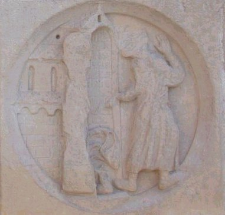&nbsp;<br>
        <font face="Arial,Helvetica"><font color="#000099"><font size="-1">FIGURE
              I<br>
              L'Inconstance - cf. <a href="#" title="lien mort dans l'archive">Gobineau de
                Montluisant</a><br>
            </font></font></font></center>
      <blockquote><i><font face="Arial,Helvetica"><font color="#990033"><font size="-1">"[Le
vieillard]...
                vient d'arracher le vélum qui en dérobait l'entrée aux regards
                profanes. C'est le premier pas accompli dans la pratique, la
                découverte de l'agent capable d'opérer la réduction du corps
                fixe, de le réincruder, selon l'expression reçue, en une forme
                analogue à celle de sa prime substance."</font></font></font></i>
        <br>
        <br>
        <font face="Arial,Helvetica"><font color="#000099">Cette citation se
            rapporte à l'opération qui consiste à dissoudre les « <i><font size="-1">métaux
                morts</font></i> », c'est-à-dire les chaux métalliques des
            anciens chimistes dans un fondant approprié ; c'est l'agent dont
            parle Fulcanelli... Plus loin (</font><i><font color="#990000"><font

                size="-1"><b>Myst</b>.</font></font></i><font color="#990000"><font

              size="-1">, p.181</font></font><font color="#000099">), Fulcanelli
            nous dit que le dissolvant permet la réincrudation de l'or, qu'il
            permet entre autre de lui donner une </font><i><font color="#660000"><font

                size="-1">forme
                saline,
                friable et très fusible</font></font></i><font color="#000099">
            : elle correspond au rajeunissement du roi et à la transition vers
            l'acquisition d'une nouvelle couronne «<font size="-1"> <i>infiniment
plus
                noble que la première</i></font> ». Dans les <b><font size="-1"><i>DM
                  I</i>,</font></b> p.272, nous relevons cet autre extrait :</font></font>
        <p><i><font face="Arial,Helvetica"><font color="#990033"><font size="-1">"C'est
donc
                  avec beaucoup de raison que certains auteurs assurent que l'or
                  et le mercure ne peuvent concourir, en tout ou en partie, à
                  l'élaboration de l'oeuvre. Le premier... parce que son agent
                  propre en a été séparé lors de son achèvement, et le second,
                  parce qu'il n'y a jamais été introduit."</font></font></font></i>
        </p>
        <p><font face="Arial,Helvetica"><font color="#000099">Par là, Fulcanelli
              veut signaler que l'or fait partie des métaux les moins oxydables
              alors que le mercure est liquide à la température ordinaire et
              qu'il est capable de dissoudre l'or et l'argent commun ; et plus
              loin :</font></font> </p>
        <p><i><font face="Arial,Helvetica"><font color="#990033"><font size="-1">"La
plupart
                  des hermétistes pensent qu'il faut entendre, par le terme
                  réincrudation, le retour du métal à son état primitif."</font></font></font></i>
        </p>
        <p><font face="Arial,Helvetica"><font color="#000099">et Fulcanelli de
              nous assurer que cette opération est fausse car il est impossible
              à la nature de détruire l'effet d'un travail séculaire.
              Poursuivons :</font></font> </p>
        <p><i><font face="Arial,Helvetica"><font color="#990033"><font size="-1">"D'autres
chercheurs
                  croient qu'il suffit de baigner le métal dans la substance
                  primitive et mercurielle qui, par maturation lente et
                  coagulation progressive, lui a donné naissance."</font></font></font></i>
        </p>
        <p><font face="Arial,Helvetica"><font color="#000099">Fulcanelli doute
              de cette hypothèse car il pense que l'opération se résumerait
              alors au mélange d'un même corps pris à deux états différents de
              son évolution, l'un liquide, l'autre solide. Cette piste,
              toutefois, peut s'avérer intéressante si l'on essaye de déterminer
              si le Mercure philosophique existe dans la nature : ce point est
              étudié dans deux sections [<a href="../original/merc-nat.html">mercure de
                nature</a> - <font size="-1"><a href="../original/heraldique.html">blasons
                  alchimiques</a></font>.] Finalement, « <i><font size="-1">Remettre
l'or
dans
                  sa première matière</font></i> » semble conduire à réaliser
              l'animation du métal par l'emploi d'un agent vital qui constitue «
              l'Esprit » qui s'est enfui du corps. Cette animation consiste à
              dissoudre les chaux des métaux, seul moyen connu de les faire
              renaître en un corps « supérieur », sujet de la réincrudation.
              Plus loin encore (</font><b><font color="#660000"><font size="-1"><i>DM,
                    I</i>,</font></font></b><font color="#660000"><font size="-1">
                p.311</font></font><font color="#000099">) l'Adepte revient sur
              cette pensée et nous dit qu'il importe de savoir que :</font></font>
        </p>
        <p><i><font face="Arial,Helvetica"><font color="#990033"><font size="-1">"...
                  les métaux, liquéfiés et dissociés par le mercure, retrouvent
                  le pouvoir végétatif qu'ils possédaient au moment de leur
                  apparition sur le plan physique...[Le dissolvant] en sépare
                  les impuretés hétérogènes importées des gîtes métallifères...
                  il les ranime, leur donne une vigueur nouvelle et les
                  rajeunit...C'est ainsi que les métaux vulgaires se trouvent
                  réincrudés, c'est-à-dire remis dans un état voisin de leur
                  état originel..."</font></font></font></i> </p>
        <p><font face="Arial,Helvetica"><font color="#000099">A la page suivante
              (</font><font color="#660000"><font size="-1">p.312</font></font><font

              color="#000099">) :</font></font> </p>
        <p><i><font face="Arial,Helvetica"><font color="#990000"><font size="-1">"Et
la
                  différenciation de ces deux mercures, l'un agent de
                  rénovation, l'autre de procréation, constitue l'étude la plus
                  ingrate que la science ait réservée au néophyte."</font></font></font></i>
        </p>
        <p><font face="Arial,Helvetica"><font color="#000099">Il récapitule
              ensuite (</font><font color="#660000"><font size="-1"><b><i>DM, II</i></b>,
                p.79</font></font><font color="#000099">) la marche à suivre
              pour l'étudiant qui désire pénétrer cet arcane :</font></font> </p>
        <p><i><font face="Arial,Helvetica"><font color="#990000"><font size="-1">"Car
le
                  soufre et le mercure des métaux, extraits et isolés sous
                  l'énergie désagrégeante de notre premier agent, ou dissolvant
                  secret, se réduisent d'eux-mêmes, par simple contact, en forme
                  d'huile visqueuse, onctuosité grasse et coagulable, que les
                  Anciens ont appelée&nbsp;<a  name="humide radical"></a><a href="../original/humide-radical.html">humide
radical
                    métallique</a> et <a href="../original/imitat-prec.html">mercure des
                    sages</a>... cette liqueur... peut être considérée
                  logiquement comme représentant un métal liquéfié et
                  réincrudé..."</font></font></font></i> <br>
          <i><font face="Arial,Helvetica"><font color="#990000"><font size="-1"></font></font></font></i>&nbsp;</p>
      </blockquote>
      <center>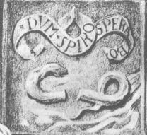 <br>
        <font face="Arial,Helvetica"><font color="#000099"><font size="-1">FIGURE
              II</font></font></font></center>
      <blockquote><font face="Arial,Helvetica"><font color="#000099">C'est bien
            cette désagrégation qui est exprimée sur le 9<sup>ème</sup> caisson
            de la 2<sup>ème</sup> série du château de Dampierre.<b><font size="-1"></font></b></font></font><b><font

            face="Arial,Helvetica"><font color="#990000"><font size="-2"></font></font></font></b>
        <center>
          <p><font face="Arial,Helvetica"><b><font color="#990000"><font size="-1">.DVM.SPIRO.SPERABO.</font></font></b><font

                color="#000099"> :</font></font><font face="Arial,Helvetica"><font

                color="#000099"></font></font> </p>
          <p><font face="Arial,Helvetica"><font color="#000099">« </font><i><font

                  color="#990000"><font size="-1">Tant que je respire, j'espère</font></font></i><font

                color="#000099"> ».</font></font></p>
        </center>
        <font face="Arial,Helvetica"><font color="#000099"></font></font>
        <p><font face="Arial,Helvetica"><font color="#000099">Ce phylactère
              signifie que les Soufres blanc et rouge [</font><font color="#990000"><font

                size="-1">dont les hiéroglyphes célestes sont représentés par la
                lune et le soleil</font></font><font color="#000099">] se
              trouvant simplement associés et non radicalement unis, le Mercure
              philosophique ne constitue donc qu'un mélange d'éléments tenus en
              suspension et non pas dissous <span style="text-decoration: underline;">radicalement</span>.
              Souvent, l'association radicale ou accrétion pourra être obtenue
              par l'évaporation d'une grande partie de ce dissolvant
              (reportez-vous à notre <font size="-1"><a href="../original/imitat-prec.html">Mercure
                  philosophique</a></font>). Ce Mercure - ainsi que le préconise
              fort justement Fulcanelli -&nbsp;<a  name="conditions"></a></font><font

              color="#006600">doit être conservé à l'abri de la lumière et dans
              des flacons bouchés à l'émeri</font><font color="#000099">. Nous
              ajouterons que ces flacons doivent être conservés</font><font color="#006600">
              renversés</font><font color="#000099">. Cela jette d'ailleurs un
              éclaircissement sur le contenu de deux vases dont nous parle
              l'Artiste Cyliani dans son <b><i><font size="-1">Hermès Dévoilé</font></i></b>
              [</font><font color="#660000"><font size="-1">cf. rébus de <a href="../original/st-gregoire-vievre.html">saint
                  Grégoire-sur-Vièvre</a></font></font><font color="#000099">] ;
              il s'agit du flacon, en particulier, où est contenu l'esprit
              astral qui résulte d'une déjection de l'étoile polaire [<span style="color: #660000;">assimilable
                par les Adeptes envieux au crachat de Lune ou nostoc</span>].
              Une dernière allusion explicite à la réincrudation (</font><font color="#660000"><font

                size="-1"><b><i>DM, II</i></b>, 170</font></font><font color="#000099">)
              :</font></font> </p>
        <p><i><font face="Arial,Helvetica"><font color="#990033"><font size="-1">"Cette
opération,
                  que les sages ont appelée réincrudation ou retour à l'état
                  primitif, a surtout pour objet l'acquisition du soufre et sa
                  revivification par le mercure initial. Il ne faudrait donc pas
                  prendre à la lettre ce retour à la matière originelle du métal
                  traité, puisqu'une grande partie du corps, formée d'éléments
                  grossiers, hétérogènes, stériles ou mortifiés, n'est plus
                  susceptible de régénération."</font></font></font></i> </p>
        <p><font face="Arial,Helvetica"><font color="#000099">Là encore, du
              grand Fulcanelli. Il révèle ici un secret important sur lequel
              nous allons bientôt revenir mais qu'il ne faut pas prendre « à la
              lettre » - au deuxième degré, dirons-nous... Eugène Canseliet
              s'est exprimé sur la réincrudation sans son <b><i><font size="-1">Alchimie
                    expliquée sur ses Textes classiques</font></i></b> (</font><font

              color="#660000"><font size="-1">Pauvert, 1988 pour la dernière
                édition</font></font><font color="#000099">). Dans le chapitre
              traitant de <i><font size="-1">la Matière prochaine et sa
                  préparation</font></i>, il l'assimile au début des <font size="-1"><a

                  href="../original/fontenay.html">travaux d'Hercule</a></font> (</font><font

              color="#660000"><font size="-1">p.147</font></font><font color="#000099">)
              :</font></font> </p>
        <p><i><font face="Arial,Helvetica"><font color="#990033"><font size="-1">"[L'opération]...
                  réside dans l'impérieuse nécessité que le sujet, minéral et
                  d'élection, duquel le rôle, plus tard, sera de réincruder,
                  soit ramené, le plus qu'il soit possible, vers l'état
                  primordial ; celui qui était le sien et dont il jouissait, à
                  l'intérieur de son gîte minier."</font></font></font></i> </p>
        <p><font face="Arial,Helvetica"><font color="#000099">Et plus loin, <font

                size="-1">pp. 148-149</font> :</font></font> </p>
        <p><i><font face="Arial,Helvetica"><font color="#990000"><font size="-1">"Celui-là
seul,
                  qui n'a pas expérimenté, ne peut connaître, ni même supputer,
                  la vertu toute-puissante d'une <u>sustentation ignée, égale
                    et longtemps dispensée</u>. En étroit rapport avec cette
                  observation répétée au laboratoire, ajoutons que notre sulfure
                  métallique, pulvérisé avec beaucoup de soins et mis dans un
                  ballon de verre de quelques deux litres, y constitue pourtant
                  une masse qui est trop dense encore, pour que son volume et
                  ses parties ne doivent être artificiellement détendus et
                  aérés. L'artiste sait alors le service que le tamis est idoine
                  à lui rendre, afin qu'il obtienne par lui, le nécessaire
                  gravier, puis qu'il sépare celui-ci, après qu'il aura
                  longuement assuré son office."</font></font></font></i> </p>
        <p><font face="Arial,Helvetica"><font color="#000099">Si nous avons cité
              en entier ce passage, c'est qu'il constitue l'indice presque
              palpable de la vraie nature du Sujet des Sages et explique que la
              « <i><font size="-1">réincrudation</font></i> » dont parle E.
              Canseliet (p.147) ait un rapport étroit avec le métal qui
              constitue ce Sujet mais qui est détruit par les procédés modernes
              de raffinage. Lisez d'ailleurs ce que dit Berthier, dans son <b><i><font

                    size="-1">Traité des Essais par la voie sèche</font></i></b>
              sur les conséquences du travail mené sur des matières brutes :</font></font>
          <br>
          &nbsp; </p>
        <center>
          <table cols="1" style="width: 71%;" background="fondmarbre.jpg" border="0">
            <tbody>
              <tr>
                <td><font face="Arial,Helvetica">Les hydrates perdent leur eau à
                    une température peu élevée, et laissent des oxydes qui se
                    prêtent beaucoup moins facilement aux combinaisons que les
                    hydrates eux-mêmes ; mais en outre on a remarqué que
                    lorsqu'on chauffe à un certain degré certains oxydes, tels
                    que les oxydes de titane, d'étain, d'alumine, etc., et
                    beaucoup d'autres corps, ils perdent la faculté de se
                    combiner avec les dissolvants ordinaires, et ne peuvent plus
                    être attaqués que par les agents chimiques les plus
                    puissants, et seulement à l'aide de la chaleur : <u><font color="#006600"><font

                          size="-1">ils deviennent alors ce qu'on appelle
                          indifférents</font></font></u>. Plusieurs corps, au
                    moment où ils passent à l'état d'indifférence, s'échauffent
                    d'eux-mêmes tout-à-coup jusqu'à l'incandescence. Il est
                    probable qu'à cet instant les molécules prennent, les unes
                    par rapport aux autres, un nouvel arrangement.</font></td>
              </tr>
            </tbody>
          </table>
        </center>
        <p><font face="Arial,Helvetica"><font color="#000099">Vous noterez que
              ce texte n'émane pas d'un alchimiste mais d'un chimiste
              extrêmement réputé dans sa partie au XIX<sup>e</sup> siècle ;
              Fulcanelli ne s'exprime pas autrement quand il assure que les
              métaux raffinés « sont morts » par la perte qu'ils éprouvent de ne
              plus pouvoir se combiner à des dissolvants. E. Canseliet parle de
              l'autre type de réincrudation dans le même ouvrage (</font><font color="#660000"><font

                size="-1"><i>l'Oeuf philosophal</i>, p.264</font></font><font color="#000099">)
              sur «<i><font size="-1"> la vie intense d'un or réincrudé</font></i>
              ». Par parenthèse, le procédé qu'il décrit semble être du même
              ordre que celui de Georges Frédéric Stras (1700-1773) dont nous
              avons parlé ailleurs (</font><font color="#660000"><font size="-1">cf.
                <a href="../original/etain.html">voie humide</a></font></font><font color="#000099">).
              C'est donc vers une impasse qu'il conduit ici l'étudiant en lui
              révélant uniquement la voie spagyrique qui est celle de la pierre
              factice - notez bien que je ne dis pas « frauduleuse » -. Nous
              terminerons ce chapeau introductif par une citation du <font size="-1"><a

                  href="../original/cosmopolite-1.html">Cosmopolite</a></font> puis de Serge
              Hutin :</font></font> </p>
        <p><i><font face="Arial,Helvetica"><font color="#990033"><font size="-1">"Mais
sois
                  averti de ceci, que tu ne prennes pas l'or et l'argent du
                  vulgaire, car ceux-ci sont morts; prends les nôtres qui sont
                  vifs."</font></font></font></i> </p>
        <p><font face="Arial,Helvetica"><font size="-1"><i><font color="#990000">"La
matière
                  première sur laquelle opérer apparaît un secret opératique
                  jalousement gardé. Elle se trouve révélée différemment selon
                  les auteurs ; d'où fallait-il donc partir ?... D'un minerai
                  sulfureux comme la stibine ? De la galène ? De la galle du
                  chêne [kermès]...? "</font></i><font color="#000099"> (</font><font

                color="#660000"><b><i>L'Alchimie</i></b>, p.86, Que sais-je ?,
                PUF, 1999</font><font color="#000099">)</font></font></font> </p>
        <p><font face="Arial,Helvetica"><font color="#000099">S. Hutin aurait pu
              répondre à la question s'il avait su au juste de quoi est composé
              le tartre vitriolé et l'usage que l'on peut en faire ; quand à la
              galle du chêne, nous avons vu dans la section sur les <font size="-1"><a

                  href="../original/heraldique.html">blasons alchimiques</a></font> que l'on
              y dépiste le hiéroglyphe des rouilles communes.</font></font> <br>
          &nbsp; <br>
          &nbsp;</p>
      </blockquote>
      <center><a  name="2)-"></a><font face="Arial,Helvetica"><font color="#660000"><font

              size="+1">2)- Réincrudations</font></font></font></center>
      <blockquote>
        <blockquote><a  name="a)-"></a><font face="Arial,Helvetica"><font color="#660000">a)-
              <u>L'exemple du&nbsp;<a  name="Sujet"></a>Sujet des Sages</u></font></font></blockquote>
        <font face="Arial,Helvetica"><font color="#000099">A la lumière de ce
            que nous avons dit supra, il est évident qu'il existe non pas une
            mais </font><font color="#006600">deux sortes</font><font color="#000099">
            de réincrudation possibles ; l'une - et la première dans l'ordre
            chronologique - correspond selon nous à une </font><font color="#006600">indication
sur
            le Sujet des Sages,</font><font color="#000099"> l'autre - et la
            seconde dans l'ordre chronologique - manifeste l'</font><font color="#006600">accrétion
du
            principe Soufre</font><font color="#000099"> à la semence métallique
            ou Toison d'or.</font></font> <br>
        <br>
        <font face="Arial,Helvetica"><font color="#000099">De la première
            réincrudation, nous savons (<a href="../original/imitat-prec.html">1</a>,<a href="../original/compendium.html">2</a>)
            que sa recherche gravite autour de l'antimoine (<a href="../original/philalethe-6.html#stibine">1</a>)
            mais que l'antimoine en tant que métal est impropre à l'oeuvre.
            C'est du reste la raison pour laquelle Isaac Newton (<a href="../original/symb-dir-prim.html#Newton_index">1</a>,<a

              href="../original/symb-dir-prim.html#a">2</a>) s'est fourvoyé
            dans sa recherche : il utilisait le bon métal mais pas dans sa forme
            appropriée. C'est aussi pourquoi Fulcanelli nous dissuade tant de
            l'utiliser en tant « <sub><span style="font-style: italic; color: #660000;">qu'antimoine
                vulgaire</span> </sub>» (</font><b><font color="#660000"><font

                size="-1"><i>DM, I</i>,</font></font></b><font color="#660000"><font

              size="-1"> p.397</font></font><font color="#000099">). Quel est
            donc ce métal et de quel gîte minier le tirerons-nous ? Quelle est
            la propriété qui le rend si important pour la conduite de l'oeuvre ?
            Quel est cet&nbsp;<a  name="humide"></a>humide radical qu'évoque si
            ostensiblement Fulcanelli ? Le lecteur qui a lu notre <a href="../original/imitat-prec.html">Mercure
              philosophique</a> ou qui a parcouru notre <a href="../original/compendium.html">schéma
              de synthèse</a> de la Pierre en a déjà certainement une idée mais
            il ne sait peut-être pas encore en quoi le fait de réincruder un
            métal nous permettra d'avoir une piste sur le Sujet des Sages...</font></font>
        <br>
        <font face="Arial,Helvetica"><font color="#000099"><br>
            Le <b><i><font size="-1"><a href="../original/liber-artephius.html">Secret
                    Livre du Tres-ancien Philosophe Artephius</a></font></i></b>
            (<a href="../original/prima-materia.html#Artephius">1</a>) (</font><font color="#660000"><font

              size="-1">in <i>Trois Traitez de la Philosophie naturelle</i>,
              Guillaume Marette, Paris, 1612</font></font><font color="#000099">)
            nous indique au début que :</font></font>
        <p><font face="Arial,Helvetica"><font size="-1"><font color="#990033">«
                <i>L'antimoine est des parties de Saturne... »</i></font><font color="#000099">.</font></font></font>
        </p>
        <p><font face="Arial,Helvetica"><font color="#000099">C'est dire par là
              que l'étude des minerais de plomb nous sera de quelque utilité.
              Nous avons déjà abordé la production du plomb métallique dans
              notre commentaire de Philalèthe (</font><font color="#660000"><font

                size="-1"><b><i>Introïtus,VI</i></b> : <a href="../original/philalethe-6.html#plomb_1">1</a>,
                <a href="../original/philalethe-6.html#plomb_2">2</a>, <a href="../original/philalethe-6.html#plomb_3">3</a>,
                <a href="../original/philalethe-6.html#gal%C3%A8ne">4</a>, <a href="../original/philalethe-6.html#matte">5</a></font></font><font

              color="#000099">).&nbsp;
              Nous ne ferons ici que reprendre des éléments directement en
              rapport avec notre propos : lors du traitement des minerais impurs
              par le charbon, on obtient du plomb et des mattes (</font><font color="#660000"><font

                size="-1">sous-sulfure de plomb ou Pb<sub>2</sub>S</font></font><font

              color="#000099">) à partir de la galène ou sulfure de plomb qui
              est le minerai le plus répandu d'où l'on tire le plomb. Par
              analogie, c'est donc vers le </font><font color="#006600">sulfure
              d'antimoine</font><font color="#000099"> (</font><font color="#660000"><font

                size="-1"><a href="../original/philalethe-6.html#stibine">1</a>, <a href="../original/compendium.html#5">2</a>,
                <a href="../original/symb-dir-prim.html#a">3</a></font></font><font

              color="#000099">) ou stibine que nous allons nous tourner : de
              toutes les espèces du genre antimoine, le sulfure est la plus
              abondante et la seule qu'on exploite comme minerai. Par exemple,
              on en trouve en France - dans la première partie du XIX<sup>e</sup>
              siècle - dans les départements du Gard, de l'Ardèche, de la
              Haute-Loire, du Puy-de-Dôme ou de la Vendée. Le sulfure
              d'antimoine est d'un gris bleuâtre métallique assez éclatant,
              lamelleux, fragile, tendre et un peu tachant. Il cristallise en
              aiguilles. Ses gangues sont le plus souvent le quartz, le sulfate
              de baryte et la pyrite de fer. Sur le charbon, </font><font color="#006600">il
              est absorbé et se recouvre d'une masse vitreuse noire</font><font

              color="#000099"> ; après quelques instants d'insufflation il se
              forme dans le charbon des globules métalliques qui paraissent être
              du sous-sulfure. Voyons exactement comment on peut se procurer du
              sulfure d'antimoine en partant du minerai :</font></font></p>
      </blockquote>
      <center>
        <table cols="1" style="width: 81%;" background="fondmarbre.jpg" border="0">
          <tbody>
            <tr>
              <td>
                <center><i><font face="Arial,Helvetica"><font color="#990000"><font

                          size="+1">Préparation du sulfure d'<a  name="antimoine"></a>antimoine</font></font></font></i></center>
                <p><font face="Arial,Helvetica">Pour séparer le sulfure
                    d'antimoine de sa gangue, on concasse le minerai en morceaux
                    de la grosseur d'un oeuf tout au plus et on le chauffe à un
                    degré de chaleur convenable pour fondre le sulfure, soit
                    dans des pots percés, soit dans des tuyaux verticaux. La
                    matière métallique se sépare en grande partie de sa gangue
                    par liquation [<i><font color="#660000"><font size="-1">c'est
                          un procédé métallurgique consistant à séparer deux
                          corps qui peuvent être des métaux purs, des produits
                          intermédiaires ou des impuretés, l'un au moins des
                          corps étant à l'état fondu ; le corps resté à l'état
                          solide est séparé soit par filtration, soit par
                          décantation</font></font></i>] ;</font> </p>
                <center>
                  <p>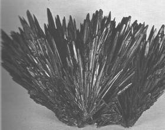<br>
                    <i><font face="Arial,Helvetica"><font size="-1">FIGURE III</font></font></i>
                    <br>
                    <i><font face="Arial,Helvetica"><font size="-1">(stibine
                          aciculaire, Felsöbanya, Roumanie)</font></font></i></p>
                </center>
                <p><font face="Arial,Helvetica">mais celle-ci en retient une
                    certaine partie par adhérence, surtout lorsque, par l'effet
                    de l'impression trop subite de la chaleur, elle s'est
                    fendillée et réduite en poudre. Cette quantité s'élève
                    quelquefois au quart du poids des scories en sorte que la
                    perte de sulfure est relativement plus grande que le minerai
                    est plus pauvre. La volatilité du sulfure d'antimoine est
                    encore une cause de perte ; aussi voit-on les cavités des
                    scories et les parois de cheminées tapissées de cristaux
                    aciculaires d'oxyde d'antimoine et quelquefois de cristaux
                    de soufre. Enfin, la fragilité des pots ou des tuyaux, qui
                    ne peuvent être faits qu'en terre cuite, occasionne souvent
                    des accidents qui font perdre beaucoup de sulfure. Ces
                    considérations portent à croire que la préparation
                    mécanique, telle qu'on l'exécute pour les minerais de plomb
                    et autres, serait un moyen plus économique et plus productif
                    de traiter les minerais d'antimoine. Pour préparer le régule
                    [<font color="#000099"><font size="-1">c'est le métal
                        antimoine</font></font>] on grille le sulfure dans des
                    fours à réverbère et l'on fond la matière grillée dans des
                    creusets avec les 2/5 de son poids de tartre brut ou avec du
                    charbon imbibé d'une forte dissolution de carbonate de soude
                    et on le purifie en le refondant une ou deux fois. Le régule
                    du commerce contient presque toujours un peu de soufre et de
                    fer et souvent un peu d'arsenic.</font></p>
              </td>
            </tr>
          </tbody>
        </table>
      </center>
      <center><i><font face="Arial,Helvetica"><font color="#990000"><font size="-1">adapté
d'après
                Berthier : Traité des Essais par la voie sèche</font></font></font></i></center>
      <blockquote><font face="Arial,Helvetica"><font color="#000099">Notons au
            passage que l'attaque initiale de la stibine donne bien un composé
            de </font><font color="#006600">couleur noire</font><font color="#000099">.
            Que peut nous fournir le sulfure d'antimoine ? Nous renvoyons le
            lecteur à notre section sur le <font size="-1"><a href="../original/imitat-prec.html#antimoine">Mercure
                philosophique</a></font> et à Fulcanelli <font size="-1"><a href="#conditions">supra</a></font>.
            Nous dirons enfin que le sulfure d'antimoine est d'un gris foncé et
            doué d'un éclat métallique très prononcé : s'agirait-il du </font><font

            color="#660000">loup gris </font><font color="#000099">des vieux
            auteurs et de celui qu'on aperçoit sur la&nbsp;<a  name="Clef_I"></a><i><font

                size="-1"><a href="../original/emblemes.html#Clef%20I">Clef I</a></font></i>
            de B. Valentin ? Notre objet a donc été ici de montrer qu'un corps «
            natif » comme le sulfure d'antimoine est le type même du composé
            dont il y a lieu de se demander comment on pourrait l'obtenir à
            partir du « <i>métal mort </i>», c'est-à-dire de&nbsp; l'antimoine
            « <i>vulgaire</i> ». On aurait donc ainsi un exemple de la </font><font

            color="#660000">réincrudation</font><font color="#000099"> première
            telle que Fulcanelli et E. Canseliet en parlent. C'est donc
            directement à partir du régule d'antimoine qu'il faut travailler. Ce
            régule, à l'époque de Newton, exerçait une véritable fascination :
            si certaines conditions étaient réunies lors de sa réduction par le
            fer selon la réaction :</font></font>
        <center>
          <p><font face="Arial,Helvetica"><font size="-1"><font color="#990000">Sb<sub>2</sub>S3
                  [</font><font color="#000099">sulfure d'antimoine</font><font

                  color="#990000">] + 2Fe [</font><font color="#000099">fer</font><font

                  color="#990000">] --&gt; 2Sb [</font><font color="#000099">régule
                  d'antimoine</font><font color="#990000">] + Fe<sub>2</sub>S3 [</font><font

                  color="#000099">sulfure de fer</font><font color="#990000">]</font></font></font></p>
        </center>
        <p><font face="Arial,Helvetica"><font color="#000099">les cristaux
              d'antimoine se regroupaient autour d'un point central ce qui
              donnait à l'ensemble une forme d'étoile (</font><font color="#660000"><font

                size="-1">voir <a href="../original/symb-dir-prim.html" class="lien-repare" title="ancre absente de la page d'origine : lien ramené en haut de page">1</a>,
                <a href="../original/imitat-prec.html#sulfure_antimoine">2</a> pour des
                développements sur le sujet</font></font><font color="#000099">).
En
              résumé, à l'époque de Philalèthe et de Newton, on pensait que
              l'antimoine « ouvrait » les métaux&nbsp; et que l'on pouvait en
              extraire le « Mercure », cette supposition faisant certainement
              suite aux écrits du pseudo-Basile Valentin et d'Artephius ;
              d'ailleurs, un problème chronologique se pose car c'est B.
              Valentin qui est censé avoir le premier évoqué l'antimoine alors
              qu'on le trouve déjà mentionné par Artephius : il y a donc lieu de
              croire que le texte attribué à Artephius remonte à l'époque de B.
              Valentin. Comment donc réincruder l'antimoine ? Il faut passer
              soit par le régule d'antimoine (le métal), soit par le chlorure
              d'antimoine ; examinons les deux procédés :</font></font> <br>
          <font color="#000099"><font face="Wingdings">a)-&nbsp;</font><font face="Arial,Helvetica">
              on peut préparer le sulfure d'antimoine par combinaison directe
              avec le </font></font><font face="Arial,Helvetica"><font color="#006600">soufre</font><font

              color="#000099"> mais il est nécessaire de fondre </font><font color="#006600">plusieurs
              fois</font><font color="#000099"> la matière avec du soufre ;</font></font>
          <br>
          <font color="#000099"><font face="Wingdings">b)-&nbsp;</font><font face="Arial,Helvetica">
              on passe d'abord par la synthèse du </font></font><font face="Arial,Helvetica"><font

              color="#006600">chlorure d'antimoine</font><font color="#000099">
              (Sb<sub>2</sub>Cl<sub>3</sub>) que l'on peut obtenir en faisant
              passer lentement du </font><font color="#006600">chlore</font><font

              color="#000099"> à travers un tube qui renferme de l'antimoine en
              excès. On peut aussi obtenir le sesquichlorure d'antimoine en
              distillant dans une cornue de verre un mélange intime de 1 partie
              d'</font><font color="#006600">antimoine</font><font color="#000099">
              et de 2 parties de </font><font color="#006600">sublimé corrosif</font><font

              color="#000099"> (bichlorure de mercure). Le chlorure d'antimoine
              forme une matière blanche, facilement fusible ; sa consistance
              butyreuse lui a fait donner autrefois le nom de&nbsp;<a  name="beurre_antimoine"></a></font><font

              color="#006600">beurre d'antimoine</font><font color="#000099">.
              Le sulfure d'antimoine peut alors être obtenu par voie humide en
              faisant passer un courant de gaz sulfhydrique (</font><font color="#006600">hydrogène
              sulfuré</font><font color="#000099">) à travers une dissolution de
              chlorure d'antimoine dans de l'eau chargée d'acide chlorhydrique.
              Il se forme alors un précipité orangé qui est du sulfure hydraté
              et dont la couleur est caractéristique car aucun autre sel ne
              donne une telle couleur. Ce sulfure perd facilement son eau par la
              chaleur et se transforme en </font><font color="#006600">sulfure
              gris anhydre</font><font color="#000099">. Plus exactement, il </font><font

              color="#006600">perdra peu à peu son eau au fur et à mesure que
              l'on augmentera la température</font><font color="#000099"> ;
              voici ce qu'en dit Gay-Lussac :</font></font></p>
      </blockquote>
      <center>
        <table cols="1" style="width: 81%;" background="fondmarbre.jpg" border="0">
          <tbody>
            <tr>
              <td>
                <center><i><font face="Arial,Helvetica"><font color="#660000"><font

                          size="+1">Préparation du sulfure d'antimoine</font></font></font></i></center>
                <p><font face="Arial,Helvetica">Il y a un sulfure d'antimoine
                    que l'on trouve dans la nature : il est noir, très fusible ;
                    il cristallise en beaux prismes qui ont une cassure grise ;
                    lorsqu'on l'écrase, il tache le papier en gris. C'est là un
                    sulfure simple d'antimoine. Maintenant je prends une
                    dissolution d'émétique [tartrate d'antimoine et de potasse],
                    et je verse dedans de l'acide hydrosulfurique [du gaz
                    sulfhydrique] ; il se forme aussitôt un beau précipité rouge
                    brique... c'est véritablement un sulfure hydraté, car on
                    peut lui enlever continuellement de l'eau, depuis la
                    température de l'atmosphère jusqu'à environ 250°. Voici ce
                    précipité qui a été desséché à l'air ; <font color="#006600">chauffez-le
à
                      30°, il donnera de l'eau, et en continuant la même
                      température, il n'en donnera plus ; mais chauffez-le à
                      50°, il donnera de l'eau et s'arrêtera ensuite. Il se
                      conduira de la même manière en élevant successivement la
                      température jusqu'à 250°.</font> Arrivé à ce point, il
                    cesse de donner de l'eau et est complètement noir. Sa
                    couleur a varié à chaque degré de chaleur qu'il a subi ;
                    mais à l'état noir, il ressemble au sulfure d'antimoine
                    naturel, quoiqu'il soit moins fusible.</font></p>
              </td>
            </tr>
          </tbody>
        </table>
      </center>
      <center><i><font face="Arial,Helvetica"><font color="#000099"><font size="-1">adapté
d'après
                Gay-Lussac</font></font></font></i> <br>
        <i><font face="Arial,Helvetica"><font color="#000099"><font size="-1">(Cours
de
                chimie. Tome second. L'histoire des sels. La chimie végétale et
                animale, Pichon et Didier, Paris, 1828)</font></font></font></i></center>
      <blockquote>&nbsp; <br>
        <font face="Arial,Helvetica"><font color="#000099">Voici un schéma «
            imagé » qui résume nos observations :</font></font> <br>
        &nbsp;</blockquote>
      <center>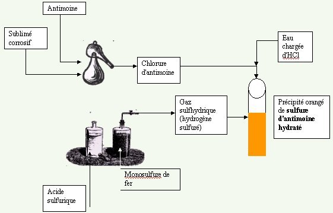 <br>
        <font face="Arial,Helvetica"><font color="#000099"><font size="-1">FIGURE
              IV</font></font></font></center>
      <blockquote><font face="Arial,Helvetica"><font color="#000099">On
            remarquera que dans ce schéma, l'hydrogène sulfuré provient de
            l'attaque du monosulfure de fer par de l'acide sulfurique (<a href="../original/imitat-prec.html#fer">1</a>).
Il
            est évident que notre schéma est simplifié et ferait sans doute
            sourire un chimiste ; en théorie du moins, il est possible de </font><font

            color="#006600">réincruder l'antimoine</font><font color="#000099">
            et de parvenir ainsi à obtenir du </font><font color="#006600">sulfure
            d'antimoine</font><font color="#000099"> ; en effet, l'hydrogène
            sulfuré produit par le monosulfure de fer est impur et seul le
            sulfure d'antimoine conduit à l'obtention d'<a  name="hydrogène_sulfure"></a></font><font

            color="#006600">hydrogène sulfuré pur</font><font color="#000099">.
            En fait, il ne faut pas trop se leurrer ; c'est davantage une
            indication sur le métal à employer qu'un procédé de technique qui
            est à retenir ici et surtout la couleur&nbsp;<a  name="orangé"></a></font><font

            color="#006600">orangé</font><font color="#000099"> qui est
            caractéristique. Or, cette couleur se retrouve dans de nombreux
            textes, à commencer par ceux de Fulcanelli et d'E. Canseliet à
            chaque fois qu'ils nous parlent de l'aurore ou d'un astre qui se
            lève ou encore de l'Orient. Nous en trouvons un premier aperçu dans
            ce texte (</font><i><font color="#660000"><font size="-1"><b>Myst</b>.</font></font></i><font

            color="#660000"><font size="-1">, p.63</font></font><font color="#000099">)
            :</font></font>
        <p><i><font face="Arial,Helvetica"><font color="#990033"><font size="-1">"En
provençal,
                  le fer est appelé aran et iran, suivant les différents
                  dialectes. C'est l'hiram maçonnique, le divin&nbsp;<a  name="Bélier"></a>Bélier...
[il]
                  exprime le lever d'un astre qui sort de la mer... Nous
                  reconnaîtrons notre aran, iran,..., le soleil levant."</font></font></font></i>
        </p>
        <p><font face="Arial,Helvetica"><font color="#000099">L'aurore est
              évoquée à plusieurs reprises par E. Canseliet, en particulier son
              <i><b><font size="-1">Alchimie</font></b> </i>(</font><i><font color="#660000"><font

                  size="-1">Le Symbolisme alchimique</font></font></i><font color="#000099">)
              où il parle <span style="font-style: italic;">par exemple du
                traité de<span style="font-weight: bold;"> </span></span><span

                style="font-weight: bold; font-style: italic;">l'Aurore</span>
              du docte Henri de Lintaut [<span style="color: #660000;">cf.
                Philalèthe (<b><i><font size="-1"><a href="../original/philalethe-3.html#Lintaut">Introïtus,
                        III</a></font></i></b>) ; cf.(</span></font><span style="color: #660000;"><font

                size="-1"><a href="../original/symb-dir-prim.html#a">1</a>, <a href="../original/st-gregoire-vievre.html#Aurore">2</a></font></span><font

              color="#000099"><span style="color: #660000;">)</span>]. L'aube
              rappelle (= </font><font color="#006600">alba</font><font color="#000099">)
              la couleur blanche propre au chlorure d'antimoine mais il ne
              semble pas qu'il faille retenir l'interprétation qu'en donne E.
              Canseliet dans ses <b><i><font size="-1">Deux Logis alchimiques</font></i></b>
              (p.310) :</font></font> </p>
        <p><i><font face="Arial,Helvetica"><font color="#990033"><font size="-1">"La
licorne,
                  ou mieux, dans l'orthographe ancienne, la lycorne est la
                  lumière naissante du mercure, suivant l'étymologie indéniable
                  et cabalistique du substantif Luch , aube et Ornis oiseau..."</font></font></font></i>
        </p>
        <p><font face="Arial,Helvetica"><font color="#000099">Je rappelle enfin
              ma propre section [<a href="../original/aurora-consurgens.html">Aurora
                consurgens</a>]. Enfin, est-il besoin d'insister sur le phénix ?
              Sur la licorne, cf. <font size="-1"><a href="../original/fontenay.html">Fontenay</a></font>.
              On voit aussi - par parenthèse - l'usage possible du </font><font

              color="#006600">sublimé
              corrosif </font><font color="#000099">(</font><font color="#660000"><font

                size="-1">bichlorure
                de mercure</font></font><font color="#000099">) dans l'oeuvre.
              Georges Ranque dans <i>l<b><font size="-1">a Pierre philosophale</font></b></i>
              (</font><font color="#660000"><font size="-1">Laffont, Paris, 1972</font></font><font

              color="#000099">) donne la recette de Nicolas Lémery pour la
              préparaton du beurre d'antimoine (chlorure d'antimoine) et du
              sublimé corrosif. En définitive, l'intérêt de ces substances
              chimiques est d'intervenir comme intermédiaires dans l'obtention
              du sulfure d'antimoine « artificiel ». Mais, nous dira-t-on, en
              quoi intervient le sulfure d'antimoine dans le Grand oeuvre ?</font></font>
        </p>
        <p><font color="#000099"><font face="Wingdings">a)- </font><font face="Arial,Helvetica">D'abord,
il
              permet aux alchimistes modernes de préparer du sulfure de
              potassium, applicable pour la voie sèche ;</font></font> </p>
        <p><font color="#000099"><font face="Wingdings">b)- </font><font face="Arial,Helvetica">Il
n'est
              pas possible que les anciens alchimistes aient pu utiliser
              l'hydrogène sulfuré que l'on prépare à partir de sulfure
              d'antimoine et d'huile de vitriol ; l'antimoine, ici, correspond à
              ce que Fulcanelli appelle l'âne-timon et comme il l'explique
              lui-même, pas un atome d'antimoine n'est nécessaire au Grand
              oeuvre. C'est donc par pure cabale qu'il faut entendre
              l'antimoine. Nous renvoyons le lecteur à ce que nous en avons déjà
              dit [</font></font><font face="Arial,Helvetica"><font color="#660000"><font

                size="-1"><a href="../original/prima-materia.html#stibium">1</a>, <a href="../original/gardes-corps.html" class="lien-repare" title="ancre absente de la page d'origine : lien ramené en haut de page">2</a>,
                <a href="../original/symb-dir-prim.html#a">3</a>, <a href="../original/philalethe-6.html#stibine">4</a>,
                <a href="../original/st-gregoire-vievre.html#artimon">5</a></font></font><font

              color="#000099">].</font></font> </p>
        <p><font face="Arial,Helvetica"><font color="#000099">Si donc
              l'antimoine conduit à une impasse, vers quel minerai se
              tournera-t-on et en quoi le fait de le « réincruder » sera-t-il de
              quelque utilité ? Au vu de tout ce que nous avons dit dans la
              section du Mercure et du Soufre, il est évident que nous avons
              besoin d'un agent qui puisse dissoudre, dans un premier temps, des
              oxydes ou des sulfates afin que dans une deuxième temps, par
              volatilisation complète ou partielle de l'agent, on obtienne une
              cristallisation. Déjà, un simple agent physique permet d'opérer
              des transformations singulières à partir du simple verre : la <i>dévitrification</i>.
              C'est cet exemple que nous allons à présent développer.</font></font>
        </p>
        <blockquote><font face="Arial,Helvetica"><font color="#660000">b)- <u>L'exemple
d'une
                coction : la&nbsp;<a  name="dévitrification"></a>dévitrification</u></font></font></blockquote>
        <font color="#000099"><font face="Arial,Helvetica">Le verre ordinaire,
            pâle reflet en vérité des somptueuses gemmes que nous avons
            évoquées, s'il est maintenu pendant longtemps à l'état de fusion
            pâteuse, éprouve une modification physique fort remarquable. Il perd
            peu à peu sa transparence, devient opaque, acquiert l'aspect de la
            porcelaine et paraît formé d'une agglomération de cristaux aiguillés
            qui changent complètement sa structure intérieure. Ce passage de
            l'état transparent et amorphe à l'état opaque et cristallin est
            connu sous le nom de dévitrification, et le nouveau produit
            s'appelle verre dévitrifié ou porcelaine de Réaumur [1683-1757],
            parce que c'est ce savant qui, en 1727, a étudié le premier cette
            curieuse transformation moléculaire. Le chimiste J. Pelouze [</font></font><font

          face="Arial,Helvetica"><font color="#660000"><font size="-1">cf. notre
              <a href="../original/teinture.html">Teinture</a></font></font><font color="#000099">]
            a constaté en 1856 que le verre, en se dévitrifiant, ne subit aucune
            altération, <span style="text-decoration: underline;">ni</span>
            dans la nature <span style="text-decoration: underline;">ni</span>
            dans les proportions de ses éléments : c'est donc tout simplement un
            effet de<a  name="dimorphisme"></a></font><i><font color="#660000">dimorphisme</font></i><font

            color="#000099">. Arrêtons-nous ici un instant pour définir les
            termes et les notions à saisir : on retient d'abord qu'une longue «
            <i>coction</i> » est nécessaire à l'apparition du phénomène ;
            celui-ci se traduit par une opacification qui procède d'une
            cristallisation : on est, à n'en pas douter, sur la </font><i><font

              color="#660000">voie alchimique</font><font color="#000099"> </font></i><font

            color="#000099">mais
            on se rend bien compte que la qualité des éléments mis en jeu n'est
            pas propice au développement des pierres fines, d'abord parce que
            les proportions requises ne sont pas respectées, ensuite parce qu'il
            manque un élément essentiel : le Soufre rouge. La proportion de
            silice est ici considérable relativement à celle qui a permis à J.J.
            <a href="../original/ebelmen-2.html">Ebelmen</a> de réaliser la synthèse des
            silicates et des aluminates. Si l'on prend comme exemple le silicate
            de zinc, celui-ci comprend 10 parties de sable d'Aumont et 25
            parties d'oxyde de zinc tandis que le verre à vitres contient 100
            parties de sable outre du sulfate de soude, du carbonate de chaux.
            Le cristal se rapproche plus des proportions requises puisqu'il se
            compose d'une partie de carbonate de potasse, de deux parties de
            minium [</font><font color="#660000"><font size="-1">oxyde de cuivre</font></font><font

            color="#000099">] et de trois parties de silice, et comme on le
            voit, la silice est à chaque fois l'élément dominant. Poursuivons.</font></font>
        <br>
        <font color="#000099"><font face="Arial,Helvetica"><br>
            On obtient cette porcelaine de&nbsp;<a  name="Réaumur"></a>Réaumur en
            entourant le verre de gypse ou de sable, le disposant ainsi dans un
            four et l'y tenant longtemps au rouge, sans le fondre. Il perd alors
            sa transparence, acquiert une surface inégale, résiste mieux
            qu'auparavant aux variations de température et aux chocs extérieurs
            ; il raye le verre, fait feu au briquet et ressemble à de la
            porcelaine. La composition de ce verre dévitrifié a longtemps posé
            des problèmes aux minéralogistes ; certains pensaient que le verre
            traité de cette manière perdait son alcali, d'autres considéraient
            que la composition restait la même ; d'aucuns en tout cas,
            s'accordaient sur le fait que pendant le ramollissement à la chaleur
            rouge, longtemps soutenue, les molécules changent de situation les
            unes par rapport aux autres et prennent une structure cristalline.
            Par exemple, si l'on abandonne une bouteille ordianire pendant
            plusieurs jours dans un four, à un degré de chaleur voisin de celui
            qui produit le ramollissement du verre, et qu'on laisse ensuite le
            four se refroidir <span style="text-decoration: underline;">lentement</span>,
            on retire une bouteille qui a perdu complètement sa transparence et
            qui ressemble à une bouteille de porcelaine. On avait d'abord pensé
            que cette transformation était due à la formation de silicates
            définis, se produisant au sein de la masse vitreuse soit par une
            sorte de liquation, soit par la volatilisation d'une partie de
            l'alcali, ou par l'absorption de celui-ci par le milieu dans lequel
            elle est placée. Plus tard, M. Pelouze a donc établi que le verre
            dévitrifié offre la même composition que le verre transparent qui
            lui a donné naissance. Les verres à base de potasse se dévitrifient
            beaucoup moins facilement que ceux à base de soude. Le silicate de
            soude est celui qui se dévitrifie le plus facilement ; il devient
            opalin par un simple recuit. La dévitrification est rendue plus
            rapide par le contact du verre en poudre mêlé avec quelques
            centièmes de son poids de sable. Ce phénomène a donné à cette sorte
            de verre l'épithète de galeux. Péligot a décrit une expérience
            fortuite qui s'est déroulée dans une verrerie à bouteilles à Blanzy
            [Saone-et-Loire] et qui a fait l'objet d'un compte-rendu à
            l'Académie des sciences en 1874 :</font></font> <br>
        &nbsp;
        <center>
          <table cols="1" style="width: 77%;" background="fondmarbre.jpg" border="0">
            <tbody>
              <tr>
                <td><font face="Arial,Helvetica">Ce four a été construit par M.
                    Videau, directeur de l'usine, avec le concours de M.
                    clémandot, ingénieur civil, dont le nom est bien connu de
                    l'Académie... Ce four ayant été mis hors feu, il y a
                    quelques mois... M. Videau a fait tirer à la poche le verre
                    resté encore fluide dans les parties déclives de la cuvette
                    ; ce travail a mis à découvert des géodes cristallines qui
                    s'étaient formées pendant le refroidissement de la roche
                    vitreuse. Ce sont ces cristaux que M. Videau, qui est un
                    ancien élève de l'Ecole centrale, m'a envoyés, en y joignant
                    des morceaux du verre transparent, de l'eau-mère qui les
                    accompagnait et aussi des fragments d'une bouteille faite
                    avec ce même verre dans les conditions normales. Il a pensé
                    avec raison que l'examen de ces produits pourrait jeter
                    quelque lumière sur le phénomène encore obscur de la
                    dévitrification du verre. Les cristaux ont pris naissance
                    d'abord aux angles du four, dont la corrosion par la matière
                    vitreuse avait fait des points saillants ; ils se sont
                    ensuite développés sur toute la surface, en formant une
                    croûte qui est restée solide après la décantation du verre à
                    la poche. ils diffèrent beaucoup, par leur aspect et par
                    leur mode de formation, de tous les échantillons de verre
                    dévitrifié que j'ai vus jusqu'à présent ; ceux-ci sont
                    tantôt opaques, homogènes, ayant l'aspect d'une poterie :
                    c'est la porcelaine de Réaumur ; tantôt ils affectent la
                    forme de prismes aiguillés ou de mamelons blancs emprisonnés
                    dans le verre qui les a fournis, et dont il est impossible
                    de les séparer complètement. Dans le remarquable échantillon
                    que je mets sous les yeux de l'Académie, les cristaux sont
                    entièrement isolés, sans mélange de verre transparent... Ils
                    se sont produits dans les mêmes conditions que les cristaux
                    de soufre et de bismuth que nous séparons si facilement dans
                    nos laboratoires d'avec la matière encore liquide dont ils
                    proviennent ; avec cette différence, toutefois, que celle-ci
                    est de même nature que les cristaux fournis par ces deux
                    corps, tandis que pour le verre, c'est précisément cette
                    question qu'il importe d'établir ou d'infirmer.&nbsp;</font></td>
              </tr>
            </tbody>
          </table>
        </center>
        <p><font face="Arial,Helvetica"><font color="#000099">Il s'agit là d'un
              véritable travail alchimique qui n'a dû qu'au hasard [en
              particulier des phénomènes de convection aux angles du four] la
              production de cristaux et de géodes cristallines.<br>
              Pour expliquer la dévitrification du verre, deux opinions ont donc
              eu cours au XIX<sup>e </sup>siècle, l'une qui consistait à penser
              que le verre dévitrifié est de même nature que le verre
              transparent et l'autre que le verre dévitrifié donne naissance à
              un partage des éléments vitreux. Dans cette seconde hypothèse, il
              se forme alors un silicate défini cristallisant au sein de la
              masse restante, celle-ci ayant, par conséquent, une composition
              qui n'est pas celle des cristaux. L'examen des produits vitreux de
              Blanzy semble lever à cet égard toute équivoque.</font></font> <br>
          &nbsp; </p>
        <center>
          <p>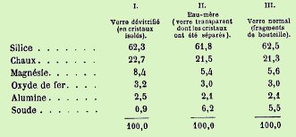<br>
            <font face="Arial,Helvetica"><font color="#000099"><font size="-1">TABLEAU
                  I</font></font></font></p>
        </center>
        <p><font face="Arial,Helvetica"><font color="#000099">Comme on le voit,
              le verre dévitrifié diffère d'une manière sensible des autres
              produits. La magnésie s'y trouve en plus forte proportion et la
              soude y fait presque défaut. On peut voir dans cette
              dévitrification une certaine forme de </font><font color="#660000">réincrudation</font><font

              color="#000099"> car les cristaux de verre dévitrifié ont été
              soumis à l'examen d'un minéralogiste [</font><font color="#660000"><font

                size="-1">Des Cloiseaux</font></font><font color="#000099">].
              Les cristaux ont la forme du&nbsp;<a  name="pyroxène"></a><font size="-1"><a

                  href="../original/imitat-prec.html#pyrox%C3%A8ne">pyroxène</a></font> [</font><font

              color="#660000"><font size="-1">silicate naturel de calcium, de
                magnésium et de fer, littéralement qui est étranger au feu</font></font><font

              color="#000099">], c'est-à-dire la forme du prisme oblique presque
              droit. En d'autres termes, le verre s'est pour ainsi dire « <i>transmuté</i>
              » en un corps cristallin qui constitue un composé important des
              roches éruptives. Au-delà de la simple analyse chimique, une autre
              épreuve peut être invoquée pour établir cette réincrudation : le
              verre dévitrifié fond à une température beaucoup plus élevée que
              le verre ordinaire. On a constaté en outre [</font><font color="#660000"><font

                size="-1">Clémandot</font></font><font color="#000099">] que
              sous l'influence d'une haute température, les cristaux qui étaient
              opaques sont devenus transparents : ils se rapprochent davantage,
              sous ce rapport, des pyroxènes naturels. La </font><font color="#660000">magnésie</font><font

              color="#000099"> semble jouer un rôle important puisque sa
              présence, dans les verres d'une dévitrification facile, doit être
              prise en sérieuse considération puisque le verre se transforme
              ainsi en un silicate analogue au pyroxène. Citons le chimiste
              Péligot :</font></font> <br>
          &nbsp; </p>
        <center>
          <table cols="1" style="width: 75%;" background="fondmarbre.jpg" border="0">
            <tbody>
              <tr>
                <td><font face="Arial,Helvetica">La magnésie se rencontre en
                    quantité plus ou moins considérable dans tous les
                    minéraux... qui... appartiennent à la famille des pyroxènes
                    ou des amphiboles. Dans les pyroxènes, le rapport de la
                    silice à l'oxygène des bases doit être comme 2 est à 1 ;
                    mais il est souvent différent. L'alumine et le sesqui-oxyde
                    de fer, que ces minéraux contiennent presque toujours en
                    assez grande quantité, doivent-ils être considérés comme des
                    corps accidentels, étrangers à la matière pure ou purifiée
                    ou bien sont-ils <font color="#000099">isomorphes</font>
                    avec la silice, ou bien encore doivent-ils concourir comme
                    oxydes jouant le rôle de bases au rapport que l'on établit
                    entre l'oxygène de ces corps et celui de la silice ?...</font></td>
              </tr>
            </tbody>
          </table>
        </center>
        <p><font face="Arial,Helvetica"><font color="#000099">Péligot se posait
              ensuite la question de savoir si, dans les espèces minérales du
              groupe auquel appartient le </font><font color="#660000">pyroxène</font><font

              color="#000099">, la recherche des alcalis, la <font size="-1"><a

                  href="../original/carbon-potasse.html#I_carb_potass">potasse</a></font> et
              la <font size="-1"><a href="../original/carbon-potasse.html#carb_soude">soude</a></font>,
              n'avait pas été un peu négligée... Si les pyroxènes et les
              amphiboles ont cristallisé, par la voie de fusion ignée, dans des
              conditions analogues à celles du verre qui se dévitrifie, ces
              minéraux devaient être accompagnées de gangues plus ou moins
              riches en </font><font color="#990000">alcalis</font><font color="#000099">
              ; de plus, les cristaux de ces mêmes substances doivent contenir
              encore des traces de leur eau-mère, indiquant ainsi leur mode de
              formation. Il semble que les verres les plus riches en chaux et en
              magnésie soient ceux qui se décomposent le plus facilement. La
              magnésie paraît jouer un rôle essentiel dans ce phénomène, cette
              base étant fournie par le sable ou le calcaire dont on fait usage
              pour former le mélange à vitrifier. Ainsi, dans l'échantillon de
              Blanzy, le calcaire d'Auxey qui entre dans la composition du verre
              qu'on y fabrique, ne contient pas moins de 20 % de carbonate de
              magnésie. Bien qu'infusible par elle-même, la magnésie concourt à
              la fusibilité des silicates qui composent le verre, cette
              fusibilité étant d'autant plus grande que les bases sont plus
              nombreuses. c'est l'occasion de se souvenir de la «&nbsp;<a  name="galle"></a><i><font

                  size="-1"><a href="../original/symb-dir-prim.html#g">galle</a>
                  du chêne</font></i> », allégorie sublime imaginée par
              Fulcanelli et E. Canseliet pour, sur une seule expression,
              envisager à la fois le Mercure et la chaux métallique...</font></font>
        </p>
        <blockquote><a  name="b)-"></a><font face="Arial,Helvetica"><font color="#000099">b)-
              <u>L'exemple d'un médiateur salin</u></font></font>
          <blockquote><a  name="alpha-"></a><font color="#000099"><font face="Symbol"><font

                  size="+1">a</font></font><font face="Arial,Helvetica">)- <u>la&nbsp;<a

                     name="fluorine"></a>fluorine</u></font></font></blockquote>
        </blockquote>
        <font face="Arial,Helvetica"><font color="#000099">Nous avons vu que
            l'aurore est mentionnée à plusieurs reprises dans les textes ; ces
            citations vont de pair avec celles de l'étoile du matin (Vénus) ;
            voici un texte extrait de notre section sur les <a href="../original/symb-dir-prim.html">textes</a>
            :</font></font>
        <p><font color="#000099"><font face="Wingdings"><font size="+2">¯ </font></font><font

              face="Arial,Helvetica">Les deux étoiles, p.21 de la même préface (</font></font><font

            face="Arial,Helvetica"><font color="#660000"><font size="-1">il
                s'agit de la préface à la deuxième édition du <i><b>Myst</b>.</i>,
                rédigée par E. Canseliet</font></font><font color="#000099">),
              sont d'interprétation plus délicate. L'étoile qui brille sur la
              vierge mystique est la même que l'étoile du Berger (Vénus), le
              matin, à l'<a  name="aurore_index"></a><font size="-1"><a href="#" class="lien-repare" title="ancre absente de la page d'origine (lien ramené en haut de page)">aurore</a></font>
              c'est-à-dire à l'Orient. Vénus n'est visible qu'avant le lever du
              soleil lorsque le ciel a une couleur rougeâtre (jaune tirant sur
              le rouge) ; la couleur de l'aurore se réfère à la matière
              première. La 2<sup>ème</sup> étoile est le signe de l'oeuvre au
              rouge. Ce problème de l'étoile double, de la « signature » double
              trouve peut-être son explication dans Canseliet :</font></font> </p>
        <p><i><font face="Arial,Helvetica"><font color="#990033"><font size="-1">"Il
y
                  a donc deux étoiles qui, nonobstant l'invraisemblance, n'en
                  forment réellement qu'une. Celle qui brille sur la Vierge
                  mystique, - à la fois notre mère et la mer hermétique, -
                  annonce la conception et n'est que le reflet de l'autre qui
                  précède l'avènement miraculeux du Fils... ce n'est pourtant
                  qu'une simple image réfléchie par le miroir de la sagesse."</font></font></font></i>
        </p>
        <p><font face="Arial,Helvetica"><font color="#000099">Ce texte est moins
              abscons qu'il n'y paraît : ce dédoublement d'image représente la
              manifestation d'une biréfringence, c'est-à-dire d'un corps capable
              de produire une double réfraction. Une certaine variété de calcite
              manifeste précisément cette propriété. Rappelons que le calcaire
              (CaCO<sub>3</sub>) est, après le quartz, le minéral le plus
              répandu de l'écorce terrestre. Dès l'Antiquité, on connaissait et
              on utilisait le calcaire ; il peut au contact de roches éruptives
              se transformer en calcaire cristallin, en marbre. A la différence
              du calcaire, la calcite n'a pas eu d'utilisation pratique pendant
              des siècles ; c'est la découverte de nombreux cristaux limpides
              dans une grande cavité de basalte, à Helgustadir en Islande, qui
              en 1669, qui a permis au médecin Erasme Bartolinus d'étudier un</font></font>
          <font face="Arial,Helvetica"><font color="#000099">phénomène jusque là
              inconnu :</font></font><br>
          &nbsp; </p>
        <center>
          <p>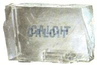<br>
            <font face="Arial,Helvetica"><font color="#000099"><font size="-1">FIGURE
                  V</font></font></font></p>
        </center>
        <p><font face="Arial,Helvetica"><font color="#000099">la biréfraction de
              la lumière. Celle-ci, traversant dans un certain sens un prisme
              limpide de calcite (<a  name="spath_islande"></a></font><font color="#660000"><font

                size="-1">spath d'Islande</font></font><font color="#000099">),
              réfracte en deux rayons qui se séparent provoquant le dédoublement
              du contour d'un objet observé. Le lecteur sera sans doute étonné
              de cette digression : qu'est-ce que le spath d'Islande présente
              comme relation avec la réincrudation ? Plusieurs observations d'E.
              Canseliet nous ont conduit à un rapprochement entre le </font><font

              color="#006600">spath d'Islande et le&nbsp;<a  name="spath_fluor"></a>spath
              fluor </font><font color="#000099">(</font><font color="#660000"><font

                size="-1">fluorure de calcium ou fluate de chaux</font></font><font

              color="#000099">) dont nous parlerons en détail bientôt. Ces
              observations, les voici :</font></font> </p>
        <p><font color="#000099"><font face="Wingdings">a)-&nbsp;</font><font face="Arial,Helvetica">
              la première référence à un dédoublement d'une image -symbolisée
              par l'étoile qu'il faut lire comme la « signature » du minéral qui
              figure sous l'allégorie (</font></font><font face="Arial,Helvetica"><font

              color="#660000"><font size="-1">préface des <i><b>Myst</b>.</i></font></font><font

              color="#000099">) ;</font></font> <br>
          <font color="#000099"><font face="Wingdings">b)-&nbsp;</font><font face="Arial,Helvetica">
              l'examen du caisson 5 de la sixième série du château de Dampierre
              que nous avons déjà envisagé dans notre commentaire de Philalèthe
              (<b><i><font size="-1"><a href="../original/philalethe-3.html#caiss_5_6">L'Introïtus,
                      III</a></font></i></b>) : Fulcanelli y évoque le choix du
              double instrument à utiliser, en l'espèce l'épée qui blesse et la
              spatule chargée d'appliquer le baume guérisseur. L'épée est l'arme
              qu'emploie le chevalier dans le combat initial qui l'oppose au
              dragon écailleux d'où il tire la substance du Sujet des Sages et
              la spatule est l'instrument du dissolvant universel (en allemand
              spatel qui est phonétiquement proche de </font></font><font face="Arial,Helvetica"><font

              color="#006600">spat</font><font color="#000099"> = spath) ;
              l'Adepte nous signale que la spatule en grec a la même
              signification que « arracher, extirper, extraire » ; en latin
              arracher ou détacher en tirant : vello, proche de&nbsp;<a  name="vellus"></a></font><font

              color="#006600">vellus</font><font color="#000099"> (</font><font

              color="#660000"><font size="-1">peau avec la laine, toison, peau
                d'un cerf</font></font><font color="#000099">) qui nous ramène
              d'une part au <i><font size="-1">vellum</font></i> que le
              vieillard découvre [</font><font color="#660000"><font size="-1">FIGURE
                I</font></font><font color="#000099">] à l'examen de
              l'inscription extérieure de la Villa Palombara (</font><font color="#660000"><font

                size="-1">in <b><i>Deux Logis alchimiques</i></b>, p.60</font></font><font

              color="#000099">) : E. Canseliet s'interroge sur le sens exact de
              vellus :</font></font> </p>
        <p><i><font face="Arial,Helvetica"><font color="#990033"><font size="-1">"Jamais,
en
                  particulier, vellus n'a désigné l'<a  name="herbe"></a>herbe,
                  contrairement à ce que décida Bornia Pietro, en une leçon qui
                  surprend... C'est ainsi qu'il constate et rectifie sans
                  valable raison : « La célèbre herbe (Vellus), qui changeait
                  les métaux en or, n'est mentionnée qu'avec ces mots : in Valle
                  hujus Villa, ubi Vallus claudit Vellus. Ils ne nous expliquent
                  pas de quelle herbe il s'agit et en outre cette interprétation
                  est très douteuse, car en latin on dit figurément vellus pour
                  une herbe des près quelconque »..."</font></font></font></i> </p>
        <p><font face="Arial,Helvetica"><font color="#000099">Le&nbsp;<a  name="Lion_vert"></a></font><font

              color="#006600">Lion vert</font><font color="#000099"> est ainsi
              décrit par Fulcanelli (</font><i><font color="#660000"><font size="-1"><b>Myst</b>.</font></font></i><font

              color="#660000"><font size="-1">, p.121</font></font><font color="#000099">)
              comme un fruit vert et acerbe :</font></font> </p>
        <p><i><font face="Arial,Helvetica"><font color="#990033"><font size="-1">"Certains
Adeptes,
                  <a href="../original/char.html">Basile Valentin</a> est de ceux-là, l'ont
                  nommé Vitriol vert, pour déceler sa nature chaude, ardente et
                  saline ; d'autres, émeraude des Philosophes, Rosée de mai,
                  Herbe saturnienne, Pierre végétale, etc."</font></font></font></i>
        </p>
        <p><font color="#000099"><font face="Wingdings">c)-&nbsp;</font><font face="Arial,Helvetica">
              l'Introduction à l'<b><i><font size="-1">Alchimie</font></i></b>
              d'E. Canseliet (</font></font><font face="Arial,Helvetica"><font color="#660000"><font

                size="-1">Pauvert, 1978</font></font><font color="#000099">) où
              l'on relève p.63 :</font></font> <br>
          &nbsp; </p>
        <p><font color="#990033"><i><font face="Arial,Helvetica"><font size="-1">"Et
qu'on
                  sache bien, en ce lieu, malgré toute l'invraisemblance, que
                  les rayons ultra-violets abondent dans les nuits sereines
                  d'une époque de l'année parfaitement définie, et qu'ils se
                  fixent d'autant mieux, au sein du réceptacle idoine - de cette
                  eau des sages qui révèle leur extrême réfrangibilité- que le
                  firmament, calme et limpide, s'offre moins en obstacle au rôle
                  de l'ionosphère. Quant à ce néologisme
                  scientifique...faudrait-il accepter comme une simple
                  coïncidence, qu'il ait été composé des deux vocables ionou (</font></font></i><font

              face="Symbol, Wingdings"><font size="+1">ionou</font></font><i><font

                face="Arial,Helvetica"><font size="-1">) et syaira (</font></font></i><font

              face="Symbol, Wingdings"><font size="+1">sphera</font></font><i><font

                face="Arial,Helvetica"><font size="-1">)...: sphère de la
                  violette."</font></font></i></font> </p>
        <p><font face="Arial,Helvetica"><font color="#000099">De ces mots
              sibyllins, nous pouvons retenir qu'ils se rapportent à un corps
              violet qui paraît lumineux dans la nuit, dont la couleur est
              attestée par l'époque de l'année où fleurit la plante désignée,
              qui se rapporte à Jupiter et qui, enfin, a la propriété de couler
              (</font><font color="#006600">cado</font><font color="#000099">,
              cassito...).</font><font color="#000099">C'est de la&nbsp;<a  name="fluorite"></a></font><font

              color="#006600">fluorite</font><font color="#000099"> qu'il est
              question ici. Il est assez étrange que deux chercheurs internautes
              soient parvenus au même corps mais avec des vues singulièrement
              différentes. A.&nbsp;<a  name="Cau"></a>Cau (<a href="https://web.archive.org/web/20160305042716/http://wwwusers.imaginet.fr/%7Esft/france/asfffr.htm" target="_blank" rel="noopener">1</a>),
en
              effet, chercheur scientifique - mais pas alchimiste de son propre
              aveu - pense détenir le secret de la transmutation métallique en
              enrobant dans une matrice fluorée un élément superd-lourd obtenu
              par fusion froide. Le problème est que l'élément évoqué est celui
              qui porte le n° atomique Z = 112. Or, un article de fond sur ce
              problème (</font><font color="#660000"><font size="-1"><b><i>Les
                    derniers éléments du tableau de Mendeleïev</i></b>, Marc
                Lefort, La Recherche, 212, 896-903</font></font><font color="#000099">)
              précisait déjà l'extrême difficulté à identifier l'élément Z = 104
              en raison des durées de vie inférieures à 1 seconde. L'auteur y
              écrit en particulier que les chances de dépasser Z = 110
              apparaissent bien faibles, sinon inexistantes ainsi que la figure
              ci-dessous le montre :</font></font> <br>
          &nbsp; </p>
        <center>
          <p>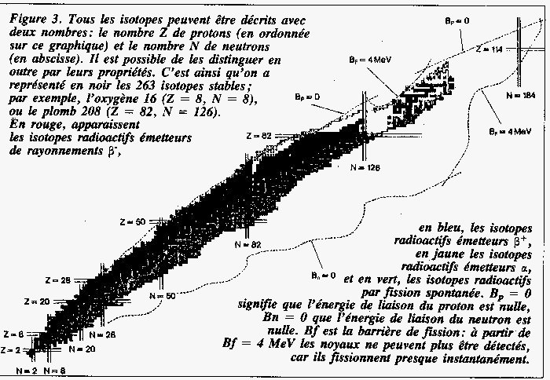<br>
            <i><font face="Arial,Helvetica"><font color="#000099"><font size="-1">FIGURE
                    VI</font></font></font></i> <br>
            <i><font face="Arial,Helvetica"><font color="#000099"><font size="-1">(extrait
de
                    l'article de M. Lefort, La Recherche, 212, p.902)</font></font></font></i></p>
        </center>
        <p><font face="Arial,Helvetica"><font color="#000099">Il est clair qu'à
              partir de la barrière de fission <i>Bf</i> = 4 MeV, les noyaux
              fissionnent quasi - instantanément (durée de vie de l'ordre de la
              nanoseconde). Conclusion : la fusion froide, déjà très peu
              probable pour Z = 109, apparaît totalement inaccessible pour les
              éléments au-delà de Z =109... Revenons donc à la fluorite en
              précisant - s'il était besoin - que les transmutations métalliques
              telles qu'elles sont exposées dans les recensions et les livres de
              vulgarisation sont <u>totalement impossibles</u> ; en revanche,
              elles peuvent constituer des allégories pour des processus de
              fusion simple (opérations classiques en métallurgie ou en géologie
              expérimentale) que nous avons évoqués dans notre section sur le <font

                size="-1"><a href="../original/imitat-prec.html">Mercure philosophique</a></font>.
              La fluorite (ou fluorine) a été découverte par Agricola en 1529
              (du latin </font><font color="#006600">fluoro</font><font color="#000099">
              = s'écouler, en allusion à sa propriété de fondant en
              métallurgie). Ses synonymes sont : <small style="color: rgb(102, 0, 0);">pseudospath,
                spath fluor, androdamant,</small></font></font> </p>
        <p><br>
        </p>
        <center>
          <p><br>
            <font face="Arial,Helvetica"><font color="#000099"><font size="-1">FIGURE
                  VII</font></font></font> <br>
            <i><font face="Arial,Helvetica"><font color="#000099"><font size="-1">(Fluorite.
Derbyshire.
                    Grande-Bretagne)</font></font></font></i></p>
        </center>
        <p><font face="Arial,Helvetica"><font color="#000099"><small style="color: rgb(102, 0, 0);">liparite,
                flusspath, bruiachite</small>. Sa date de découverte la rend
              donc compatible avec son emploi par un certain nombre d'Adeptes (</font><font

              color="#660000"><font size="-1">en particulier Philalèthe,
                Cyliani, etc. sans compter les auteurs modernes</font></font><font

              color="#000099">). Ce mot, d'androdamas, se retrouve presque à
              l'identique dans la <b><i><font size="-1">Tentation de saint
                    Antoine</font></i></b>, dans un passage où Flaubert fait
              parler Apollonios de Tyane [</font><font color="#660000"><font size="-1">cf.
                <b><i><a href="../original/atalanta-xxv.html">Atalanta, XXV</a></i></b></font></font><font

              color="#000099">].</font></font> </p>
        <p><font face="Arial,Helvetica"><font color="#660000"><font size="-1"><span

                  style="font-weight: bold;">Apollonius </span>: Veux-tu que je
                t'enseigne où pousse la plante Balis, qui ressuscite les morts ?</font></font></font>
          <br>
          <font face="Arial,Helvetica"><font color="#660000"><font size="-1"><span

                  style="font-weight: bold;">Damis </span>: Demande-lui qu'il
                te donne l'androdamas, qui attire l'argent, le fer et l'airain.</font></font></font>
        </p>
        <p><font face="Arial,Helvetica"><font color="#000099">Et le pouvoir de
              cet androdamant est d'attirer effectivement - par cabale -
              certains métaux si l'on tient compte de son pouvoir fondant, en
              les dissolvant, en les « ouvrant » au sens alchimique du terme. On
              trouve une autre relation à l'androdamas dans le <b><i><font size="-1"><a

                      href="../original/livre-crates.html">Livre
                      de Crates</a></font></i></b>, qui semble fort ancien :</font></font><font

            face="Arial,Helvetica"><font color="#000099"></font></font> </p>
        <p><font face="Arial,Helvetica"><font color="#000099">«</font><i><font color="#660000"><font

                  size="-1"> l'un l'a appelée la Magnésie ; un autre, dans son
                  livre, l a nommée le grand Electrum ; un troisième lui a
                  donné le nom du grand <u>Androdamas</u> ; un quatrième,
                  Harchqal ; un cinquième, la pierre de l eau de fer ; un
                  sixième, (la pierre) plus précieuse que l eau d or [...] </font></font></i><font

              color="#000099">» [in Berthelot, l'Alchimie au Moyen-Âge, traités
              d'alchimie arabe, p. 50, Paris, 1893]</font></font> </p>
        <p><font face="Arial,Helvetica"><font color="#000099">Nous sommes en
              droit de voir dans ces associations plus qu'une simple
              coïncidence...</font></font> <font face="Arial,Helvetica"><font color="#000099">Quoi
              qu'il en soit, on&nbsp; trouve cette fluorite en association avec
              des sulfures de plomb, de zinc ainsi que la barytine et du quartz.
              Elle est indispensable à la préparation de l'acide fluorhydrique
              qui est utilisé en céramique et ses cristaux sont utilisés pour
              fabriquer des lentilles et des prismes. Cette fluorite - semble
              t-il - était déjà connue dans l'Antiquité et était utilisée en
              Grèce et à Rome comme pierre décorative et pour la fabrication
              d'objets d'art et de vases (</font><i><font color="#660000"><font

                  size="-1">vasae murrhinae</font></font></i><font color="#000099">).
              Il existe des gisements dans tous les pays ; on peut citer une
              fluorine violette en Angleterre (Alston, Weardale), verte en
              Norvège (Kongsberg), jaune en ex RDA (Freiberg, Annaberg), rose
              dans les Alpes (St-Gothard, Chamonix). La&nbsp;<a  name="murrhe"></a></font><font

              color="#006600">murrhe</font><font color="#000099"> (</font><font

              color="#660000"><font size="-1">inconnue dans le Larousse ou le
                petit Robert...</font></font><font color="#000099">) est donc en
              latin murrha ou murra (matière minérale dont on faisait les vases
              précieux) et homonyme de murra (</font><font color="#660000"><font

                size="-1">= arbrisseau d'où provient la myrrhe</font></font><font

              color="#000099">).
              Nous avons trouvé cet extrait sur la murrhe dans une histoire de
              la chimie :</font></font> <br>
          &nbsp; </p>
        <center>
          <table cols="1" style="width: 74%;" background="fondmarbre.jpg" border="0">
            <tbody>
              <tr>
                <td><font face="Arial,Helvetica">La matière qui servait à la
                    fabrication des vases murrhins était probablement du cristal
                    opaque. Ces vases, qui présentaient beaucoup d'analogie avec
                    nos porcelaines de la chine et du Japon, ne furent connues à
                    Rome que vers la fin de la république [<i><font color="#660000"><font

                          size="-1"><span style="color: rgb(0, 0, 153);">Gaffiot
                            fait référence à M. Valerius Martialis (Martial
                            40-104) et à P. Papinius Statius (Spartien,un des
                            historiens de l'Histoire Auguste, 4e s. ap. J.-C</span>.)</font></font></i><font

                      color="#330033">]</font>. Ils étaient fort chers ; car une
                    coupe murrhine, de la capacité d'environ un litre, se
                    vendait jusqu'à 70 talents (près de 170 000 francs, vers
                    1870). Néron en acheta&nbsp; au prix de 300 talents. A cette
                    occasion, Pline se demande, en gémissant, comment un père de
                    la patrie pouvait boire dans une coupe si chère [<i><font color="#660000"><font

                          size="-1">Pline, <b>Hist. Nat</b>., XXXVII, 7</font></font></i>]
                    ; et il ajoute que Néron ne rougissait pas de recueillir
                    jusqu'aux débris de ces vases, de leur préparer un tombeau
                    et de les y placer, à la honte du siècle, avec le même
                    appareil que s'il se fût agi de rendre les derniers honneurs
                    aux cendres d'Alexandre.</font></td>
              </tr>
            </tbody>
          </table>
        </center>
        <p><font face="Arial,Helvetica"><font color="#000099">Il est donc
              pratiquement certain que les Romains avaient connaissance de la
              fluorine (</font><font color="#660000"><font size="-1">spath fluor</font></font><font

              color="#000099">) bien avant donc que le fluor ait été reconnu
              comme métal particulier par Moissan en 1886</font><font color="#000099">.
              La fluorine peut intervenir comme fondant en tant que spath fluor
              ou comme médiateur salin sous forme de fluorure d'aluminium. </font><font

              color="#000080">Il y a plus&nbsp; : sur les charbons, le spath
              fluor offre des apparences lumineuses de </font><font color="#006600">couleur
              différente</font><font color="#000080">, bleues, violettes ou
              vertes selon le </font><font color="#006600">degré de chaleur ; </font><font

              color="#000099">la variété dite chlorophane émet, sous l'
              influence de la chaleur, de belles lueurs vertes. </font><font color="#000080">Il
en
existe
              une espèce qui conserve cette propriété après avoir été chauffée
              plusieurs fois ; cependant il ne faut pas aller trop loin parce
              qu'en général le feu fait perdre cette propriété. A
              Catherinebourg, on trouve une espèce qui, frottée avec la main,
              devient phosphorescente. </font><font color="#000099">Le spath
              fluor se trouve dans la nature cristallisé en cubes. Précipité
              d'une dissolution, il est en gelée presque transparente, insoluble
              dans l'eau que l'on peut filtrer uniquement en y ajoutant de
              l'ammoniaque. A la température de 600°C, il ne se fond ni ne se
              ramollit mais il se contracte beaucoup. A une chaleur plus élevée,
              il se fond assez facilement en un liquide transparent qui
              cristallise en se solidifiant. Chauffé à Sèvres dans un creuset
              brasqué, il a donné une masse compacte, sans bulle et à texture
              cristalline. L'acide chlorhydrique bouillant en dissout une
              certaine quantité ; l'acide sulfurique hydreux concentré le change
              en une pâte visqueuse à une chaleur inférieure à 400°C. Au contact
              de la silice ou des silicates, l'acide sulfurique en dégage du
              fluorure de silicium qui est gazeux. Les carbonates alcalins,
              employés en excès, le décomposent par voie sèche et par voie
              humide.</font></font> <br>
          <font face="Arial,Helvetica"><font color="#000099">Le spath fluor est
              un excellent fondant pour un certain nombre de substances.
              Lorsqu'il y a présence de silice, il donne lieu à une
              volatilisation conséquente. Il peut donc intervenir en tant que
              fondant ou en tant qu'agent minéralisateur. Des expériences
              conduites par P. Berthier, on peut conclure que le spath fluor
              agit comme fondant de deux manières : d'une part, en se combinant
              avec les </font><font color="#006600">silicates</font><font color="#000099">
              dont il peut déterminer la fusion et d'autre part en formant du </font><font

              color="#006600">gaz fluosilicique</font><font color="#000099"> en
              se décomposant lui-même, et par là il peut soustraire de la silice
              et introduire de la chaux dans le composé, toutes circonstances
              qui concourent à produire des combinaisons fusibles. Voici un
              extrait du C<i>ours de minéralogie</i> de A. de Lapparent au sujet
              de la fluorine :</font></font> <br>
          &nbsp; </p>
        <center>
          <table cols="1" style="width: 71%;" background="fondmarbre.jpg" border="0">
            <tbody>
              <tr>
                <td><font face="Arial,Helvetica">La fluorine forme aussi des
                    variétés concrétionnées, composées de couches
                    alternativement blanches et violettes ou vertes, à contours
                    dentelés. Blanche, jaune, verte, violette, bleue, bleu de
                    ciel, rose. éclat vitreux, un peu gras. Fluorescente. Les
                    couleurs, souvent disposées dans un même échantillon par
                    zones, paraissent dues à des carbures d'hydrogène. Indice :
                    I, 434. <font color="#006600">Anomalies optiques</font>. La
                    variété dite <font color="#000099">chlorophane </font>émet,
                    sous l' influence de la chaleur, de belles<font color="#000099">
                      lueurs vertes</font>. Décrépite dans le tube ; fond sur le
                    charbon en émail et colore la flamme en jaune rougeâtre.
                    Avec le carbonate de soude, donne une perle transparente à
                    chaud, opaque à froid. Attaquable par l' acide sulfurique,
                    avec dégagement d'acide fluorhydrique. Soluble dans l'acide
                    chlorhydrique. Son gisement habituel est dans les filons
                    métallifères. Mais on trouve aussi, au Morvan, de beaux
                    filons de fluorine concrétionnée. Le spathfluor , comme on
                    l' appelle, est utilisé comme <font color="#006600">fondant</font>
                    en métallurgie.</font></td>
              </tr>
            </tbody>
          </table>
        </center>
        <p><font face="Arial,Helvetica"><font color="#000099">&nbsp;D'autres
              commentaires utiles nous sont fournis par Pline </font>(<i><font

                color="#660000"><font size="-1">Livre XXXVII, 7 et Livre XXXIII,
                  5</font></font></i><font color="#000099">).
              Voici ces passages</font></font> </p>
        <blockquote>
          <table cols="1" style="text-align: left; margin-left: auto; margin-right: auto; width: 529px; height: 451px;"

            background="fondmarbre.jpg" border="0">
            <tbody>
              <tr>
                <td style="width: 666px;">
                  <center><i><font face="Arial,Helvetica">Livre XXXIII, 3</font></i></center>
                  <div style="text-align: left;"><font face="Arial,Helvetica">...De
la
                      terre aussi nous avons extrait les vases murrhins et les
                      vases de cristal, qui devaient tirer leur valeur de leur
                      fragilité même....</font> <br>
                  </div>
                  <p><br>
                  </p>
                  <div style="text-align: center;"><i><font face="Arial,Helvetica">Livre
                        XXXVII, 7</font></i></div>
                  <center></center>
                  <p style="text-align: left;"><font face="Arial,Helvetica">...La
même
                      victoire importa pour la première fois à Rome les vases
                      murrhins, et, le premier, Pompée [<i><font color="#000099"><font

                            size="-1">en 61</font></font></i>] consacra des
                      patères et des coupes murrhines à Jupiter Capitolin, à la
                      suite de ce triomphe ; cette vaisselle devint tout de
                      suite d'un usage profane, et l'on rechercha même des
                      crédences et des plats de cette matière...Les murrhins
                      sont importés d'Orient. On les trouve là en plusieurs
                      localités qui n'ont rien de remarquable, particulièrement
                      dans l'empire des Parthes ; toutefois les plus beaux sont
                      en Carmanie. On pense que c'est une substance liquide qui
                      se solidifie sous terre par l'action de la chaleur. Leur
                      taille ne dépasse jamais celle de petites crédences ; leur
                      épaisseur atteint rarement celle des vases à boire dont il
                      a été question. Leur éclat manque de vivacité et ils sont
                      luisants plutôt qu'éclatants ; mais ce qui fait leur prix,
                      <font color="#990000">c'est
                        la variété </font><font color="#993366">des </font><font

                        color="#000099">couleurs due aux fréquentes virevoltes
                        de leurs veines qui passe au rouge pourpre ou au blanc,
                        ou à une troisième nuance intermédiaire, lorsque, par
                        une sorte de transition chromatique, le rouge pourpre
                        flamboie ou que le blanc laiteux rougeoie</font><font color="#990000">.</font>
                      Il y a des gens qui prisent surtout leurs bords et
                      certaines nuances réfléchies, comme on en voit au bas de
                      l'arc-en-ciel. D'autres aiment des veines opaques (pour
                      eux ce qui est transparent ou pâle est un défaut), ainsi
                      que les grains et les verrues qui ne font pas saillie,
                      mais qui sont le plus souvent sessiles comme il arrive
                      aussi sur le corps humain. L'odeur de cette substance lui
                      donne aussi de la valeur.</font></p>
                </td>
              </tr>
            </tbody>
          </table>
          <div style="text-align: center;"></div>
          <center><i><font face="Arial,Helvetica"><font size="-1">Adapté d'après
                  l'Histoire Naturelle de Pline l'Ancien</font></font></i></center>
        </blockquote>
      </blockquote>
    </blockquote>
    <blockquote>
      <blockquote><font face="Arial,Helvetica"><font color="#000099">L'expression
            <i><font size="-1">vasa murrina</font></i> désignait une catégorie
            de vase de grand luxe. [<small style="color: rgb(0, 102, 0);"><span

                style="font-weight: bold;">voyez là-desus notre <a href="../original/idee-alchimique-6.html">Idée
                  alchimique, VI </a>où le sujet est traité de façon extensive</span></small>]
            La matière première s'appelle murra ; mais Pline emploie parfois le
            mot murrina pour le désigner et il semble qu'il n'ait jamais vu
            cette matière à l'état brut. Les modernes ont émis diverses
            hypothèses sur la nature de ce matériau ; d'abord, la porcelaine a
            été évoquée mais paraît peu plausible ; ensuite, on a évoqué de
            l'agate (</font><font color="#660000"><font size="-1">elle se
              présente en géodes qui ont une forme concave, ce qui facilite leur
              élaboration, et de nombreux fragments d'agate ont été trouvés en
              Italie</font></font><font color="#000099">) ; enfin, la meilleure
            solution consiste à voir dans la </font><font color="#006600">murra
            le spath-fluor</font><font color="#000099"> ou fluorine. Cette
            identification a été accréditée par A.I. Loewenthal et D.B. Harden (</font><font

            color="#660000"><font size="-1">Vasa murrina, <i>JRS XXXIX,</i>
              1949, 31-37</font></font><font color="#000099">).
            Le mot murra viendrait de la myrrhe qui jouait un rôle dans la
            fabrication des vases. Le matériau étant cristallin et cassant, on
            l'imprégnait de la </font><font color="#006600">résine</font><font

            color="#000099"> avant de le travailler, pour lui donner la cohésion
            nécessaire. Comme l'alcool est un solvant des résines, le vin qu'on
            buvait dans les vases murrhins prenait un goût de myrrhe. En fait,
            il semble que cette étymologie soit douteuse : murra remonte sans
            doute à un mot iranien et la patrie des vases murrhins se situe dans
            le royaume parthe, surtout en </font><font color="#006600">Carmanie</font><font

            color="#000099">. La Carmanie (</font><font color="#660000"><font size="-1">aujourd'hui
              Kirman</font></font><font color="#000099">) était située entre l'</font><font

            color="#006600">Ariane</font><font color="#000099"> au nord, le
            golfe persique et la mer Erythrée au sud, la Perse à l'Ouest, et la
            Gadrosie à l'est. Quoi qu'il en soit, il reste très probable que la
            murra était du spath-fluor. L'action de la chaleur décrite par Pline
            est une allusion à une théorie de la formation des pierres par
            l'action des exhalaisons de la terre, chaudes ou froides (cf. alun).
            Il semble que cette théorie se rattache aux enseignements d'Aristote
            (</font><i><font color="#660000"><font size="-1"><b>Meteor</b>.,
                III, </font></font></i><font color="#660000"><font size="-1">fin</font></font><font

            color="#000099">), de Théophraste (</font><i><font color="#660000"><font

                size="-1"><b>Lap</b>.</font></font></i><font color="#660000"><font

              size="-1">, 3</font></font><font color="#000099">) et de
            Posidonius (</font><font color="#660000"><font size="-1">déjà évoqué
              dans nos études astrologiques</font></font><font color="#000099">).
Cette
            allusion aux couleurs changeantes du spath-fluor de même que les
            variations de couleur qui accompagnent l'élévation de température
            trouvent - nous semble t-il - leur équivalence hermétique dans la
            figure symbolique du caméléon. Cet animal est en effet évoqué par
            Fulcanelli (</font><font color="#660000"><font size="-1"><b><i>DM,
                  I,</i></b> p.249</font></font><font color="#000099">) :</font></font>
        <p><font color="#990033"><i><font face="Arial,Helvetica"><font size="-1">"C'est
aussi
                  le fameux vitriol vert, oleum vitri, que Pantheus décrit comme
                  étant la chrysocolle, d'autres le borax ou atincar ; le
                  vitriol romain, parce que </font></font></i><font face="Symbol"><font

                size="+1">Rwmh</font></font><i><font face="Arial,Helvetica"><font

                  class="symbol" font="symbol" size="-1">, nom grec de la Ville
                  éternelle, signifie force, vigueur, puissance, domination ; le
                  minéral de Pierre-Jean Fabre, parce qu'en lui, dit-il, l'or y
                  vit (vitryol). On le surnomme également&nbsp;<a  name="Protée"></a><a

                    href="../original/soufre.html#Prot%C3%A9e">Protée</a>, à cause de ses
                  métamorphoses, pendant le travail, et aussi Caméléon </font></font></i><font

              face="Arial,Helvetica"><font class="symbol" font="symbol" size="-1">(<big><big><span

                      style="font-family: symbol;">kamalewn</span></big></big>,
              </font></font><i><font face="Arial,Helvetica"><font class="symbol"

                  font="symbol" size="-1">c'est-à-dire lion rampant), parce
                  qu'il revêt successivement toutes les couleurs du spectre."</font></font></i></font>
        </p>
        <p><font face="Arial,Helvetica"><font color="#000099">Par l'une de ces
              phrases sibyllines dont Fulcanelli a le secret, en six lignes se
              déploie un véritable arsenal chimique où le néophyte aura bien du
              mal à choisir ; tâchons de l'aider. Nous remarquons d'abord la
              couleur vert du vitriol, que peut prendre la fluorine ; ensuite,
              sont cités le&nbsp;<a  name="borax"></a></font><font color="#006600">borax</font><font

              color="#000099"> et la&nbsp;<a  name="chrysocolle"></a></font><font

              color="#006600">chrysocolle</font><font color="#000099">. Les
              Anciens connaissaient-ils le borax ? nous avons examiné ce point
              de science dans l'un de nos commentaires de Philalèthe (</font><b><i><font

                  color="#660000"><font size="-1"><a href="../original/philalethe-7.html#chrysoc">Introïtus</a>,
                    VII</font></font></i></b><font color="#000099">). L'allusion
              au caméléon présente le double intérêt, d'abord de se rapporter
              aux couleurs différentes que peut prendre le spath-fluor pendant
              le « travail », c'est-à-dire le chauffage, ensuite aux couleurs de
              base qui rappellent celles de l'arc-en-ciel, sur lesquelles
              insistent un certain nombre de textes (</font><font color="#660000"><font

                size="-1"><b><i>Le Théâtre de l'Astronomie terrestre</i></b>,
                par exemple</font></font><font color="#000099">), enfin par la
              référence au lion rampant qui est un pont jeté vers l'</font><font

              color="#006600"><font size="-1"><a href="../original/heraldique.html">Héraldique</a></font></font><font

              color="#000099">.</font></font> <font face="Arial,Helvetica"><font

              color="#000099">Mais la fluorine ne nous a pas livré tous ses
              secrets et l'histoire de la découverte du fluor jette d'étranges
              lueurs sur les expériences que pouvaient, en leur temps, réaliser
              les vieux alchimistes. Qu'on en juge :<br>
            </font></font></p>
        <table style="width: 80%; height: 30px; text-align: left; margin-left: auto; margin-right: auto;"

          background="fondmarbre.jpg" border="0" cellpadding="2" cellspacing="2">
          <tbody>
            <tr>
              <td style="vertical-align: top;">Margraff, en 1764, chercha à
                déterminer la composition du minéral appelé spath-fluor, en
                distillant, dans une cornue, un mélange de spath-fluor réduit en
                poudre avec son propre poids d'acide sulfurique; il obtint une
                substance saline blanche sublimée, et il remarqua avec surprise
                que la cornue était corrodée et percée eu plusieurs endroits,
                comme si on y avait tiré avec de la dragée. En 1771, Scheele, en
                reprenant l'étude du spath-fluor, découvrit l'acide
                fluorhydrique ; il lui donna le nom d'acide fluorique.<br>
                <br>
                «<small style="color: rgb(0, 0, 153);"><span style="font-style: italic;">
                    Je mêlai, dit Scheele, deux onces de spath-fluor pulvérisé
                    dans un mortier de verre et autant d'acide vitriolique
                    concentré ; je mis le tout dans une cornue ;</span><span style="font-style: italic;">
                    j'y adaptai un récipient, dont je lutai les jointures avec
                    du papier gris ;je pla</span><span style="font-style: italic;">çai
                    la cornue sur un feu doux ; le mélange ne tarda pas à
                    bouillonner et à s'éle</span><span style="font-style: italic;">ver
                    en écume ; une vapeur élastique, opaque, passait de tous
                    côtés à travers le </span><span style="font-style: italic;">lut
                    ; sur la fin de l'opération il s'éleva une vapeur blanche
                    qui couvrit toute la </span><span style="font-style: italic;">surface
                    intérieure du récipient. Le lut avait été attaqué de manière
                    qu'il se lais</span><span style="font-style: italic;">sait
                    broyer sous les doigte, mais sa couleur n'était pas changée.
                    La masse qui </span><span style="font-style: italic;">était
                    restée dans le fond de la cornue était pierreuse, et on ne
                    put la retirer </span><span style="font-style: italic;">qu'en
                    broyant le vaisseau. Je recommençai cette opération
                    absolument comme la première fois, excepté que je mis de
                    l'eau distillée dans le récipient. Lorsque le mélange sentit
                    la chaleur et commença à bouillonner, il se dégagea une
                    vapeur qui se déposa à la surface de l'eau du récipient, et
                    y forma d'abord une tache blanche au-dessous du bec de la
                    cornue. Cette tache s'élargit successivement jusqu'à former
                    une croûte assez épaisse qui empêchait les vapeurs d'arriver
                    à la surface de l'eau ; de sorte qu'il fallait agiter le
                    récipient pour briser la croûte et la faire tomber au fond;
                    après celle-ci il se forma une nouvelle croûte semblable:
                    enfin, le récipient d'abord, et ensuite la cornue devinrent
                    blancs intérieurement. Lorsqu'il parut qu'il ne s'élevait
                    plus rien à un feu doux, on déluta les vaisseaux ; leur
                    surface intérieure était sensiblement attaquée. La liqueur
                    qui se trouva dans le récipient, était un mélange d'eau et
                    de l'acide qui avait été dégagé du spath-</span><span style="font-style: italic;">fluor
par
                    l'acide vitriolique. On sépara par le filtre la matière
                    blanche abondante qui s'y était mêlée pendant l'opération </span></small>».<br>
                <br>
                Scheele conclut de ses expériences que le spath-fluor est
                principalement composé de terre calcaire saturée d'un acide
                particulier. La croûte blanche, que Scheele obtenait dans les
                opérations ci-dessus, était de la silice gélatineuse; ce fait
                provenait de ce que le gaz qui se dégageait était en grande
                partie formé de fluorure de silicium résultant de l'attaque du
                verre de la cornue par l'acide fluorhydrique, lequel se
                décomposait au contact de l'eau. Scheele étudia ensuite les
                principales propriétés de cet acide, et montra qu'il différait
                de tous ceux alors connus. Wieglel, Bucholz, Meyer firent
                remarquer que l'acide fluorique de Scheele contenait de la
                silice comme partie constituante. Wenzel, en 1783, constata que
                si on emploie des vases métalliques, il ne se produit plus de
                dépôt de silice lorsqu'on fait arriver le gaz dans l'eau. John
                Davy détermina la proportion d'acide fluorique et de silice
                contenus dans l'acide de Scheele, et montra que c'est un composé
                particulier d'acide fluorique et de silice, dans lequel les
                parties constituantes existent toujours dans les mêmes
                proportions. Boulanger [<small style="color: rgb(0, 102, 0);"><span

                    style="font-weight: bold;">cité par Lavoisier, cf. <a href="../original/humide-radical.html">humide
                      radical métallique</a></span></small>], en 1773,
                contrairement à Scheele qui considérait l'acide fluorique comme
                un acide nouveau d'un genre particulier, soutint que cet acide
                n'était autre chose que de l'acide muriatique intimement uni à
                quelque substance terreuse ; cette opinion était fondée
                principalement sur ce que l'acide fluorique précipitait l'argent
                et le mercure de leurs dissolutions. Scheele lui répondit (1780)
                que cette précipitation, toujours très peu considérable, n'était
                due qu'à une petite quantité d'acide muriatique qui s'y trouve
                accidentellement, parce que le spath fluor, ainsi que les autres
                minéraux formés de chaux, contient ordinairement un peu de sel
                commun. Priestley obtint ensuite l'acide fluorhydrique à l'état
                gazeux.<br>
                <br>
                « <small style="color: rgb(0, 0, 153);"><span style="font-style: italic;">Les
                    savants, dit-il, ont accueilli avec la plus grande
                    satisfaction la découverte d'un prétendu nouvel acide
                    minéral, contenu dans une substance que les </span><span style="font-style: italic;">chimistes
                    distinguent par le nom de fluor. On dégage l'acide de ce
                    fluor ou </span><span style="font-style: italic;">spath par
                    l'intermède de l'huile de vitriol, et il a des propriétés
                    particulières </span><span style="font-style: italic;">aussi
                    remarquables qu'aucun de trois autres acides minéraux qu'on
                    connais</span><span style="font-style: italic;">sait
                    auparavant. C'est un Suédois, nommé M. Scheele, qui a fait
                    cette curieuse découverte ; de là vient qu'on distingue
                    souvent cet acide des autres par le nom d'acide suédois; sa
                    méthode d'opérer sur cette substance, comme aussi celle de
                    tous les autres chimistes qui lui ont succédé dans cette
                    recherche, était de la distiller dans des vaisseaux de
                    terre, comme dans le procédé pour tirer l'esprit de nitre du
                    salpêtre ; et voici les faite les plus remarquables qu'on
                    avait observés à ce sujet : 1° Les vaisseaux dans lesquels
                    on fait cette distillation sont exposés à </span><span style="font-style: italic;">être
                    corrodés, de manière qu'il s'y fait des trous qui les
                    traversent de part en </span><span style="font-style: italic;">part
                    ; 2° lorsqu'il y a de l'eau dans le récipient, sa surface se
                    couvre d'une </span><span style="font-style: italic;">croûte
                    pierreuse et friable......Aussitôt que j'eus présenté un des
                    acides sous la forme d'air, je n'eus aucun doute que tous
                    les autres ne pussent être réduits aussi sous cette forme,
                    et celui-ci comme les autres. Mais je m'imaginais qu'il me
                    serait difficile de me procurer le fossile qui le contient,
                    parce que je supposais qu'on ne l'avait trouvé qu'en Suède;
                    et je serais probablement resté dans l'impuissance de faire
                    les expériences suivantes, si je n'eusse été désabusé par M,
                    Woulfe, qui, sur les questions que je lui fis à ce sujet,
                    non seulement m'expliqua ce que c'était que cette substance,
                    mais m'en donna tout de suite de plusieurs sortes en
                    suffisante quantité pour mon objet. Je fis mes premières
                    expériences sur ce qu'il appelle spath phosphorique blanc de
                    Saxe ; mais je me servis ensuite du spath de Berbyshire; et
                    les morceaux que j'employais étaient en partie blancs ou
                    jaunâtres, et en partie couleur de pourpre. Tout l'avantage
                    que j'ai eu dans cette recherche, je l'ai retiré de ma
                    méthode particulière de conduire tes expériences. Car en
                    réduisant l'acide sous la forme d'air, exempt de toute
                    humidité, j'avais le moyen d'examiner, avec la plus grande
                    facilite et la plus grande certitude, sa nature et ses
                    affinités.... Lorsque je commençai ces expériences, je
                    suivis la méthode de ceux qui m'avaient précédé dans cette
                    carrière, et qui s'étaient procuré l'acide par la voie
                    ordinaire de la distillation, en versant l'huile de vitriol
                    sur le spath qu'ils avaient eu soin de pulvériser. (J'ai
                    trouvé ensuite que cette dernière circonstance n'est pas
                    nécessaire.) J'exécutai ce procédé dans une fiole à laquelle
                    était adapté un bouchon de cristal tubulé, et je trouvai
                    tout de suite que, sans qu'il fût besoin de chaleur au
                    commencement, et ensuite avec très peu de chaleur, l'air
                    était produit en grande abondance parfaitement transparent,
                    et renfermé par le mercure, comme les autres airs acides.
                    Lorsque je laissais sortir du tube la vapeur dans l'air
                    libre, elle formait, un nuage blanc permanent, en attirant
                    sans doute l'humidité de l'atmosphère, et elle avait une
                    odeur extrêmement piquante. Je n'eus pas plutôt obtenu cette
                    nouvelle espèce d'air, que je fus empressé de voir l'effet
                    qu'il ferait sur l'eau, et d'observer la croûte pierreuse
                    qui devait se former par leur union, ainsi que l'avait
                    décrit M. Scheele. Je ne fus pas trompé dans mon attente. Au
                    moment où l'eau vint en contact avec cet air, sa surface fut
                    blanchie et rendue opaque par une pellicule pierreuse, qui
                    formant une séparation entra l'air et l'eau, retardait
                    considérablement l'ascension de l'eau, jusqu'à ce que l'eau
                    s'insinuant à travers les pores et les crevasses de cette
                    croûte, l'eau s'élevait nécessairement à mesure que l'air
                    diminuait, et rompant la croûte présentait une nouvelle
                    surface d'eau qui, comme la première, se couvrait à
                    l'instant d'une nouvelle croûte. Ainsi se formaient les
                    incrustations pierreuses l'une après l'autre, jusqu'à ce que
                    toutes les particules d'air fussent unies à l'eau. Ces
                    différentes pellicules ramassées et séchées se réduisaient
                    en une poudre blanche communément un peu acide au goût, mais
                    qui lavée dans beaucoup d'eau pure était parfaitement
                    insipide.</span></small> »<br>
                <br>
                Pour Priestley, le gaz nouveau qu'il venait d'obtenir n'était <br>
                <br>
                « <small style="color: rgb(0, 0, 153);"><span style="font-style: italic;">autre
                    cbose </span><span style="font-style: italic;">que l'acide
                    vitriolique, chargé : 1° d'autant de phlogistique qu'il lui
                    en faut </span><span style="font-style: italic;">pour
                    prendre la forme d'air ; 2° d'une grande quantité de la
                    matière terreuse du </span><span style="font-style: italic;">spath.</span></small>
                »<br>
                <br>
                II explique les phénomènes rapportés ci-dessus en supposant : <br>
                <br>
                «<small style="color: rgb(0, 0, 153);"><span style="font-style: italic;">
                    1° que l'acide </span><span style="font-style: italic;">vitriolique
                    qu'on verse sur le spath est volatilisé en partie par le
                    moyen du </span><br style="font-style: italic;">
                  <span style="font-style: italic;">phlogistique qui se trouve
                    dans cette substance, et forme de cette manière un </span><span

                    style="font-style: italic;">air acide vitriolique ; 2° qu'il
                    y a aussi combinaison de cet air avec une portion </span><span

                    style="font-style: italic;">de la partie solide terreuse du
                    spath, laquelle demeure dans un état de dissolu</span><span

                    style="font-style: italic;">tion, jusqu'à ce qu'on y ajoute
                    de l'eau, qui s'unissant avec l'acide précipite la </span><span

                    style="font-style: italic;">terre qu'il tenait en
                    dissolution.</span></small> »<br>
                <br>
                Pour Lavoisier, l'acide fluorique ne pouvait être qu'une
                combinaison de <br>
                l'oxygène avec un radical inconnu, et il considérait le spath
                fluor comme un <br>
                fluate de chaux.<br>
                <br>
                &nbsp;« <small style="color: rgb(0, 0, 153);"><span style="font-style: italic;">La
                    nature nous offre, dit-il, l'acide fluorique tout formé dans
                  </span><span style="font-style: italic;">le spath phosphorique
                    ou fluate de chaux, il y est combiné avec la terre cal</span><span

                    style="font-style: italic;">caire, et forme un sel
                    insoluble....... il ne reste plus aujourd'hui qu'à déter</span><span

                    style="font-style: italic;">miner quelle est la nature du
                    radical fluorique; mais comme il ne paraît pas </span><span

                    style="font-style: italic;">qu'on soit encore parvenu à
                    décomposer l'acide, on ne peut avoir aucun aperçu </span><span

                    style="font-style: italic;">du radical »</span></small> </td>
            </tr>
          </tbody>
        </table>
        <div style="text-align: center;"><font face="Arial,Helvetica"><font color="#000099">extrait
              de Raoul Jagnaux, <small><span style="font-style: italic; font-weight: bold;">Histoire
                  de la Chimie<br>
                  <br>
                </span></small></font></font>
          <div style="text-align: left;"><span style="font-family: helvetica,arial,sans-serif; color: rgb(0, 0, 153);">Ces
extraits
              montrent deux choses des plus intéressantes :<br>
              <br>
              - la formation d'une terre blanche singulière qui s'incruste sur
              le verre : il s'agit de la <a  name="silice_gélatineuse"></a><small><span

                  style="font-weight: bold;">silice gélatineuse</span></small>.
              De nombreux textes, et d'ailleurs de nombreuses gravures en
              couleur, montrent qu'à une époque de la coction, le verre est de
              couleur blanche.<br>
              - le composé - entendez l'acide fluorique ou acide fluorhydrique -
              attaque le verre. Ce point a été noté par plusieurs alchimistes.
              La question qui se pose est évidemment de savoir si, au plan
              historique, les anciens alchimistes ont pu manipuler de la
              fluorine... Il semble que l'on puisse répondre par l'affirmative
              eu égard à ce que nous avons dit des vases murrhins.<br>
            </span></div>
        </div>
        <p><br>
        </p>
        <blockquote><a  name="beta-"></a><font color="#000099"><font face="Symbol"><font

                size="+1">b</font></font><font face="Arial,Helvetica">)- l<u>'<a

                   name="alumine_0"></a>alumine</u></font></font></blockquote>
        <font face="Arial,Helvetica"><font color="#000099">Il s'agit
            véritablement d'une rouille blanche, à l'instar de la rouille du fer
            à laquelle nous sommes plus habitués. C'est donc de l'oxyde
            d'alumine. Le corindon hyalin est de l'alumine pure aussi bien - les
            lecteurs le savent certainement - que certaines gemmes orientales
            comme le rubis et le saphir à cela près que ces dernières renferment
            des traces d'oxydes métalliques auxquelles elles doivent leur
            couleur qui est </font><font color="#006600">la
            raison du pouvoir de fascination qu'elles exercent sur l'esprit</font><font

            color="#000099">. Le corindon constitue donc un écrin vide : c'est
            proprement la coquille, la résine de l'or, la semence métallique des
            auteurs anciens. L'émeri n'est autre chose que du corindon opaque -
            faut-il rappeler que « bouché à l'émeri » et « fermé hermétiquement
            » sont deux expressions synonymes ? On trouve - à côté de l'alumine
            anhydre qui est donc le corindon, de l'alumine hydratée naturelle :
            le </font><font color="#006600">gibsite</font><font color="#000099">,
            le </font><font color="#006600">diaspore</font><font color="#000099">
            et </font><font color="#006600">l'hydrargilithe</font><font color="#000099">
            - le lecteur aura noté que quelque part dans les <b><i><font size="-1">DM</font></i></b>,
            Fulcanelli parle de l'oxyde rouge d'hydrargyre qui est le nom ancien
            de l'oxyde mercurique... il y a là une indication de même que d</font><font

            color="#000080">ans le passage suivant (</font><font color="#660000"><font

              size="-1"><b><i>DM, I</i></b>, p. 441</font></font><font color="#000080">)
            où il écrit que :</font></font> <br>
        <br>
        &nbsp;<font face="Arial,Helvetica"><font color="#990033"><font size="-1">"<i>La
matière
                a subi une première préparation, le vulgaire vif-argent s'est
                mué en hydrargyre philosophique... La route suivie est sciemment
                tenue secrète.</i>"</font></font></font> <br>
        <br>
        &nbsp;<font face="Arial,Helvetica"><font color="#000080">Quoiqu'il en
            soit, les chimistes préparent l'alumine en précipitant une
            dissolution d'alun [</font><font color="#660000"><font size="-1">dont
je
              rappelle qu'il s'agit d'un sulfate double d'alumine et de potasse</font></font><font

            color="#000080">] par un excès de carbonate d'ammoniaque. Il se
            forme un dépôt gélatineux qui doit être lavé à l'eau bouillante puis
            desséché et calciné. Ainsi préparée, l'alumine est anhydre et sa
            composition est représentée par la formule Al<sub>2</sub>O<sub>3</sub>.
            L'alumine artificielle est amorphe mais lorsque cet oxyde se dépose
            d'une dissolution ammoniacale abandonnée à elle-même pendant
            longtemps dans un flacon fermé, il prend la forme de petits cristaux
            microscopiques. La solubilité de l'alumine dans l'ammoniaque est
            très faible et à l'opposé, elle est très grande dans les
            dissolutions de potasse et de soude ; c'est la raison pour laquelle
            on ne sert jamais de ces derniers agents pour séparer l'alumine de
            ses combinaisons. Voyons à présent comment peut se former le
            corindon dans la nature ; pour cela, nous ferons encore appel au
            cours de chimie de Gay-Lussac.</font></font> <br>
        &nbsp;
        <center>
          <table cols="1" style="width: 74%;" background="fondmarbre.jpg" border="0">
            <tbody>
              <tr>
                <td>
                  <center><i><font face="Arial,Helvetica"><font color="#660000"><font

                            size="+1">Formation naturelle du corindon</font></font></font></i></center>
                  <p><font face="Arial,Helvetica">Cette substance doit être
                      considérée comme un produit <font color="#000099">volcanique</font>
                      : le potassium peut, dans les éruptions des volcans,
                      décomposer des chlorures d'aluminium dont on comprend
                      facilement la formation par la présence de chlore et de
                      l'alumine ; enfin l'aluminium étant formé, on comprend sa
                      combustion dans l"oxygène : voilà pourquoi le corindon est
                      une matière si dure et qui a éprouvé la fusion. Le
                      corindon se trouve toujours dans les produits des volcans
                      qui fument encore ou des volcans éteints.</font></p>
                </td>
              </tr>
            </tbody>
          </table>
        </center>
        <center><i><font face="Arial,Helvetica"><font color="#000099"><font size="-1">adapté
du
                  Cours de chimie de Gay-Lussac (1828)</font></font></font></i></center>
        <p><font face="Arial,Helvetica"><font color="#000099">Il nous reste à
              présent à parler de la synthèse du </font><font color="#006600">carbonate
              d'ammoniaque</font><font color="#000099"> par lequel </font><font

              color="#006600">on précipite l'alumine</font><font color="#000099">
              de l'alun. Il existe - au XIX<sup>e</sup> siècle - trois sources
              principales de carbonate d'ammoniaque :</font></font><font face="Arial,Helvetica"><font

              color="#000099"></font></font> </p>
        <center>
          <p><font face="Arial,Helvetica"><font color="#660000">- la
                distillation des matières animales ;</font></font> <br>
            <font face="Arial,Helvetica"><font color="#660000">- les urines
                provenant des vidanges ;</font></font> <br>
            <font face="Arial,Helvetica"><font color="#660000">- les eaux de
                condensation des usines à gaz.</font></font></p>
        </center>
        <p><font face="Arial,Helvetica"><font color="#000099">La solution
              aqueuse de ce sel sert à précipiter la plupart des métaux et les
              terres alcalines (dont l'alumine). On préfère ce sel aux
              carbonates de soude et de potasse parce qu'on peut toujours se
              débarrasser des sels ammoniacaux par la calcination.</font></font>
          <br>
          <font face="Arial,Helvetica"><font color="#000099">Quel est donc le
              rapport entre notre médiateur salin (le spath fluor) et l'alumine
              ? L'expérience suivante conduite par Frémy et Verneuil (<a href="../original/imitat-prec.html#min%C3%A9ralog">1</a>)
              répondra à cette question.</font></font> <br>
          &nbsp; </p>
        <center>
          <table cols="1" style="width: 81%;" background="fondmarbre.jpg" border="0">
            <tbody>
              <tr>
                <td>
                  <center><i><font face="Arial,Helvetica"><font color="#660000"><font

                            size="+1">Formation artificielle du&nbsp;<a  name="rubis_1"></a>rubis
                            à partir de spath fluor et d'alumine</font></font></font></i></center>
                  <p><font face="Arial,Helvetica"><font color="#000099">Ces
                        savants ont obtenu la reproduction du rubis par l'emploi
                        de vapeurs fluorées. Pour l'obtenir, ils ont mis un peu
                        de </font><font color="#006600">fluorure
                        de calcium</font><font color="#000099"> (spath fluor)
                        dans un petit creuset de platine recouvert d'une lame de
                        même métal percée de trous imperceptibles, et placé
                        lui-même au fond d'un grand creuset de terre ; au-dessus
                        du creuset de platine, ils ont disposé une couche
                        épaisse d'</font><font color="#006600">alumine amorphe</font><font

                        color="#000099"> mêlée de traces d'acide chromique ou de
                        bichromate de potasse (alun de chrome). Le creuset, bien
                        luté, est chauffé au rouge blanc. Le fluorure de calcium
                        donne lieu à la production de </font><font color="#006600">vapeurs
                        fluorées</font><font color="#000099"> grâce auxquelles
                        une partie de l'</font><font color="#006600">alumine
                        cristallise</font><font color="#000099"> et les cristaux
                        se forment </font><font color="#006600">au milieu</font><font

                        color="#000099"> d'une gangue blanche et poreuse dont il
                        est facile de les séparer ; il suffit pour cela de jeter
                        le produit dans un vase plein d'eau et d'agiter
                        vivement, la gangue légère reste en suspension, les
                        rubis plus lourds tombent au fond du vase. La
                        température et la durée de la calcination exercent une
                        grande influence sur la quantité et sur la grosseur des
                        cristaux. En chauffant des creusets de plusieurs litres
                        dans un four à gaz, en les maintenant pendant une
                        semaine à la température de 1300°C, Frémy et Verneuil
                        ont obtenu, à chaque opération, plus de 3 kg de rubis.</font></font></p>
                </td>
              </tr>
            </tbody>
          </table>
        </center>
        <p><font face="Arial,Helvetica"><font color="#000099">Cette expérience
              est fondamentale ; elle présente de grandes analogies avec ce que
              nous disent les textes de Fulcanelli. D'abord, la température
              maximale correspond à peu près à celle que l'on relève</font><font

              color="#000080"> dans<i> <b><font size="-1">Myst</font></b>.</i>,
              p.162 :</font></font><font face="Arial,Helvetica"><font color="#990033"><font

                size="-1"></font></font></font> </p>
        <p><font face="Arial,Helvetica"><font color="#990033"><font size="-1">"<i>Au
quatrième
                  degré de feu, en opérant par voie sèche, il devient nécessaire
                  d'entretenir une température voisine de 1200°C, indispensable
                  aussi dans la projection."</i></font></font></font><i><font face="Arial,Helvetica"><font

                color="#990033"><font size="-1"></font></font></font></i> </p>
        <p><font face="Arial,Helvetica"><font color="#000080">Ensuite, nous
              observons la combinaison d'un composé volatil (vapeurs fluorées)
              et d'un composé fixe (alumine amorphe) ; les cristaux d'alumine se
              forment au milieu de la masse évoquant fortement le « vase de
              nature » tant cité par les alchimistes et « l'Oeuf philosophal ».
              La façon dont le feu est conduit rappelle aussi des régimes de
              température (</font><font color="#660000"><font size="-1">par
                exemple ceux décrits par <a href="../original/introitus.html">Philalèthe</a></font></font><font

              color="#000080">).</font></font> </p>
        <p><font face="Arial,Helvetica"><font color="#000080">Berthier nous en
              dit plus sur la façon de préparer l'alumine pour les essais :</font></font>
          <br>
          &nbsp; </p>
        <center>
          <table cols="1" style="width: 81%;" background="fondmarbre.jpg" border="0">
            <tbody>
              <tr>
                <td>
                  <center><i><font face="Arial,Helvetica"><font color="#990000"><font

                            size="+1">Préparation de l'<a  name="alumine"></a>alumine</font></font></font></i></center>
                  <p>&nbsp;<br>
                    <font face="Arial,Helvetica">On parle de l'alun dans les
                      ouvrages des Anciens et l'alun de Melos était
                      particulièrement renommé chez les Grecs [<font color="#000099"><font

                          size="-1">Voyage du jeune Anacharsis</font></font>] ;
                      Bergman [<font color="#000099"><font size="-1">De Conf.
                          Alum. opusc., 1797</font></font>] pense que l'alun des
                      Anciens était une substance qui se trouvait naturellement
                      et qui différait beaucoup du sel auquel nous donnons ce
                      nom ; qu'en particulier les espèces d'aluns dont parle
                      Dioscoride sont plutôt des stalactites qui pouvaient
                      contenir de l'alun, mais seulement en petite quantité, et
                      confondu avec d'autres sulfates. Du temps de Pline (<a href="../original/chimie-alchemy.html#Pline">1</a>),
                      le meilleur alun venait de Chypre ; en en choisissant
                      l'espèce selon les couleurs auxquels on le destinait [<font

                        color="#000099"><font size="-1">n'oublions
                          pas que les alchimistes disent toujours « qu'il faut
                          blanchir le <a href="../original/symb-dir-prim.html#l">laiton</a>
                          » de façon allégorique et que certains procédés du
                          blanchiment du lin en particulier nous seront fort
                          utiles à étudier dans notre quête</font></font>] ;
                      mais on voit que celui qui était réservé pour les couleurs
                      rembrunies était très impur et contenait beaucoup de
                      sulfate de fer, puisque Pline le désigne par le mot nigrum
                      et qu'il spécifie qu'il donnait une <font color="#000099">couleur
                        noire</font> avec la noix de galle (<small><a href="../original/symb-dir-prim.html#g">1</a>,<a

                          href="../original/chimie-alchemy.html#galle_1"> 2</a>,<a href="../original/philalethe-6.html#Alun_1">
                          3</a>,<a href="../original/prima-materia.html#aluns_index"> 4</a></small>)
                      ; ce qui ne peut s'appliquer à aucun alun factice. C'est
                      dans l'orient que l'alun factice a commencé à être connu.
                      L'une des plus anciennes fabriques a été celle de Roche,
                      ville de Syrie qu'on appelle aujourd'hui Edesse. De là
                      vient l'alun de Roche que l'on donnait autrefois aux
                      masses cristallisées d'alun. Cet art fut porté dans le XV<sup>e</sup>
                      siècle en Italie, et de là il s'est répandu en Allemagne
                      et dans le reste de l'Europe. On trouve à la Solfatare
                      près de Naples une mine alumineuse sous la forme d'une
                      terre blanche. L'alun est formé dans cette mine par
                      l'action qu'exerce sur les laves argileuses l'acide
                      sulfureux qui est dégagé par la chaleur du Vésuve. Il
                      n'est besoin que de le dissoudre et le faire cristalliser.
                      La plus pure des mines d'alun est celle de Tolfa, près de
                      Civita-Vecchia : elle est composée de 40 parties de
                      soufre, de 50 parties de glaise [<font color="#000099"><font

                          size="-1">mélange d'argile et de terre silicée ; plus
                          une petite quantité de carbonate de potasse et d'une
                          trace de fer</font></font>]. Les autres mines dont on
                      a parlé dans le commentaire de l'<i>Introïtus, VI</i> de
                      Philalèthe (<a href="../original/philalethe-6.html#Alun_1">1</a>) sont
                      des schistes plus ou moins pyriteux. Autrefois
                      -c'est-à-dire à l'époque de Newton et de Philalèthe- les
                      opérations par lesquelles on retirait l'alun de ces mines
                      avaient pour objet l'alunation, l'extraction de l'alun et
                      sa cristallisation. Ces mines, exposées à l'air et à la
                      pluie, peuvent s'aluner, pour la plupart, sans être
                      préparées. Celles qui contiennent trop de bitume ou trop
                      de soufre ont besoin d'être torréfiées avant d'être
                      exposées à l'action de l'air et de l'humidité, la
                      torréfaction accélérant par ailleurs la formation de
                      l'alun. L'alunation consiste dans la combinaison de
                      l'oxygène qui, s'unissant au soufre, le change en acide
                      sulfurique ; mais ordinairement, c'est du sulfate de fer
                      qui se forme ; le fer s'oxydant par excès en restant
                      exposé à l'air, est décomposé par l'alumine. Lorsque
                      l'alun est formé, il faut faire la lixiviation [<font color="#000099"><font

                          size="-1">lessive</font></font>] de la mine et ensuite
                      faire évaporer la liqueur jusqu'à ce qu'elle soit en état
                      de donner des cristaux. On les redissout dans une très
                      petite quantité d'eau bouillante et l'on verse cette
                      dissolution dans des tonneaux dont on délie ensuite les
                      douves pour en extraire la masse d'alun qui s'y est
                      formée. Le résidu des cristallisations mêlé avec&nbsp;
                      plus ou moins de la dissolution de la mine, est mis à
                      évaporer jusqu'à ce qu'il soit en état de cristalliser, et
                      l'on procède ainsi de suite, en ajoutant les résidus des
                      cristallisations précédentes aux dissolutions nouvelles [<font

                        color="#000099"><font size="-1">peut-être avons-nous là
                          le secret des sublimations répétées de Philalèthe</font></font>].
                      C'est Chaptal (1788) qui montra que la potasse ou
                      l'ammoniaque devaient nécessairement entrer dans la
                      composition de l'alun. Vauquelin, de son côté [<font color="#000099"><font

                          size="-1">il a isolé le chrome en 1797</font></font>]
                      trouva qu'il devait contenir pour cristalliser, du sulfate
                      de potasse ou d'ammoniaque ou tous les deux en même temps.
                      A noter que l'alun ammoniacal semble altérer les couleurs.</font>
                    <br>
                    <font face="Arial,Helvetica">L'alumine est moins fondante
                      que la magnésie mais elle peut très bien la remplacer et
                      elle est d'un usage plus commode. Pour la préparer, on
                      prend une argile plastique bien blanche ou quand c'est
                      possible, du kaolin séparé du sable qu'il peut contenir
                      par lavage et décantation. On en fait une pâte épaisse
                      avec de l'<font color="#000099">acide sulfurique concentré</font>
                      ; on introduit cette pâte dans un creuset de terre et l'on
                      chauffe à une chaleur sombre et modérée jusqu'à
                      dessication et tant qu'il se dégage des vapeurs d'acide
                      sulfurique en abondance. On retire la matière du creuset,
                      on la broie, on la fait bouillir avec de l'eau et l'on
                      filtre : la liqueur tient en dissolution une grande
                      quantité de <font color="#000099">sulfate d'alumine</font>
                      ; on l'évapore à siccité et en calcinant par petites
                      portions le résidu à la chaleur blanche, tout l'acide
                      sulfurique est chassé et il reste de l'<font color="#000099">alumine
                        blanche et pulvérulente</font>. Quand on se sert du
                      kaolin, l'alumine peut contenir 1/100è de magnésie ; par
                      contre, quand on emploie une argile plastique, il peut
                      arriver que la proportion de magnésie soit plus grande et
                      qu'il y ait en même temps un peu d'oxyde de fer. On évite
                      la présence du fer en faisant digérer pendant quelque
                      temps dans de l'acide chlorhydrique concentré avant de
                      traiter l'argile par l'acide sulfurique.</font></p>
                </td>
              </tr>
            </tbody>
          </table>
        </center>
        <br>
        &nbsp;
        <center>
          <p><a  name="3)-"></a><font face="Arial,Helvetica"><font color="#660000"><font

                  size="+1">3)- les travaux de H.&nbsp;<a  name="Sainte Claire Deville"></a><a

                    href="../original/mineralogistes.html">Sainte Claire Deville</a> et
                  H.&nbsp;<a  name="Caron"></a>Caron</font></font></font></p>
        </center>
        <p><font face="Arial,Helvetica"><font color="#000099">Brillante
              illustration d'un exemple de parthénogenèse hermétique, les
              travaux de Deville et Caron sont basés sur la réaction de vapeurs
              [d'esprit] et de gaz entre eux ou sur des solides. Ils illustrent
              au plus haut point la sublimation philosophique et permettent de
              rendre presque palpables ces agents de transport et ces moyens
              d'union qui sont si souvent évoqués par les alchimistes ; c'est
              d'une forme particulière du Mercure philosophique qu'il est
              question ici, intermédiaire entre la voie sèche et la voie humide.
              Nous présentons au lecteur le Mémoire paru aux <i><font size="-1">Comptes
                  rendus</font></i> de l'Académie :</font></font> </p>
        <blockquote><font face="Arial,Helvetica"><font color="#000099"><font size="-1"><b><i>Chimie
                    minérale</i></b>. - Sur un nouveau mode de production à
                l'état cristallisé d'un certain nombre d'espèces chimiques et
                minéralogiques, par MM. H. Sainte-Claire Deville et H. Caron.
                Les recherches que nous avons l'honneur de présenter à
                l'Académie ont eu pour résultat la préparation d'un certain
                nombre d'oxydes métalliques, de spinelles et de silicates à
                l'état cristallisé. Les moyens que nous avons employés
                appartiennent aux procédés de la <u>voie sèche</u> et exigent
                la production de températures élevées. Les méthodes que nous
                allons décrire sont toutes susceptibles d'un certain degré de
                généralité qui n'est pas limitée par le nombre des applications
                que nous avons faites jusqu'ici ; nous les décrivons pour
                abréger en nous restreignant aux espèces chimiques et
                minéralogiques, que nous avons déterminées d'une manière
                complète, tant par leur analyse que par leurs propriétés
                chimiques et cristallographiques. Un des moyens les plus féconds
                que nous ayons rencontrés consiste dans la réaction mutuelle des
                <u>fluorures
                  métalliques volatils</u> et des <u>composés oxygénés fixes</u>
                ou volatils. Comme il n'existe que bien peu de fluorures
                métalliques absolument fixes, cette réaction est presque
                toujours possible. Nous prendrons pour premier exemple le
                corindon.</font></font></font>
          <p><font face="Arial,Helvetica"><font color="#000099"><font size="-1"><b>1)
                    -</b> Le <b>corindon</b> <b>blanc</b> se prépare très
                  facilement et en très-beaux cristaux en introduisant dans un
                  creuset de charbon du <u>fluorure d'aluminium,</u> au-dessus
                  duquel on assujettit une petite coupelle de charbon remplie d'<u>acide
                    borique</u>. Le creuset de charbon, muni de son couvercle et
                  convenablement protégé contre l'action de l'air, est chauffé
                  au blanc pendant une heure environ. Les deux vapeurs de
                  fluorure d'aluminium et d'acide borique, rencontrant dans
                  l'espace libre qui existe entre eux, se décomposent
                  mutuellement en donnant du corindon et du fluorure de bore.
                  Les cristaux sont généralement des rhomboèdres basés avec les
                  faces du prisme hexagonal régulier ; ils n'ont qu'un axe et
                  sont négatifs, possédant ainsi, outre la composition que nous
                  avons déterminée, toutes les propriétés optiques et
                  cristallographiques, du corindon naturel, dont ils ont la
                  dureté. On produit ainsi de grands cristaux de plus de 1
                  centimètre de long, très larges, mais manquant en général
                  d'épaisseur.</font></font></font> <br>
          </p>
          <center>
            <p>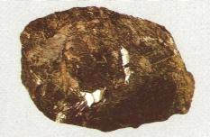<br>
              <font face="Arial,Helvetica"><font color="#000099"><font size="-1">FIGURE
                    VIII</font></font></font> <br>
              <i><font face="Arial,Helvetica"><font color="#000099"><font size="-1">(<a

                         name="corindon"></a>corindon, Caroline du nord)</font></font></font></i></p>
          </center>
          <p><font face="Arial,Helvetica"><font color="#000099"><font size="-1"><b>2)
-
                    Rubis</b>. On l'obtient avec une facilité remarquable et de
                  la même manière que le corindon ; seulement on ajoute au
                  fluorure d'aluminium une petite quantité de fluorure de
                  chrome, et l'on opère dans des creusets d'alumine en plaçant
                  l'acide borique dans une coupelle de platine. La teinte
                  rouge-violacée de ces rubis est exactement la même que la</font></font></font>
            <font face="Arial,Helvetica"><font color="#000099"><font size="-1">teinte
                  des plus beaux rubis naturels ; elle est due au sesquioxyde de
                  chrome.</font></font></font> <br>
          </p>
          <center>
            <p>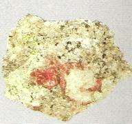<br>
              <font face="Arial,Helvetica"><font color="#000099"><font size="-1">FIGURE
                    IX</font></font></font> <br>
              <i><font face="Arial,Helvetica"><font color="#000099"><font size="-1">(<a

                         name="rubis"></a>rubis, Norvège)</font></font></font></i></p>
          </center>
          <p><font face="Arial,Helvetica"><font color="#000099"><font size="-1"><b>3)
-
                    Saphir</b>. Le saphir bleu se produit dans les mêmes
                  circonstances que le rubis. Il est</font></font></font> <br>
            <font face="Arial,Helvetica"><font color="#000099"><font size="-1">également
coloré
                  par l'oxyde de chrome, La seule différence entre eux consiste
                  dans les proportions de la matière colorante, peut-être aussi
                  dans l'état d'oxydation du chrome. Mais à cet égard l'analyse
                  ne peut rien indiquer de précis, à cause de la quantité si
                  petite de la matière colorante en tous les cas. Dans certaines
                  préparations nous avons obtenu, placés l'un à côté de l'autre,
                  des rubis rouges et des saphirs du plus beau bleu, dont la
                  teinte est d'ailleurs identique à la teinte du saphir oriental
                  dont la cause est inconnue.</font></font></font> </p>
          <center>
            <p>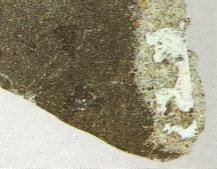<br>
              <font face="Arial,Helvetica"><font color="#000099"><font size="-1">FIGURE
                    X</font></font></font> <br>
              <i><font face="Arial,Helvetica"><font color="#000099"><font size="-1">(<a

                         name="saphir"></a>saphir dans du basalte, Allemagne)</font></font></font></i></p>
          </center>
          <p><font face="Arial,Helvetica"><font color="#000099"><font size="-1"><b>4)
-
                    Corindon vert</b>. Quand la quantité d'oxyde de chrome est
                  très considérable, les corindons qu'on obtient sont d'un
                  très-beau vert comme l'ouvarowite, qui, d'après les analyses
                  de M. Damour, contient 25 pour 100 d'oxyde de chrome. Ce
                  corindon se rencontre toujours dans les parties d'appareil où
                  l'on place le fluorure d'aluminium et le fluorure de chrome,
                  où celui-ci se concentre par suite de sa moindre volatilité.</font></font></font>
          </p>
          <center>
            <p>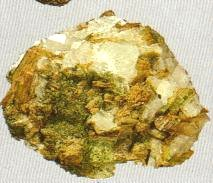<br>
              <font face="Arial,Helvetica"><font color="#000099"><font size="-1">FIGURE
                    XI</font></font></font> <br>
              <i><font face="Arial,Helvetica"><font color="#000099"><font size="-1">(<a

                         name="ouvarovite"></a>ouvarovite, avec pyroxène et
                      calcite)</font></font></font></i></p>
          </center>
          <p><font face="Arial,Helvetica"><font color="#000099"><font size="-1"><b>5)
-
                    Fer oxydulé</b>. Avec le sesquifluorure de fer et l'acide
                  borique on obtient de longues aiguilles, composées d'un
                  chapelet d'octaèdres réguliers terminées par un petit octaèdre
                  d'une forme parfaite. Il est évident, d'après cela, qu'à une
                  température élevée le sesquioxyde de fer se réduit
                  partiellement : ce que nous avons constaté dans d'autres
                  expériences qui sont relatées dans notre Mémoire.</font></font></font>
            <br>
          </p>
          <center>
            <p>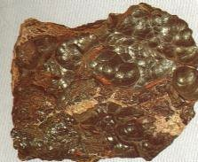<br>
              <font face="Arial,Helvetica"><font color="#000099"><font size="-1">FIGURE
                    XII</font></font></font> <br>
              <i><font face="Arial,Helvetica"><font color="#000099"><font size="-1">(<a

                         name="hématite"></a>hématite)</font></font></font></i></p>
          </center>
          <p><font face="Arial,Helvetica"><font color="#000099"><font size="-1"><b>6)
-
                    Zircone</b>. La zircone s'obtient en petits cristaux groupés
                  régulièrement et sous forme d'arborisations très-élégantes et
                  semblables à du chlorhydrate d'ammoniaque. Produite par le
                  même procédé que le corindon, la zircone acquiert une
                  insolubilité absolue dans les acides, même l'acide sulfurique
                  concentré. La potasse fondue n'exerce non plus aucune</font></font></font>
            <font face="Arial,Helvetica"><font color="#000099"><font size="-1">action
                  sur elle : le bisulfate de potasse seul la dissout, en
                  laissant le sulfate double insoluble caractéristique de la
                  zircone.</font></font></font> <br>
          </p>
          <center>
            <p>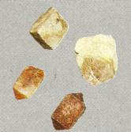<br>
              <font face="Arial,Helvetica"><font color="#000099"><font size="-1">FIGURE
                    XIII</font></font></font> <br>
              <i><font face="Arial,Helvetica"><font color="#000099"><font size="-1">(cristaux
                      de&nbsp;<a  name="zircon"></a>zircon)</font></font></font></i></p>
          </center>
          <p><font face="Arial,Helvetica"><font color="#000099"><font size="-1">Nous
avons
                  produit encore par cette méthode d'autres oxydes métalliques
                  cristallisés au moyen de fluorures d'uranile, de titane et
                  d'étain. Leur composition et leurs formes n'ont pas encore été
                  déterminées.</font></font></font> </p>
          <p><font face="Arial,Helvetica"><font color="#000099"><font size="-1"><b>7)
-
                    Cymophane ou chrysobéryl</b>. On mélange à équivalents égaux
                  les deux fluorures d'aluminium et de giucium, et on décompose
                  leurs vapeurs par l'acide borique dans l'appareil déjà décrit.
                  On obtient ainsi des cristaux entièrement semblables aux
                  échantillons qui nous viennent d'Amérique, avec cette macle en
                  coeur et ces stries convergentes qui sont caractéristiques
                  dans cette espèce. Nous avons obtenu des cristaux de cymophane
                  de plusieurs millimètres de longueur et d'une très-grande</font></font></font>
            <font face="Arial,Helvetica"><font color="#000099"><font size="-1">perfection
                  de formes.</font></font></font> </p>
          <center>
            <p>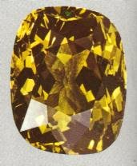<br>
              <font face="Arial,Helvetica"><font color="#000099"><font size="-1">FIGURE
                    XIV</font></font></font> <br>
              <i><font face="Arial,Helvetica"><font color="#000099"><font size="-1">(<a

                         name="chrysobéryl"></a>chrysobéryl, taillé et poli)</font></font></font></i></p>
          </center>
          <p><font face="Arial,Helvetica"><font color="#000099"><font size="-1"><b>8)
-
                    Gahnite</b>. Il faut pour obtenir ce spinelle opérer dans
                  des vases de fer où l'on introduit le mélange de fluorure
                  d'alumidium et de fluorure de zinc : l'acide borique est
                  contenu dans une nacelle de platine. La gahnite se dépose sur
                  les différentes parties de l'appareil, où on le trouve
                  cristallisé en octaèdres réguliers très nets et très
                  brillants. lIs sont fortement colorés, sans doute par le fer
                  du creuset qui s'oxyde.</font></font></font> <br>
          </p>
          <p style="text-align: center;"><font face="Arial,Helvetica"><font color="#000099"><font

                  size="-1"><b><br>
                  </b>FIGURE XIV bis<br>
                  (<a  name="gahnite"></a>gahnite)<b><br>
                  </b></font></font></font></p>
          <p><font face="Arial,Helvetica"><font color="#000099"><font size="-1"><b>9)
-
                    Staurotide</b>. On peut préparer des silicates en cristaux
                  ordinairement très petits, mais bien formés et souvent
                  déterminables au moyen de l'appareil que nous venons de
                  décrire, en y mettant en contact la vapeur des fluorures
                  volatils et la silice qu'on introduit dans la nacelle
                  intérieure à la place de l'acide borique. C'est ainsi qu'on
                  peut obtenir une matière&nbsp; cristallisée ayant l'aspect et
                  la composition de la staurotide, et qui en possède les
                  qualités principales. C'est un silicate bibasique dont la
                  formule est SiAl2.</font></font></font> <br>
          </p>
          <center>
            <p><br>
              <font face="Arial,Helvetica"><font color="#000099"><font size="-1">FIGURE
                    XV</font></font></font> <br>
              <i><font face="Arial,Helvetica"><font color="#000099"><font size="-1">(<a

                         name="staurotide"></a>staurotide)</font></font></font></i></p>
          </center>
          <p><font face="Arial,Helvetica"><font color="#000099"><font size="-1"><b>10)
-
                    Silicates divers</b>. La même substance s'obtient avec une
                  facilité extrême en chauffant à une température élevée de
                  l'alumine dans un courant de fluorure de silicium gazeux.
                  L'alumine amorphe se transforme alors en un lacis de cristaux
                  qui représentent la sraurotide au moins par leur composition.
                  Nous en avons obtenu récemment des cristaux</font></font></font>
            <font face="Arial,Helvetica"><font color="#000099"><font size="-1">assez
                  gros pour que leurs angles puissent être mesurés ; nous nous
                  réservons de compléter ainsi leur étude. Nous appliquons ces
                  méthodes à la production d'autres silicates dont les bases
                  donnent des fluorures volatils tels que la glucine et le zinc.
                  La</font></font></font> <font face="Arial,Helvetica"><font color="#000099"><font

                  size="-1">zircone, dans les mêmes circonstances, fournit de
                  petits cristaux ayant l'aspect des zircons et cet éclat
                  particulier qui les caractérise.</font></font></font> </p>
          <p><font face="Arial,Helvetica"><font color="#000099"><font size="-1">Il
résulte
                  des études que nous avons commencées dans cette direction et
                  qui sont loin d'être terminées, que la décomposition du
                  fluorure de silicium par les oxydes ne laisse dans les
                  silicates qu'une faible proportion de silice, de sorte qu'on
                  ne peut obtenir ainsi que des silicates très-basiques. Ainsi,
                  en essayant de produire l'émeraude au moyen de la réaction du
                  fluorure d'aluminium et du fluorure de glucium sur la silice,
                  nous avons obtenu une matière cristallisée en lames
                  hexagonales, très-dure, qui nous a fait espérer que nous
                  avions reproduit l'émeraude elle-même. Mais l'analyse nous a
                  démontré que cette substance contenait des proportions de
                  silice insuffisantes pour permettre d'adopter une telle
                  conclusion. On remarquera que le fluorure d'aluminium
                  décompose la silice pour former du fluorure de silicium et de
                  la staurotide ; tout aussi bien le fluorure de silicium au
                  contact de l'alumine donne du fluorure d'aluminium et de la
                  staurotide. C'est ce qui fait que toutes les pièces argileuses
                  de nos appareils de fusion sont transformées souvent
                  entièrement en une sorte de magma de cristaux composés presque
                  exclusivement de staurotide, et qu'en présence d'une matière
                  argileuse les composés fluorés volatils pourraient servir
                  d'intermédiaire pour obtenir, pour ainsi dire, d'une manière
                  indéfinie la cristallisation de matières tout à fait
                  infusibles aux températures auxquelles agissent les vapeurs
                  fluorées. En effet, il ne reste aucune trace de fluor dans les
                  silicates minéralisés sous l'influence des fluorures. Nous
                  avons l'espoir que les expériences que nous venons de
                  rapporter ne seront pas sans utilité pour expliquer certains
                  faits de la nature. Nous devons dire d'ailleurs que
                  l'intervention du fluor dans la production des minéraux des
                  filons a été admise par les géologues et principalement par M.
                  Daubrée dans ses beaux Mémoires sur les filons métalliques.
                  Nos expériences viennent à l'appui des spéculations de ce
                  genre. 'Nous devons dire aussi que les naturalistes ont déjà
                  attaqué le problème dont nous essayons de donner ici une
                  solution partielle, et nous sommes très-heureux de rappeler
                  ici les expériences d'Ébelmen et de M. Gaudin, quoique les
                  méthodes que nous avons employées soient essentiellement
                  différentes des leurs.</font></font></font> <br>
            <font face="Arial,Helvetica"><font color="#000099"><font size="-1"><b>11)
                    -</b> Nous profitons de cette circonstance pour annoncer à
                  l'Académie que nous avons obtenu le <b>rutile</b> ou acide
                  titanique par la décomposition d'un titanate fusible, et en
                  particulier du titanate de protoxyde d'étain, par la silice.
                  Nous aurons l'honneur de</font></font></font> <font face="Arial,Helvetica"><font

                color="#000099"><font size="-1">présenter
                  à l'Académie prochainement une Note sur ce sujet.</font></font></font>
          </p>
          <p><font face="Arial,Helvetica"><font color="#000099"><font size="-1">En
faisant
                  ces expériences nous avons obtenu souvent en dissolution dans
                  de l'étain métallique une substance brillante, cristallisée en
                  larges lames métalliques qui se feutrent très-facilement, et
                  qui se séparent de l'étain au moyen de l'acide chlorhydrique
                  qui les attaque très-peu. Cette matière curieuse est un
                  alliage de fer et d'étain à équivalents égaux. Son aspect et
                  ses propriétés chimiques lui donnent quelque intérêt.</font></font></font></p>
        </blockquote>
        <font face="Arial,Helvetica"><font color="#000099">Ces belles
            expériences illustrent à merveille deux concepts hermétiques
            fondamentaux, d'une part celui du « fixe et du volatil », pendant de
            la formule rituelle « </font><i><font color="#660000"><font size="-1">solve
                et coagula</font></font></i><font color="#000099"> » et d'autre
            part la réincrudation. Voyons d'abord le fixe et le volatil. C'est
            une constante de la littérature alchimique et elle est
            habituellement illustrée par la lutte d'animaux dissemblables.</font></font>
        <p><font face="Arial,Helvetica"><font color="#000099">On peut en trouver
              une autre représentation symbolique dans le panneau supérieur de
              la&nbsp;<a  name="porte_manteau"></a><b><font size="-1">porte
                  alchimique de la villa Palombara</font></b> :</font></font> <br>
          <br>
        </p>
        <center>
          <p>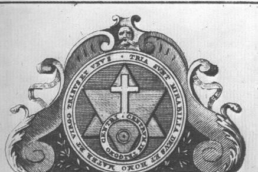<br>
            <font face="Arial,Helvetica"><font color="#000099"><font size="-1">FIGURE
                  XVI</font></font></font> <br>
            <i><font face="Arial,Helvetica"><font color="#000099"><font size="-1">(manteau
supérieur
                    de la porte alchimique)</font></font></font></i></p>
        </center>
        <p><font face="Arial,Helvetica"><font color="#000099">Vrai prolégomène à
              l'art d'alchimie, le cercle extérieur porte l'<a  name="cercle extérieur"></a>inscription
              :</font></font> <br>
          &nbsp; </p>
        <p><br>
        </p>
        <center>
          <p><b><font face="Arial,Helvetica"><font color="#660000"><font size="-1">TRIA
SUNT
                    MIRABILIA DEVS ET HOMO MATER ET VIRGO TRINVS ET VNVS</font></font></font></b>
          </p>
          <p><b><font face="Arial,Helvetica"><font color="#660000"><font size="-1">LES
TROIS
                    SONT ADMIRABLES, DIEU ET L'HOMME, LA MERE ET LA VIERGE,
                    TRIPLE ET UN.</font></font></font></b></p>
        </center>
        <p><font color="#000099"><font face="Arial,Helvetica">Cette devise est à
              rapprocher de l'Ouroboros de la Chrysopée, attribuée à Cléopâtre,
              où le serpent encadre ces trois mots : « </font><font face="Symbol, Wingdings">EN
              TO PAN </font><font face="Arial,Helvetica">», « </font></font><font

            face="Arial,Helvetica"><i><font color="#990000"><font size="-1">Un
                  le tout</font></font></i><font color="#000099"> ». Nous avons
              déjà rencontré cette figure à la fin de la section des <font size="-1"><a

                  href="../original/gardes-corps.html" class="lien-repare" title="ancre absente de la page d'origine : lien ramené en haut de page">Gardes du corps</a></font> sur
              la gravure de l'<i><font size="-1"><b>Aureum seculum</b>, </font></i><font

                size="-1">Hinricus Madathanus, 1625<i>). </i></font>Cette
              gravure, frontispice du Traité de Mynsicht [</font><font color="#660000"><font

                size="-1">à qui par parenthèse on doit sans doute la découverte
                de l'<a href="../original/sulf-potasse.html">Arcanum duplicatum</a></font></font><font

              color="#000099">], montre clairement que la matière doit fournir
              l'eau ignée et le feu aqueux. Ici, toutefois, pas de texte, rien
              qu'un motif lapidaire, taillé vraisemblablement dans du calcaire
              ou dans du marbre. A ce propos, citons ce passage de la <b><i><font

                    size="-1"><a href="../original/chimie-anciens.html">Chimie
                      des Anciens</a></font></i></b> de Marcellin Berthelot qui
              complètera la description du frontispice :</font></font> </p>
        <blockquote><font face="Arial,Helvetica"><font color="#000099"><font size="-1">Les
manuscrits
                alchimiques renferment un certain nombre de figures d'appareils
                et autres objets, destinés à faire comprendre les descriptions
                du texte. Ces figures offrent un grand intérêt. Quelques-unes
                ont varié d'ailleurs dans la suite des temps ; sans doute parce
                que les expérimentateurs qui se servaient de ces traités en ont
                modifié les figures, suivant leurs pratiques actuelles. Le tout
                forme, avec les figures de fourneaux et appareils d'une époque
                plus récente, tels qu'ils sont reproduits dans la <i>Bibliotheca
                  Chemica</i> de Manget, un ensemble très important pour
                l'histoire de la Chimie. Je me bornerai à étudier les plus vieux
                de ces appareils ; car ce serait sortir du sujet de la présente
                publication que d'en discuter la suite et la filiation jusqu'aux
                temps modernes ; il serait d'ailleurs nécessaire de rechercher
                les intermédiaires chez les Arabes et les auteurs latins du
                Moyen Âge.</font></font></font> <font face="Arial,Helvetica"><font

              color="#000099"><font size="-1">Les figures symboliques
                mériteraient à cet égard une attention particulière, par leur
                corrélation avec certains textes de Zosime, dans son <i>traité
                  sur la Vertu</i>, etc. Je citerai, par exemple, de très beaux
                dessins coloriés, contenus dans le manuscrit latin 7147 de</font></font></font>
          <font face="Arial,Helvetica"><font color="#000099"><font size="-1">la
                Bibliothèque nationale de Paris, représentant les métaux et les
                divers corps, sous l'image d'hommes et de rois, renfermés au
                sein des fioles où se passent les opérations (fol. 80, 81 et
                suivants). Dans la <i><a href="../original/bibliot-phil-chim.html#6-Bibliotheca_chemica_curiosa">Bibl.
                    Chemica</a></i> de Manget, on voit aussi des figures du même
                genre (t.1, p.938, pl. 2, 8, 1, 13, etc ; Genève, 1702). Il y a
                là une tradition mystique, qui remonte très haut et sans doute
                jusqu'au symbolisme des vieilles divinités planétaires. Mais ce
                côté du sujet est moins intéressant pour notre science chimique
                que la connaissance positive des appareils eux-mêmes. En ce qui
                touche ceux-ci, je ne veux pas sortir aujourd'hui de l'étude des
                alchimistes grecs. J'ai relevé tous les dessins qui se</font></font></font>
          <font face="Arial,Helvetica"><font color="#000099"><font size="-1">trouvent
dans
                le manuscrit de Saint-Marc XI<sup>e </sup>siècle), dans le
                manuscrit 2325 de la Bibliothèque nationale (XIII<sup>e</sup>
                siècle, et dans le manuscrit 2327 (XV<sup>e</sup> siècle), ainsi
                que dans les manuscrits 2249, 225O à 2252, 2275, 2329, enfin
                dans les deux manuscrits alchimiques grecs de Leide et dans le
                manuscrit grec principal du Vatican. J'ai fait exécuter des
                photogravures de ceux de Paris et de celui de Venise, afin
                d'éviter toute incertitude d'interprétation. Ce sont ces figures
                qui vont etre transcrites ici : on y renverra dans l'occasion,
                lors de l'impression des textes correspondants.</font></font></font>
          <center>
            <p><b><font face="Arial,Helvetica"><font color="#000099"><font size="-1">Figures
du
                      manuscrit de Saint-Marc</font></font></font></b></p>
          </center>
          <p><font face="Arial,Helvetica"><font color="#000099"><font size="-1">Je
donnerai
                  d'abord les figures les plus anciennes, celles du manuscrit</font></font></font>
            <font face="Arial,Helvetica"><font color="#000099"><font size="-1">de
Saint
Marc,
                  savoir :</font></font></font> <br>
            <font face="Arial,Helvetica"><font color="#000099"><font size="-1">La<a

                     name="Chrysopée"></a><b><i>Chrysopée de Cléopâtre</i></b>,
                  formée de plusieurs parties corrélatives les.unes des autres,
                  les unes d'ordre pratique et les autres d'ordre mystique ou
                  magiques : c'est la figure 11.</font></font></font></p>
        </blockquote>
        <font face="Arial,Helvetica"><font color="#000099">De la <font size="-1"><a

                href="../original/chimie-anciens-5.html#FIGURE%20XI%20-%20chrysop%C3%A9e%20de%20Cl%C3%A9op%C3%A2tre%20-">figure
                11</a></font>, nous avons extrait d'abord cette image, fort
            connue :</font></font> <br>
        &nbsp;
        <center>
          <p></p>
          <p><font face="Arial,Helvetica"><font color="#000099"><font size="-1">FIGURE
                  XVII</font></font></font> <br>
            <i><font face="Arial,Helvetica"><font color="#000099"><font size="-1">(Chrysopée
de
                    Cléopâtre)</font></font></font></i></p>
        </center>
        <p><font face="Arial,Helvetica"><font color="#000099">Voici le
              commentaire résumé qu'en donne M. Berthelot :</font></font> </p>
        <blockquote><font face="Arial,Helvetica"><font color="#000099"><font size="-1">Au-dessous
du
                titre se trouve un premier dessin, formé de trois cercles
                concentriques. Au centre des cercles, les signes de l'or, de
                l'argent (avec un petit appendice) et du mercure.</font></font></font>
          <br>
          <font face="Arial,Helvetica"><font size="-1"><font color="#000099">Dans
l'anneau
                intérieur : [...] « </font><i><font color="#660000">le serpent
                  est un, celui qui a le venin, après les deux emblèmes.</font></i><font

                color="#000099"> » Dans l'anneau extérieur : [...] « </font><i><font

                  color="#660000">Un
                  est le tout et par lui le tout et vers lui le tout ; et si le
                  tout ne contient pas le tout, le tout n'est rien. </font></i><font

                color="#000099">» A droite, le cercle extérieur se prolonge par
                une sorte de queue, qui montre que ce système est la figuration
                du serpent mystique. [...] Au-dessous des grands cercles sont
                des signes répondant à des opérations chimiques, exécutées dans
                certains appareils que je vais énumérer.</font></font></font> <font

            size="-1"><font face="Arial,Helvetica"><font color="#000099">Tel est
                le petit dessin central, représentant un appareil pour fixer les
                métaux. Il est posé sur un bain-marie, muni de deux pieds
                recourbés et placé lui-même au-dessus d'un fourneau. Cet
                appareil est pourvu d'un tube central qui le surmonte, tube
                destiné sans doute au départ des gaz ou des vapeurs. [...] Le
                petit dessin, situé à gauche du précédent, représente un
                appareil analogue, avec un ballon supérieur, destiné à recevoir
                les vapeurs dégagées par la pointe du tube. [...] Les deux
                petits cercles, situés à droite et munis de trois appendices
                rectilignes, semblent représenter des appareils avec leurs
                trépieds posés sur le feu ; [...] Le cercle inférieur, muni d'un
                point central, symbolise l'oeuf philosophique (?), ou le cinabre
                [...] Vers le bas à gauche, est figuré le serpent Ouroboros,
                avec l'axiome central: « </font></font><font face="Symbol"><font

                color="#660000">EN TO PAN</font></font><font face="Arial,Helvetica"><font

                color="#000099"> » le tout est un. [...] La figure de la
                Chrysopée de Cléopâtre existe, sous le même titre et avec ses
                diverses portions essentielles, dans les manuscrits copiés
                directement sur celui de Saint-Marc ; elle en caractérise la
                filiation.</font></font></font></blockquote>
        <font face="Arial,Helvetica"><font color="#000099">Le dessin formé des
            trois cercles concentriques se retrouve, à peu de chose près, dans
            un dessin que nous présentons dans la section <font size="-1"><a href="../original/prima-materia.html">Prima
                materia</a></font> ; il illustre un traité de <font size="-1"><a

                href="../original/prima-materia.html#dompte">Zozime</a></font> sur l'<a  name="Eau"></a><b>Eau
              Divine</b>.</font></font> <br>
        &nbsp;
        <p><br>
        </p>
        <center>
          <p><a  name="4)-"></a><b><font face="Arial,Helvetica"><font color="#660000">4)-
                  l'<a  name="Eau_divine_1"></a>Eau Divine</font></font></b></p>
        </center>
        <p><font color="#000099"><font face="Arial,Helvetica">Cette Eau Divine
              mérite des explications quant à sa nature et sa fonction. Il
              s'agit d'une substance appelée </font><font face="Symbol"><font size="+1">udwr
                qeion</font></font><font face="Arial,Helvetica">, ce qui veut
              dire eau de soufre ou eau divine. Cette substance, nous dit M.
              Berthelot dans sa <b><i><font size="-1"><a href="../original/chimie-anciens.html">Chimie
                      des Anciens</a></font></i></b>, a un rôle énorme chez les
              alchimistes, lesquels comme nous l'avons dit précédemment, jouent
              continuellement sur le double sens du mot. Notons au passage que
              l'interprétation qu'en donne C.G. Jung nous paraît sujette à
              caution mais c'est un sujet qui ménerait à un développement tel
              que nous ne pouvons l'aborder dans la section [<span style="color: #660000;">cf.
                <a href="../original/aurora-consurgens.html">Aurora consurgens</a></span>].
              Quoi qu'il en soit, l'Eau Divine est désignée dans le lexique
              alchimique sous le nom de bile de serpent, dénomination attribuée
              à Pétésis, seul auteur cité dans le lexique du papyrus de Leide,
              lequel Pétésis figure aussi dans Dioscoride et doît être rapproché
              de Phiménas ou Pamménès, désigné à la fois dans le papyrus et dans
              le <font size="-1"><a href="../original/idee-alchimique.html">pseudo-Démocrite</a></font>.
              L'eau de soufre apparaît pour la première fois dans le papyrus X
              [89] :</font></font> </p>
        <p><font face="Arial,Helvetica"><font color="#990033">«<font size="-1"><i>
                  Invention de l'eau de soufre. Une poignée de chaux, et autant
                  de soufre en poudre fine ; placez-les dans un vase contenant
                  du vinaigre fort, ou de l'urine d'enfant impubère [</i></font></font><font

              size="-1"><font color="#003399">Berthelot assure qu'elle agissait
                comme source de phosphate alcalin et d'ammoniaque ; on la
                retrouve dans la <i>bibliotheca Chemica</i> de Manget, t. I,
                1702 : Sal volatile et fixum, ut et spiritus urinae, sic
                parantur. Recipe urinae puerorum...</font><font color="#990033"><i>]
                  ; chauffez par en-dessous, jusqu'à ce que la liqueur
                  surnageante paraisse comme du sang ; décantez celle-ci
                  proprement pour la séparer du dépôt, et employez. </i></font></font><font

              color="#990033">»</font></font> </p>
        <p><font color="#000099"><font face="Arial,Helvetica">On prépare ainsi
              un polysulfure de calcium susceptible d'attaquer l'or, mais aussi
              <u>capable de teindre les métaux par voie humide</u>. Cette
              liqueur préparée avec du soufre natif se trouve décrite dans
              divers passages des alchimistes, par exemple dans le petit résumé
              intitulé </font><font face="Symbol"><font size="+1">gnhsia grajh</font>,</font><font

              face="Arial,Helvetica"> écrit authentique. Berthelot ajoute que
              les descriptions de Zosime se rapportent à des</font></font><font

            face="Arial,Helvetica"><font color="#660000"> liqueurs chargées
              d'acide sulfhydrique</font><font color="#000099">. Cela jette un
              nouveau jour sur l'utilisation que pouvaient avoir les anciens sur
              l'hydrogène sulfuré</font></font> </p>
        <p><font face="Arial,Helvetica"><font color="#000099">[</font><font color="#660000"><font

                size="-1">car dans la section sur le <b><a href="../original/imitat-prec.html#hydrog%C3%A8ne">Mercure</a></b>,
                nous avions révoqué en doute la possibilité qu'avaient les
                anciens alchimistes d'avoir eu accès à la voie humide par ce
                moyen</font></font><font color="#000099">].</font></font> </p>
        <p><font face="Arial,Helvetica"><font color="#000099">Cette eau de
              soufre&nbsp; donne des précipités ou produits colorés en noir, en
              jaune, en rouge, etc., avec les sels et oxydes métalliques ; il y
              a plus : les polysulfures alcalins exercent une action dissolvante
              sur la plupart des sulfures métalliques. H. De <font size="-1"><a

                  href="../original/merc-nat.html#S%C3%A9narmont">Sénarmont</a></font> a ainsi
              pu réaliser des minéraux par la voie humide, à des températures
              plus ou moins élevées et sous pression. Nous avons évoqué ces
              expériences dans la section <font size="-1"><a href="../original/merc-nat.html">De
                  la Nature de la Pierre</a></font>. On se contentera ici de
              dire que H. De Sénarmont, pensant que les filons ont été formés
              par voie de dissolution, a cherché à reproduire par la voie humide
              des minéraux comme le fer oligiste. Voulant reproduire, autant que
              possible, les phénomènes des sources thermales, presque toutes
              accompagnées de dégagement d'acide carbonique, il a constamment
              introduit un excès de ce gaz dans les liqueurs en expérience. sous
              de fortes pressions, le gaz devient un dissolvant énergique. Des
              dissolutions de gaz sulfhydrique, d ebicarbonates et de sulfures
              alcalins, isolées ou employées dans des proportions variables, ont
              aussi été employés. L'Eau divine de Zosime est donc un <u>polysulfure
                de calcium</u>.</font></font> </p>
        <blockquote><font color="#000099"><b><font size="-1"><span style="font-family: Wingdings;">-
                </span><font face="Arial,Helvetica">préparation des sulfures de
                  calcium</font></font></b><font face="Arial,Helvetica"> : <font

                size="-1">le monosulfure de calcium est presque incolore ; il
                luit dans l'obscurité et on le nommait jadis le phosphore de
                Canton. On peut préparer ce corps en chauffant au rouge un
                mélange de sulfate de chaux [gypse] et de charbon, ou des
                fragments de sulfate de chaux dans la brasque d'un creuset en
                recouvrant ces fragments de poussière de charbon. On l'obtient
                également en faisant passer un courant de gaz sulfhydrique
                [hydrogène sulfuré] sur de la chaux chauffée au rouge dans un
                tube de porcelaine. Le bisulfure de calcium s'obtient en
                mélangeant de l'hydrate de chaux et de soufre, en parties
                égales, et d'eau que l'on fait bouillir ; on filtre bouillant et
                par le refroidissement, les cristaux qui se forment acquièrent
                souvent une grande longueur. Il sert à la préparation du
                bisulfure d'hydrogène qui joue un grand rôle dans la voie humide
                [</font></font></font><font face="Arial,Helvetica"><font size="-1"><font

                color="#660000">cf. section sur la <b><a href="../original/compendium.html">pierre</a></b></font><font

                color="#000099">]. Enfin, le polysulfure [ou quintisulfure de
                calcium] est très soluble dans l'eau et les dissolutions sont
                fortement colorées en rouge. Quand on évapore la dissolution
                dans le vide, on obtient une masse amorphe d'un beau jaune. On
                peut le préparer en traitant le monosulfure par l'eau et le
                soufre en excès et en faisant bouillir ; il est quelquefois
                employé pour le blanchiment en place de lessives alcalines.</font></font></font>
          <p><font color="#000099"><font size="-1"><font face="Wingdings">- </font><font

                  face="Arial,Helvetica"><b>propriété hermétique du sulfure de
                    calcium</b> </font></font><font face="Arial,Helvetica">: <font

                  size="-1">Le sulfure de calcium peut être doué d'une <u>belle
                    phosphorescence</u> : pour le préparer, on chauffe dans un
                  four à moufle, au rouge sombre, pendant une heure, un mélange
                  exact de 100 g de carbonate de calcium, précipité pur, bien
                  exempt de carbonate et de chlorure calcaire, avec 30 g de
                  soufre en canon pulvérisé. Le mélange est placé dans un
                  creuset couvert. Après refroidissement, le sulfure de calcium
                  blanc, pulvérulent, est imprégné de 1/10 000 de son poids de
                  bismuth. Le sulfure de calcium ainsi préparé est pulvérulent
                  et doué d'une belle phosphorescence violette par la seule
                  addition d'une trace de bismuth.</font></font></font></p>
        </blockquote>
        <font face="Arial,Helvetica"><font color="#000099">Cette propriété
            curieuse met en évidence deux rapports hermétiques avec notre sujet
            :</font></font>
        <p><font face="Arial,Helvetica"><font color="#000099"><b>a)-</b>
              d'abord, pour la référence au&nbsp;<a  name="bismuth"></a>bismuth.
              Nous avons évoqué le bismuth dans la section des Gardes du corps
              ainsi que nous le rappelons supra, à propos de l'<font size="-1"><i><b>Aureum
                    seculum</b>, (</i></font></font><font size="-1"><font color="#660000">Hinricus
Madathanus,
                1625</font><font color="#000099"><i>)</i></font></font><font color="#000099">,
              où nous écrivons qu'il est fort peu probable que la lettre B
              dissimule le bismuth puisque ce corps, décrit par le pseudo-B.
              Valentin, était désigné sous le terme de </font><font color="#006600">wismuth</font><font

              color="#000099"> (bismuth). B. Valentin en parlait comme d'un
              métal particulier, ayant quelque analogie avec l'</font><font color="#006600">antimoine</font><font

              color="#000099">. Signalé par B. Valentin au XV<sup>e</sup>
              siècle, le bismuth fut distingué comme un métal particulier par
              Agricola en 1558 et appelé bismutum ou <font size="-1">C<i>inereum
                  plumbum</i></font>. Quant à l''étymologie du mot bismuth, elle
              n'est pas connue. Parmi plusieurs hypothèses proposées, on retient
              une origine germanique, bismuth dérivant de «<i> <font size="-1">wis
                  mat </font></i>» pour weisse Masse [</font><font color="#660000"><font

                size="-1">masse blanche</font></font><font color="#000099">]
              dans le langage des mineurs. Dans son <b><i><font size="-1">Cours
                    de chimie</font></i></b>, N. Lémery appelle le bismuth l'</font><font

              color="#006600">étain de glace</font><font color="#000099">. Il en
              parle comme d'une matière métallique, </font><font color="#006600">blanche</font><font

              color="#000099">, polie, sulfureuse, ressemblant à l'étain, mais
              dure, aigre, cassante, </font><font color="#006600">disposée en
              facettes ou&nbsp;<a  name="écailles"></a>écailles luisantes</font><font

              color="#000099">, </font><font color="#006600">éclatantes</font><font

              color="#000099"> comme de petites glaces. Les Anciens prétendent
              que c'est une marcassite naturelle, ou un étain imparfait qu'on
              trouve dans les mines d'étain.</font></font> </p>
        <p><font face="Arial,Helvetica"><font color="#000099"><b>b)-</b>
              ensuite, pour la lumière&nbsp;<a  name="violette"></a>violette qui
              se distingue dans la nuit et qui revêt un intérêt alchimique
              conséquent. Ainsi, Fulcanelli écrit-il, à propos de l'aspect de la
              pierre philosophale :</font></font> </p>
        <p><font face="Arial,Helvetica"><font color="#660000"><font size="-1">"<i>
                  Dans l'<u>obscurité</u>, elle brille alors d'une <u>lueur
                    douce</u>, rouge et phosphorescente, dont l'éclat</i></font></font></font>
          <font color="#660000"><i><font face="Arial,Helvetica"><font size="-1">reste
plus
                  faible que celui d'une veilleuse ordinaire. La Médecine
                  universelle est devenue la Lumière</font></font></i> <i><font

                face="Arial,Helvetica"><font size="-1">inextinguible, le produit
                  éclairant de ces <a href="../original/atalante-iii.html">lampes
                    perpétuelles</a>, que certains auteurs ont signalées</font></font></i>
            <i><font face="Arial,Helvetica"><font size="-1">comme ayant été
                  trouvées dans quelques sépultures antiques. Ainsi radiante et
                  liquide, la pierre</font></font></i> <i><font face="Arial,Helvetica"><font

                  size="-1">philosophale n'est guère susceptible, à notre avis,
                  d'être poussée plus loin ; vouloir amplifier sa vertu</font></font></i>
            <font face="Arial,Helvetica"><font size="-1"><i>ignée nous
                  semblerait dangereux ;le moins que l'on pourrait craindre
                  serait de la volatiliser et de perdre le bénéfice d'un labeur
                  considérable. </i></font></font></font><font face="Arial,Helvetica"><font

              size="-1">"<font color="#000099"> [<b><i>DM, I</i>,</b> p. 265]</font></font></font>
        </p>
        <p><font face="Arial,Helvetica"><font color="#000099">M.A. Verneuil, à
              qui on doit la préparation du rubis artificiel par le chalumeau à
              oxygène et hydrogène, a écrit un commentaire sur les<span style="font-style: italic;">
              </span></font><i><font color="#660000"><font size="-1">Causes
                  déterminantes de la phosphorescence du&nbsp;<a  name="sulfure"></a>sulfure
                  de calcium</font></font></i><font color="#000099"> :</font></font>
        </p>
        <blockquote><font face="Arial,Helvetica"><font size="-1"><font color="#000099">Les
recherches
                que je poursuis depuis longtemps et dont j'ai déjà présenté le
                résumé à l'Académie (</font><font color="#660000"><i>Comptes
                  rendus</i>, t. CIII, p. 600</font><font color="#000099">) ont
                pour but de déterminer les causes qui activent la <u>phosphorescence</u>
                du sulfure de calcium. Je rappelle que, pour préparer le sulfure
                de calcium présentant une phosphorescence <u>violette</u>, il
                suffit de calciner un mélange formé de 100 parties de chaux de
                coquille d'<i>Hypopus vulgaris</i>, 30 de soufre et 0,02 de
                sous-nitrate de bismuth.</font></font></font> <font face="Arial,Helvetica"><font

              color="#000099"><font size="-1">Ayant
                reconnu que la chaux pure, traitée dans les mêmes conditions, ne
                produisait qu'une matière très faiblement phosphorescente, j'ai
                pensé que l'analyse de cette coquille permettrait de retrouver
                les corps qui lui communiquent à un si haut degré la propriété
                phosphorescente.</font></font></font> <font face="Arial,Helvetica"><font

              color="#000099"><font size="-1">L'analyse
                de la coquille d'Hypopus indique qu'elle renferme</font></font></font>
          <br>
          <center>
            <p><font face="Arial,Helvetica"><font color="#660000"><font size="-1">Chaux.................
                    54,95</font></font></font> <br>
              <font face="Arial,Helvetica"><font color="#660000"><font size="-1">Silice
...................
                    0,02</font></font></font> <br>
              <font face="Arial,Helvetica"><font color="#660000"><font size="-1">Acide
carbonique
                    43,26</font></font></font> <br>
              <font face="Arial,Helvetica"><font color="#660000"><font size="-1">Magnésie...............
                    0,01</font></font></font> <br>
              <font face="Arial,Helvetica"><font color="#660000"><font size="-1">Carbonate
de
                    soude 0,99</font></font></font> <br>
              <font face="Arial,Helvetica"><font color="#660000"><font size="-1">Acide
phosphorique
                    traces</font></font></font> <br>
              <font face="Arial,Helvetica"><font color="#660000"><font size="-1">Chlorure
de
                    sodium 0,06</font></font></font> <br>
              <font face="Arial,Helvetica"><font color="#660000"><font size="-1">Matières
organiques
                    et pertes, 0,67</font></font></font> <br>
              <font face="Arial,Helvetica"><font color="#660000"><font size="-1">Matières
insolubles
                    0,04</font></font></font></p>
          </center>
          <p><font face="Arial,Helvetica"><font color="#000099"><font size="-1">Pour
mettre
                  en évidence le carbonate de soude et le sel marin, il suffit
                  de traiter par l'eau bouillante la coquille pulvérisée : le
                  liquide évaporé laisse cristalliser le mélange des deux sels,
                  et l'expérience synthétique suivante démontre que la vive
                  phosphorescence du sulfure de calcium obtenu avec la chaux de
                  coquille est due principalement à ces deux matières.</font></font></font>
            <font face="Arial,Helvetica"><font color="#000099"><font size="-1">100
parties
                  de carbonate de chaux pur, imbibées d'une solution contenant 1
                  partie de carbonate de soude et 0,06 de chlorure de sodium,
                  ont été calcinées au rouge vif. La chaux obtenue, ayant
                  sensiblement la même composition que celle de la coquille, a</font></font></font>
            <font face="Arial,Helvetica"><font color="#000099"><font size="-1">été
mélangée
                  avec 3o pour 100 de soufre et 0,02 pour 100 de sous-nitrate de
                  bismuth en solution alcoolique, puis calcinée. Le produit
                  possède une belle phosphorescence bleue, inférieure cependant,
                  comme éclat, à celle obtenue avec la chaux d'<i>Hypopus</i>.
                  Mais, en doublant les quantités de <u>carbonate de soude</u>
                  et de <u>sel marin</u>, on obtient un produit semblable à
                  celui que donne la chaux de coquille dans les mêmes conditions
                  ; l'excès de fondant qu'on doit employer tient à la difficulté
                  de reproduire un mélange aussi intime que celui de la nature.
                  Il est ainsi démontré qu'on peut obtenir un très beau
                  phosphore en ajoutant au carbonate de chaux pur les corps
                  étrangers que l'analyse révèle dans la coquille. Après avoir
                  déterminé les conditions de production d'un sulfure de calcium
                  très phosphorescent, j'ai dû rechercher l'influence que chacun
                  des corps ajoutés pouvait exercer sur le développement de ce
                  phénomène; les expériences suivantes répondent à la question
                  que je viens de poser.</font></font></font> </p>
          <p><font face="Arial,Helvetica"><font color="#000099"><font size="-1"><b>1)-</b>&nbsp;
J'ai
                  reconnu d'abord que le sulfure de calcium aussi pur que
                  possible, préparé en traitant au rouge vif le carbonate de
                  chaux par l'hydrogène sulfuré, puis par l'hydrogène à la même
                  température, pour détruire le polysulfure formé, est dépourvu
                  de phosphorescence notable lorsqu'on l'observe une seconde
                  après l'insolation. Cependant ce sulfure, <u>grillé</u>
                  pendant quelques secondes sur une lame de platine au rouge,
                  brûle avec incandescence et possède alors une très faible
                  phosphorescence blanche. J'attribue ce phénomène à la
                  production du <u>sulfate de chaux</u> formé pendant le
                  grillage. Ce qui semble le démontrer, c'est qu'il suffit de
                  chauffer au rouge vif dans un courant d'azote du sulfure de
                  calcium, additionné de 10 pour 100 de plâtre pur, pour lui
                  communiquer une phosphorescence semblable à la précédente. On
                  obtient un produit identique lorsqu'on traite au creuset la
                  chaux pure par 30 pour 100 de soufre au rouge vif.</font></font></font>
            <br>
            <font face="Arial,Helvetica"><font color="#000099"><font size="-1"><b>2)-</b>
                  Étudiant alors l'influence du carbonate de soude, j'ai reconnu
                  que le carbonate de chaux additionné de 1 pour 100 de ce
                  fondant, puis chauffé dans un courant d'hydrogène sulfuré,
                  donne un sulfure possédant une phosphorescence <u>blanc
                    verdàtre</u> faible ; la phosphorescence augmente et devient
                  très nettement <u>verte</u> par le grillage. Même résultat
                  lorsqu'on traite ce carbonate de chaux au creuset par 30 pour
                  100 de soufre.</font></font></font> <br>
            <font face="Arial,Helvetica"><font color="#000099"><font size="-1"><b>3)-</b>
                  Quant à l'influence du bismuth, je l'ai constatée en ajoutant
                  0,02 pour 100 de sous-nitrate de bismuth au carbonate de
                  chaux. Ce mélange, calciné dans un courant d'acide
                  sulfhydrique, ne possède qu'une faible phosphorescence
                  blanche, due au</font></font></font> <font face="Arial,Helvetica"><font

                color="#000099"><font size="-1">sulfure
                  de bismuth ; la lumière émise augmente nettement après le
                  grillage, à cause du sulfate de chaux formé, mais elle demeure
                  <u>blanche</u>. Du carbonate de chaux, traité au creuset par
                  30 pour 100 de soufre avec 0,02 de sel de bismuth, donne le
                  même résultat.</font></font></font> <br>
            <font face="Arial,Helvetica"><font color="#000099"><font size="-1">Si
l'on
                  ajoute maintenant une petite quantité de <u>carbonate de
                    soude</u> à l'un ou l'autre des produits ainsi obtenus, puis
                  qu'on porte le mélange au rouge, la phosphorescence <u>bleue</u>
                  se développe ; elle est très vive.</font></font></font> <br>
            <font face="Arial,Helvetica"><font color="#000099"><font size="-1"><b>4)-</b>
                  Il me restait à étudier l'influence du <u>sel marin</u>. Le
                  carbonate de chaux, additionné de 1 pour 100 de carbonate de
                  soude, de 0,06 de sel marin et de 0,02 de sel de bismuth,
                  donne, après calcination dans un courant d'hydrogène sulfuré,
                  une matière plus</font></font></font> <font face="Arial,Helvetica"><font

                color="#000099"><font size="-1">phosphorescente que celle
                  exempte de chlorure de sodium. La vivacité de la lumière émise
                  augmente par le grillage; le résultat est encore dans ce cas
                  le même que celui obtenu dans le creuset.</font></font></font>
          </p>
          <p><font face="Arial,Helvetica"><font color="#000099"><font size="-1">De
l'ensemble
                  de ces faits, il résulte que le <u>sulfure de calcium violet</u>,
                  préparé avec la coquille, doit sa vive phosphorescence à la
                  fois au sel de bismuth, au carbonate de soude, au sel marin et
                  au sulfate de chaux formé pendant la réaction, et comme, en
                  forçant les quantités de carbonate de soude et de sel marin,
                  on n'augmente pas notablement l'éclat du produit, on doit
                  reconnaître que la coquille contient ces fondants dans les
                  proportions voulues pour donner à peu près le maximum d'éclat.
                  Les traces de silice et de produits non dosés jouent
                  probablement un rôle analogue, mais leur action est
                  négligeable, si on la compare à celle des corps que je viens
                  de citer. S'il m'était permis, dans un travail encore bien
                  incomplet, de donner mon opinion sur la cause générale du
                  phénomène si remarquable de la phosphorescence du sulfure de
                  calcium, je dirais que tous les corps précédemment cités
                  agissent comme de <u>simples fondants</u>, et que toute
                  matière <u>capable de vitrifier</u> la surface du sulfure de
                  calcium sans la colorer rend ce produit très phosphorescent.</font></font></font></p>
        </blockquote>
        <font face="Arial,Helvetica"><font color="#000099">Ce sulfure de calcium
            possède des qualités hermétiques indéniables : son mode de
            préparation, déjà, nous indique plusieurs des substances qui peuvent
            entrer dans la préparation du feu secret ; est-il besoin de les
            citer ? Soit ! Nous relèverons d'abord&nbsp; le natron et le gypse ;
            nous observerons ensuite que l'attention est portée sur
            l'utilisation des fondants, lesquels, capables de vitriifier la
            surface du sulfure de calcium, peuvent provoquer le phénomène de
            fluorescence. Douterait-on qu'il s'agit là d'un procédé hermétique
            véritable, voici un autre extrait de M. Berthelot qui va lever tout
            équivoque :</font></font>
        <blockquote>
          <center><b><font face="Arial,Helvetica"><font color="#000099"><font size="-1">IX.
                    -&nbsp;<a  name="PHOSPHORESCENCE"></a>PHOSPHORESCENCE DES
                    PIERRES PRÉCIEUSES</font></font></font></b>
            <p><i><font face="Arial,Helvetica"><font color="#000099"><font size="-1">SUR
UN
                      PROCÉDÉ ANTIQUE POUR RENDRE LES PIERRES PRÉCIEUSES ET LES
                      VITRIFICATIONS PHOSPHORESCENTES</font></font></font></i></p>
          </center>
          <p><font face="Arial,Helvetica"><font color="#000099"><font size="-1">La
Collection
                  des alchimistes grecs renferme un petit Traité exposant les
                  procédés pour colorer les <u>pierres précieuses artificielles</u>,
                  les <u>émeraudes</u>, les <u>escarboucles</u>, les <u>hyacinthes</u>,
                  d'après le livre tiré du Sanctuaire du temple. Ce Traité
                  contient une série de recettes purement techniques, analogues
                  celle du papyrus X de Leide, et dont quelques-unes remontent
                  probablement à une haute antiquité. On y trouve cités
                  plusieurs auteurs alchimistes égyptiens, tels que Marie,
                  Agathodémon, le pseudo-Moise, Ostanès, Démocrite, ces trois
                  derniers également nommés dans Pline. Les citations de notre
                  Démocrite, en particulier, s'en réfèrent à son <u>Traité sur
                    l'art de colorer les verres</u>, lequel ressemble
                  singulièrement à ceux dont parlent Sénèque et Diogène Laërce :
                  ce qui ferait remonter l'alchimiste qui a pris le nom de
                  Démocrite vers les origines de l'ère chrétienne.<br>
                  Il m'a paru intéressant d'extraire de nos alchimistes certains
                  procédés de teinture superficielle ou vernis, destinés à
                  rendre les pierres précieuses, et les objets de verre <u>phosphorescents</u>
                  dans l'obscurité : sujet devenu fort intéressant de notre
                  temps pour</font></font></font> <font face="Arial,Helvetica"><font

                color="#000099"><font size="-1">les parures des femmes et divers
                  autres usages, mais dont on ne trouve, à ma connaissance,
                  aucune trace ni dans Pline, ni dans les auteurs déjà publiés.
                  On sait que ces auteurs traitent longuement des <u>pierres
                    précieuses</u>, auxquelles les anciens attribuaient des
                  propriétés mystérieuses et magiques. Mais l'éclat de
                  l'escarboucle, si célèbre au Moyen Âge, et celui des autres
                  pierres lumineuses, citées autrefois, étaient dus simplement à
                  la réflexion, à la réfraction et à la dispersion de la lumière
                  ; tandis qu'aucun fait ne permet d'attribuer avec certitude
                  aux pierres décrites par les anciens la propriété d'émettre de
                  la lumière dans l'obscurité, ainsi que M. E. Becquerel l'a
                  établi. C'est ce qui donnera, je crois, quelque intérêt au
                  fragment que je vais reproduire.</font></font></font> <br>
            <font face="Arial,Helvetica"><font color="#000099"><font size="-1">Quelles
espèces
                  produisent la coloration des pierres précieuses et par quel
                  traitement ? Nous savons que l'agent commun dans les oeuvres
                  de cet art est la comaris (<u>talc</u>) et nous allons dire
                  quelles espèces sont susceptibles de colorer les pierres ;
                  comment, unies à la comaris, elles colorent les verres et
                  augmentent la teinte des pierres naturelles ; quels sont les
                  vases et les moyens du traitement. En ce qui touche la
                  fabrication des <u>émeraudes</u>, suivant l'opinion
                  d'Ostanès, ce compilateur universel des anciens, les espèces
                  employées sont la <u>rouille de cuivre</u>, les biles de
                  toutes sortes d'animaux, et matières similaires. Pour les
                  hyacinthes (<u>améthystes</u>),
                  on emploie la plante de ce même nom (jacinthe) et la racine
                  d'isatis, mise en décoction avec elle. Pour l'<u>escarboucle</u>,
                  c'est l'orcanète et le sangdragon. Pour l'escarboucle qui
                  brille la nuit et est appelée couleur de pourpre marine, ce
                  sont les biles d'animaux marins, de poissons ou de cétacés, à
                  cause de leur propriété de briller la nuit, et surtout de leur
                  couleur plus ou moins glauque. C'est ce que manifestent leurs
                  entrailles, leurs écailles et leurs os phosphorescents. En
                  effet, Marie s'exprime ainsi :</font></font></font> </p>
          <p><font face="Arial,Helvetica"><font size="-1"><font color="#000099">«
                </font><i><font color="#990000">Si tu veux teindre en vert,
                    mélange la rouille de cuivre avec la bile de tortue : pour
                    faire plus beau, c'est avec la bile de tortue d'Inde. Mets-y
                    les objets, et la teinture sera de première qualité. Si tu
                    n'as pas a de la bile de tortue, emploie du poumon marin
                    (Méduse) bleu, et tu feras une teinture plus belle.
                    Lorsqu'elle est complètement développée, les objets émettent
                    une lueur.</font></i><font color="#000099">»</font></font></font>
          </p>
          <p><font face="Arial,Helvetica"><font color="#000099"><font size="-1">Ainsi
Octanès,
                  pour les <u>émeraudes</u>, a pris les biles des animaux et la
                  rouille de cuivre, mais sans y ajouter la couleur marine ;
                  pour l'<u>hyacinthe</u>, il a pris la plante du même nom, le
                  noir indien et la plante d'isatis ; pour le <u>rubis</u>,
                  l'orcanète et le sangdragon. Marie à pris, de son côté, la
                  rouille de cuivre et la bile des animaux marins. Quant à la
                  pierre qui brille la nuit, c'est celle que les savants, en
                  matière de pierres, appellent hyacinthe. C'est pourquoi il
                  continue en ces termes:</font></font></font> </p>
          <p><font face="Arial,Helvetica"><font size="-1"><font color="#000099">«
                </font><i><font color="#990033">Lorsque&nbsp; la teinture est
                    complètement développée, les objets teints projettent une
                    lueur pareille aux rayons du soleil.</font></i><font color="#000099">
                  »</font></font></font> </p>
          <p><font face="Arial,Helvetica"><font color="#000099"><font size="-1">Ostanés
a
                  parlé d'abord de la teinture de la pierre en rouge couleur de
                  feu, qui ne brille pas la nuit. Mais, dans ce passage,
                  l'opérateur expose que la pierre la plus précieuse qu'il
                  convienne de préparer et de teindre est celle qui émet des
                  rayons lumineux la nuit : de telle sorte que ceux qui le
                  possèdent puissent lire et écrire, et faire n'importe quoi
                  comme en plein jour. En effet, chaque escarboucle (teinte)
                  peut être vue séparément de nuit, avec sa grosseur propre et
                  sa pureté, que la pierre soit naturelle ou artificielle. On
                  peut se diriger à l'aide de la lumière ainsi émise, en vertu
                  de la propriété de ces pierres de briller la nuit. Car le mot
                  employé ici ne s'applique pas seulement à la pierre qui brille
                  la jour, mais</font></font></font> <font face="Arial,Helvetica"><font

                color="#000099"><font size="-1">à celle qui brille la nuit. Les
                  biles des animaux, perdant leur partie aqueuse, sont
                  desséchées à l'ombre. Dans cet état, on les incorpore à la
                  rouille de notre cuivre, ainsi qu'à la comaris ; on fait cuire
                  le tout ensemble selon les règles de l'art. Colorées par l'<u>eau
                    divine</u>, elles prennent une teinte stable. Cette eau
                  étant écartée, les pierres sont chauffées et, encore chaudes,
                  trempées dans la teinture, suivant les préceptes des Hébreux.</font></font></font>
            <font face="Arial,Helvetica"><font color="#000099"><font size="-1">Si,
                  toutefois, la couleur tirée des biles ne donne pas à la pierre
                  un vert suffisamment intense, on met celle-ci dans notre
                  rouille, en ajoutant de la <u>rouille de plomb</u> commun, un
                  peu de couperose et toutes les matières susceptibles de servir
                  aux pierres que l'on veut surteindre, ou qui contiennent des
                  figures : cela se fait surtout pour les émeraudes.</font></font></font>
            <br>
            <font face="Arial,Helvetica"><font color="#000099"><font size="-1">Il
faut
                  savoir que les biles des animaux marins ajoutent la
                  phosphorescence à la coloration propre de chaque pierre,
                  lorsqu'on Ies introduit en proportion convenable dans les
                  matières tinctoriales propres à chaque couleur, ou avec
                  certaines autres espèces.</font></font></font> <font face="Arial,Helvetica"><font

                color="#000099"><font size="-1">D'après
                  les noms d'Ostanès, de Marie, de Démocrite, les textes
                  précédents se rattachent aux plus vieilles traditions de
                  l'Égypte hellénisée ; si même ils ne remontent aux pratiques
                  beaucoup plus anciennes des prêtres égyptiens et du culte de
                  leurs divinités. La mise en oeuvre de couleurs superficielles
                  pour rehausser l'éclat des pierres précieuses est encore
                  usitée de nos jours ; on sait à quelles fraudes elle a donné
                  lieu dans le commerce des diamants jaunes ; mais j'ignore si
                  l'on s'en sert aujourd'hui pour communiquer à ces pierres la
                  phosphorescence. Quoi qu'il en soit, j'ai donné les textes, et
                  ils ne laissent aucun doute sur l'emploi antique des <u>pierres
                    précieuses</u> rendues <u>phosphorescentes</u> dans
                  l'obscurité, par l'usage des teintures superficielles,
                  provenant de matières dont nous connaissons les propriétés
                  analogues. Cette phosphorescence, due à l'application de
                  matières organiques oxydables, ne devait pas être durable ;
                  mais elle pouvait se prolonger pendant plusieurs heures,
                  peut-être plusieurs jours, et elle pouvait être rétablie
                  ensuite par de nouvelles applications des mêmes agents. C'est
                  un chapitre curieux à ajouter à ce que nous savons des
                  connaissances pratiques des anciens.</font></font></font></p>
        </blockquote>
        <font face="Arial,Helvetica"><font color="#000099">L'Eau Divine était
            désignée au XVII<sup>e</sup> et XVIII<sup>e</sup> siècle par
            l'expression&nbsp;<a  name="foie_terreux"></a>foie de soufre terreux.
            A. Baumé, dans son <b><i><font size="-1">Traité de Chymie
                  expérimentale</font></i></b>, nous en dit plus sur la
            préparation de ce composé :</font></font>
        <blockquote><font face="Arial,Helvetica"><font color="#000099"><font size="-1">On
met
                dans une terrine de grès une livre de chaux vive et quatre onces
                de fleurs de soufre : on verse peu à peu une suffisante quantité
                d'eau pour éteindre la chaux, et pour former une bouillie un peu
                claire. On remue le mélange avec une spatule de fer, à mesure
                que la chaux s'éteint. Lorsqu'il est suffisamment refroidi, on
                le filtre au travers d'un papier gris : il coule une liqueur
                jaune qui a une odeur d'oeuf couvi. On la garde dans une
                bouteille qui bouche bien : c'est ce que l'on nomme foie de
                soufre terreux, pour le distinguer du foie de soufre qu'on fait
                avec de l'alkali fixe...Le foie de soufre terreux se détruit
                avec la plus grande facilité, même dans des vaisseaux
                parfaitement clos : le phlogistique du soufre se décompose, le
                feu de cette substance se dissipe au travers du verre ; il reste
                dans les bouteilles une liqueur sans couleur, qui n'a presque
                plus de saveur, et sous laquelle il se forme un précipité qui
                contient de la sélénite [sulfate de chaux = gypse] et du tartre
                vitriolé.</font></font></font></blockquote>
        <font face="Arial,Helvetica"><font color="#000099">On aperçoit ici le
            point de liaison entre le foie de soufre terreux [<span style="color: #660000;">polysulfure
              de calcium</span>] et le foie de soufre : si l'on fond ensemble,
            au rouge naissant, parties égales de carbonate de potasse [</font><font

            color="#660000"><font size="-1">alkali fixe</font></font><font color="#000099">]
            et de soufre, l'acide carbonique se dégage et l'on obtient une masse
            brune, cassante, qu'on nommait anciennement foie de soufre. Ce
            produit consiste en un mélange de ¼ de sulfate de potasse [</font><font

            color="#660000"><font size="-1">tartre vitriolé</font></font><font color="#000099">]
            et de ¾ de pentasulfure de potasse. Nous avons vu que le <font size="-1"><a

                href="../original/sulf-potasse.html">tartre vitriolé</a></font> comme le
            foie de soufre terreux avait la propriété de dissoudre les oxydes
            métalliques ; il est donc appelé à jouer un rôle dans le grand
            oeuvre alchimique au moment de la phase de putréfaction. Cette Eau
            Divine, pour peu qu'on considère l'alchimie dans une perspective à
            connotation religieuse et psychologique, peut conduire à des
            aboutissants dont C.G. Jung a bien su saisir toute la pertinence.
            Pour Jung, en effet :</font></font>
        <blockquote><font face="Arial,Helvetica"><font color="#000099"><font size="-1">Les
auteurs
                qu'il [l'alchimiste] étudie le nourissent de symboles dont il
                croit comprendre le sens à sa façon, alors qu'en réalité ils
                effleurent et stimulent son inconscient... L'unité des quatre,
                l'or philosophique, le lapis angularis (pierre angulaire),
                l'aqua divina (<b>eau divine</b>), c'était, dans l'Église, la
                croix aux quatre bras sur laquelle l'<i>unigenitus</i>, le fils
                unique, s'était sacrifié une fois dans l'histoire et en même
                temps pour toute l'éternité. Plutôt que de suivre l'Église, les
                alchimistes préféraient la <u>recherche de la connaissance à la
                  vérité que l'on trouve par la foi</u>, bien qu'ils se prissent
                incontestablement, hommes du Moyen Âge, pour de bons chrétiens.
                A ce point de vue, <a href="../original/tresor-paracelse.html">Paracelse</a>
                est un exemple type. En réalité, il leur est arrivé ce qui
                arrive à l'homme moderne qui préfère, ou est par nécessité
                obligé de préférer, l'<u>expérience individuelle originale</u> à
                la croyance dans les vues traditionnelles. Le dogme n'est ni une
                invention arbitraire, ni un miracle unique, quand bien même on
                le décrit souvent comme miraculeux dans le but évident de le
                détacher de son contexte naturel. Les idées centrales du
                christianisme s'enracinent dans la philosophie gnostique qui,
                conformément aux lois psychologiques, ne pouvait tout simplement
                pas ne pas se développer au moment où les religions classiques
                se révélèrent périmées. Elle se fondait sur la perception des
                symboles du <u>processus inconscient d'individuation</u>, qui
                se déclenche toujours lorsque les représentations collectives
                suprêmes présidant à la vie humaine tombent en désuétude.</font></font></font></blockquote>
        <font face="Arial,Helvetica"><font color="#000099">C.G. Jung n'enviage
            point qu'une alchimie opératique ait existé ; pourtant, des esprits
            éclairés comme Isaac Newton, Eugène Chevreul ou Marcellin Berthelot
            n'ont pas mis en doute un instant que les alchimistes aient oeuvré
            au fourneau et <a href="../original/mss-newton.html">Isaac Newton</a> fut
            alchimiste lui-même [</font><font color="#660000"><font size="-1">son
              auteur de prédilection était, paraît-il, Philalèthe</font></font><font

            color="#000099">]. Dans un autre passage de <b><i><font size="-1">Psychologie
                  et alchimie</font></i></b>, Jung dit encore que :</font></font>
        <p><font face="Arial,Helvetica"><font color="#000099">"</font><i><font color="#990033"><font

                  size="-1">... l'alchimiste insiste sur le fait que la teinture
                  ou eau divine est loin de n'avoir qu'une action curative et
                  ennoblissante, mais que la préparation peut aussi agir comme
                  un poison mortel qui pénètre les corps de la même façon que
                  l'esprit (pneuma) pénètre sa pierre.</font></font></i><font color="#000099">"</font></font>
        </p>
        <p><font face="Arial,Helvetica"><font color="#000099">Ce poison mortel,
              ce venin, n'est autre que le dissolvant ou Mercure philosophique
              qui agit comme fondant pour les oxydes métalliques ;
              effectivement, l'esprit [<font size="-1"><a href="../original/imitat-prec.html">Mercure</a></font>]
              pénètre la pierre à sa façon et résoud les Corps en leur premier
              état [<font size="-1"><a href="../original/humide-radical.html">l'humide
                  radical métallique</a></font>] avant de leur faire acquérir [</font><font

              color="#660000"><font size="-1">c'est la réincrudation</font></font><font

              color="#000099">] une couronne plus noble, plus belle que la
              précédente ; c'est de cette union hermétique que naît la Pierre.</font></font>
          <br>
          &nbsp; </p>
        <center>
          <p>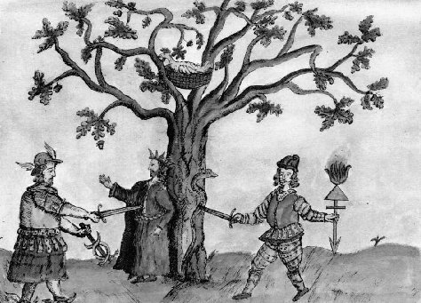<br>
            <font face="Arial,Helvetica"><font color="#000099"><font size="-1">FIGURE
                  XVIII</font></font></font> <i><font face="Arial,Helvetica"><font

                  color="#000099"><font size="-1"><br>
                    (Mercurius pénétrant, <b>Speculum veritatis</b>, XVII<sup>e
                    </sup>siècle)</font></font></font></i></p>
        </center>
        <p><font face="Arial,Helvetica"><font color="#000099">La condition
              nécessaire à cette union est la préparation du double Mercure. La
              figure ci-dessus montre la pénétration du Mercure [</font><font color="#660000"><font

                size="-1">Mercurius pénétrant l'homme double igné</font></font><font

              color="#000099">] et la fixation du Mercure par le soufre [</font><font

              color="#660000"><font size="-1">réaction de l'alkali fixe</font></font><font

              color="#000099">]. Le nid situé dans les hauteurs de l'arbre et
              l'oiseau montrent assez que le combat du fixe et du volatil passe
              par les sublimations philosophiques que Philalèthe a voilé de
              façon géniale par ses <a href="../original/philalethe-6.html">Aigles volantes</a>.
              Dans le parallèle Lapis-Christus, Jung :</font></font> </p>
        <p><font face="Arial,Helvetica"><font color="#000099">"</font><font color="#660000"><i><font

                  size="-1">... mais l'</font></i></font></font><font color="#660000"><font

              face="Symbol"><font size="+1">udwr qeion</font></font><font face="Arial,Helvetica"><i><font

                  size="-1"> [</font></i></font></font><font face="Arial,Helvetica"><i><font

                size="-1"><font color="#000099">eau divine - aqua permanens des
                  Latins : une note du traducteur vient à propos nous signaler
                  qu'il y a jeu de mot, l'expression signalant aussi : eau
                  dérivée du soufre], qui détermine la résurrection des morts,
                  ce dont la symbolique chrétienne de l'eau (aqua = spiritus
                  veritatis - l'eau = l'esprit de la vérité - baptême,
                  eucharistie</font><font color="#660000">) représente un
                  parallèle évident</font><font color="#000099">.</font></font></i><font

              color="#000099">"</font></font> </p>
        <p><font face="Arial,Helvetica"><font color="#000099">Lisez ce que nous
              écrivons dans la section du <font size="-1"><a href="../original/imitat-prec.html">Mercure</a></font>
              et vous verrez que cette « <i><font size="-1">résurrection</font></i>
              » ne traduit que la résurgence des oxydes, réincrudés et alliés en
              un nouveau corps, enchassé dans les résidus mercuriels : c'est le
              sceau vitreux d'Hermès dont bien peu d'Adeptes ont parlé pour
              l'évidente raison... qu'ils ne l'ont point vus, n'ayant pas réussi
              à finir la Grande coction. Dans un autre passage, Jung aborde la
              symbolique de la licorne dont nous parlons dans la section sur l'<b><i><font

                    size="-1"><a href="../original/philalethe-6.html">Introïtus</a></font></i></b>
              de Philalèthe ainsi que dans la section <font size="-1"><a href="../original/fontenay.html">Fontenay</a></font>
              :</font></font> </p>
        <blockquote><font face="Arial,Helvetica"><font color="#000099"><font size="-1">Pline
(298,
                Lib. VIII, chap. 21) décrit la nature monstrueuse de la licorne
                : un corps de cheval, des pattes d'éléphant, et une queue de
                sanglier. On trouve dans Ctesias (environ 400 av. J.-C.) une
                description fantastique qui pourrait bien avoir particulièrement
                intéressé les alchimistes : « D'après ce que j'ai entendu dire,
                en Inde, les ânes sauvages ne sont pas plus petits que les
                chevaux. Tout leur corps est blanc, leur tête est semblable à la
                pourpre, leurs yeux sont bleu foncé. Sur le front, ils ont une
                corne de près d'une coudée et demie de long : la partie
                inférieure de la corne est blanche, la partie supérieure
                pourpre, le milieu, par contre, est absolument noir. Il parait
                que les Indiens boivent dans ces cornes multicolores, non pas
                tous les Indiens, mais seulement ceux du plus haut rang ; dans
                ce but, les cornes sont entourées de bandes d'or, à intervalles
                réguliers, tout comme on pare de bracelets le bras splendide
                d'une statue. On dit que celui qui boit dans cette corne est</font></font></font>
          <font face="Arial,Helvetica"><font color="#000099"><font size="-1">immunisé
                contre les maux inguérissables, car il ne sera pas saisi de
                spasmes, ni ne sera tué par le poison, et on dit aussi que, s'il
                a bu auparavant quelque chose de malsain, il vomit et guérit »
                (1 5 3, p. 363). De même, Elien, 97, IV, 52 ; III, 41, et XVI,
                20. Dans le dernier passage Elien dit que l'animal est nommé «
                Kartazonon » en Inde : « La force de sa corne est invincible. Il
                affectionne les pâturages isolés, et vagabonde tout seul... Il</font></font></font>
          <font face="Arial,Helvetica"><font color="#000099"><font size="-1">recherche
la
                solitude. » Philostrate dans sa Vita Apollonii (382, livre III,
                chap. 2) rapporte que si l'on boit dans la corne d'une licorne,
                on devient, pour toute la journée, insensible au mal, on ne
                ressent plus les douleurs d'une blessure, de telle sorte qu'on
                peut marcher dans le feu et que le poison le plus violent ne
                nous fait aucun mal.</font></font></font></blockquote>
        <font color="#000099"><font face="Arial,Helvetica">Nous retrouvons là
            des allégories qui se rapportent au 3<sup>ème</sup> oeuvre ; la
            licorne, rappelons-le, voile le principe Soufre qui doit, par un
            phénomène d'accrétion, se lier au soufre blanc qui symbolise une
            matrice alumino-silicatée. S'il en était besoin, les couleurs
            évoquées par Pline nous confirmeraient l'origine hermétique de cette
            légende ; la couleur purpurine symbolise en effet la chaux
            métallique, l'</font><font face="Symbol"><font size="+1">ioV</font></font><font

            face="Arial,Helvetica"> des Grecs, le vert-de-gris tout autant que
            le venin du serpent que Jung évoque :</font></font>
        <p><font face="Arial,Helvetica"><font color="#000099">&nbsp;"</font><i><font

                color="#990033"><font size="-1">Ceux-ci [les Naassènes] disent
                  que le serpent est la substance humide, ainsi que Thalès de
                  Milet le disait aussi, et qu'aucune des créatures immortelles
                  ou mortelles animées&nbsp; ou inanimées n'existerait sans lui.</font></font></i><font

              color="#000099">"</font></font> </p>
        <p><font face="Arial,Helvetica"><font color="#000099">A cette occasion,
              nous signalerons une erreur possible d'interprétation de
              Jung&nbsp; à propos du serpent :</font></font> </p>
        <p><font face="Arial,Helvetica"><font color="#000099">"</font><i><font size="-1"><font

                  color="#990000">Hippolyte [</font><font color="#000099">Elenchos,
                  Leipzig, 1916</font><font color="#990000">], parlant de la
                  doctrine des Naassènes, dit que le serpent (naas) demeure en
                  toute chose et en toute créature. C'est d'après lui qu'elles
                  furent toutes nommés temple [</font></font></i></font><font color="#990000"><font

              face="Symbol"><font size="+1">naouV apo tou naaV</font></font><i><font

                face="Arial,Helvetica"><font size="-1"> : jeu de mot
                  intraduisible sur </font></font></i><font face="Symbol"><font

                size="+1">naaV</font></font><i><font face="Arial,Helvetica"><font

                  size="-1"> = le <b>serpent</b>, et </font></font></i><font face="Symbol"><font

                size="+1">naoV</font></font><font face="Arial,Helvetica"><i><font

                  size="-1"> = le <b>temple</b>...</font></i></font></font><font

            face="Arial,Helvetica"><font color="#000099">"</font></font> </p>
        <p><font color="#000099"><font face="Arial,Helvetica">Or, si </font><font

              face="Symbol, Wingdings"><font size="+1">naoV</font></font><font face="Arial,Helvetica">
              signifie bien le temple, il nous semble que </font><font face="Symbol"><font

                size="+1">naaV</font></font><font face="Arial,Helvetica">, qui
              renvoie à </font><font face="Symbol"><font size="+1">nauV</font></font><font

              face="Arial,Helvetica">, désigne plutôt le navire ou le vaisseau
              ce qui est en totale conformité avec la cabale hermétique :
              n'oublions pas que Zosime écrit :</font></font> </p>
        <p><font face="Arial,Helvetica"><font size="-1"><font color="#000080">"</font><i><font

                  color="#990033">Construis, mon ami, un&nbsp;<a  name="temple"></a><b>temple
                    </b>monolithe,
                  semblable
                  à la céruse, à l'albâtre, un temple qui n'ait ni commencement
                  ni fin, dans l'intérieur duquel se trouve une source de l'eau
                  la plus pure, brillante comme le soleil. C'est l'épée à la
                  main qu'il faut chercher à y pénétrer, car l'entrée est
                  étroite. Elle est gardée par un&nbsp;<a  name="dragon"></a>dragon
                  qu'on doit tuer et écorcher. En réunissant ses chairs et ses
                  os, il faut en faire un piédestal sur lequel tu monteras pour
                  arriver dans le <b>temple</b> où tu trouveras ce que tu
                  cherches. Car le prêtre, qui est l'homme d'airain que tu vois
                  assis près de la source, change de nature et se transforme en
                  homme d'argent, qui lui-même, si tu le désires, peut se
                  transformer en homme d'or...</font></i><font color="#000080">"</font></font></font>
        </p>
        <p><font face="Arial,Helvetica"><font color="#000080">Décidément, ce
              texte, qui date vraisemblablement du IIIe siècle, nous apparaît
              moderne, n'ayant rien à envier à ceux de Fulcanelli auxquels il
              fait écho à 17 siècles d'écart ! Car le temple désigne aussi le
              vaisseau hermétique et Fulcanelli a bien compris ce message en
              nous signalant fort à propos la fontaîne du vert-bois et son
              bateau qui transporte la Pierre dans un filet</font></font> <br>
          <br>
        </p>
        <center>
          <p><br>
            <font face="Arial,Helvetica"><font color="#000099"><font size="-1">FIGURE
                  XIX</font></font></font> <br>
            <i><font face="Arial,Helvetica"><font color="#000099"><font size="-1">(fontaîne
du
                    vert-bois et son vaisseau hermétique)</font></font></font></i></p>
        </center>
        <p><font color="#000099"><font face="Arial,Helvetica">Et se ne sera pas
              enfreindre les règles de la cabale hermétique que de rapprocher </font><font

              face="Symbol"><font size="+1">nauV</font></font><font face="Arial,Helvetica">
              de </font><font face="Symbol"><font size="+1">naw</font></font><font

              face="Arial,Helvetica"> [</font></font><font face="Arial,Helvetica"><font

              color="#990000"><font size="-1">déborder de petit lait, ruisseler</font></font><font

              color="#000099">] qui nous permet de déboucher sur la <font size="-1"><a

                  href="../original/heraldique.html#Ros%C3%A9e">rosée
                  de mai</a>. </font></font><font color="#000080">Fulcanelli&nbsp;
              :</font></font> </p>
        <p><i><font face="Arial,Helvetica"><font size="-1"><font color="#000080">"</font><font

                  color="#990033">Mais quelle est cette&nbsp;<a  name="fontaine"></a>fontaine
                  occulte ? De quelle nature est ce puissant dissolvant capable
                  de pénétrer tous les métaux... La mythologie l'appelle
                  Libéthra et nous raconte que c'était une fontaine de Magnésie,
                  laquelle avait, dans son voisinage, une autre source nommée la
                  Roche. Toutes deux sortaient d'une grosse roche dont la figure
                  imitait le sein d'une femme ; de sorte que l'eau semblait
                  couler de deux mamelles comme du lait... cette magnésie est
                  dite Lait de vierge...</font><font color="#000080">"</font></font></font></i>
        </p>
        <p><font face="Arial,Helvetica"><font color="#000080">Nous avons déjà
              donné cet extrait au début de notre quête mais l'énigme s'avérait
              ardue et notre explication, nous l'avouons volontiers, n'était
              guère convaincante. Ici, pourtant, le sens s'est éclairci comme si
              le <i><font size="-1"><a href="../original/fontenay.html">nettoyage
                    des écuries d'Augias</a></font></i> avait servi à donner
              plus d'éclat ; ces deux sources sont les cours de l'Alphée et du
              Pénée et le nom commun de la </font><font color="#006600">Magnésie</font><font

              color="#000080"> nous est à présent familier grâce à l'</font><font

              color="#006600">exotérisme</font><font color="#000080"> affiché
              par le nom même de la source. Selon Jung :</font></font> </p>
        <p><font face="Arial,Helvetica"><font color="#000080">"</font><font color="#990033"><i><font

                  size="-1">Cette définition du serpent concorde avec celle du
                  Mercurius alchimique qui est également une eau l' « eau divine
                  » [</font></i></font></font><font color="#990033"><font face="Symbol"><font

                size="+1">udwr qeion</font></font><font face="Arial,Helvetica"><i><font

                  size="-1">],
                  l'eau
                  perpétuelle [aqua permanens], l'humide, l'humidum radicale
                  [l'humidité radicale] et l'esprit de vie [spiritus vitae] qui
                  n'habite pas seulement les êtres vivants mais, en tant qu'âme
                  du monde [anima mundi] est aussi immanent en toutes choses...
                  Le serpent est aussi, comme la corne de la licorne, un
                  alexipharmaque et, de plus, le principe qui amène toutes
                  choses à la maturité et à la perfection. Nous connaissons déjà
                  la licorne comme symbole du Mercurius...</font></i></font></font><font

            face="Arial,Helvetica"><font color="#000080">"</font></font> </p>
        <p><font face="Arial,Helvetica"><font color="#000080">Nous retrouvons l'<a

                 name="Eau_divine_3"></a><b>Eau Divine</b> de Zosime en ce
              saisissant raccourci de l'oeuvre. Quant à l'humidité radicale, ce
              n'est autre que l'<u><font size="-1"><a href="../original/humide-radical.html">humide
radical
                    métallique</a></font></u> du <font size="-1"><a href="../original/cosmopolite-0.html">Cosmopolite</a></font>
              et de Fulcanelli et cette expression trouve son explication simple
              et immédiate : cette « <i><font size="-1">humidité</font></i> »
              est la forme sous laquelle se trouvent dissous les métaux ; c'est
              bien sûr une « <i><font size="-1">eau ignée</font></i> » mais
              qui, à la différence de l'eau vulgaire, ne se résoud pas - ou que
              peu - en vapeurs : l'adjectif « <i><font size="-1">radical</font></i>
              » est donc exact en ce que les métaux, sous l'empire du feu, ne
              peuvent être portés plus loins [</font><font color="#660000"><font

                size="-1">du moins avec les techniques que nous supposons avoir
                été celles des anciens alchimistes ; le lecteur n'a qu'à voir
                supra ce que nous pensons de la fusion froide</font></font><font

              color="#000080">].
              On se permettra de n'être pas d'accord avec l'interprétation de la
              licorne, envisagée comme principe Mercure par Jung : la licorne a
              toujours été considérée comme l'hiéroglyphe du principe Soufre
              ainsi qu'en témoigne cette admirable gravure du <b><i><font size="-1">De
                    Lapide Philosophorum</font></i></b> de Lambsprinck.</font></font>
          <br>
        </p>
        <center>
          <p><br>
            <font face="Arial,Helvetica"><font color="#000099"><font size="-1">FIGURE
                  XX</font></font></font> <br>
            <i><font face="Arial,Helvetica"><font color="#000099"><font size="-1">(3<sup>ème</sup>figure,
Lambsprinck,
                    Museum Hermeticum, 1677)</font></font></font></i></p>
        </center>
        <p><font face="Arial,Helvetica"><font color="#000099">Enfin, la dernière
              référence à Jung concernant l'eau divine nous vaut une relation
              inattendue avec le scarabée :</font></font> </p>
        <p><font face="Arial,Helvetica"><font color="#000099">"</font><i><font color="#990033"><font

                  size="-1">Le <b>scarabée</b> est rarement mentionné dans la
                  littérature alchimique, mais, parmi les textes anciens, on
                  peut le trouver dans le consilium coniugii : « Aucune eau ne
                  donne l'élixir hormis celle qui vient des scarabées de notre
                  eau. » L'aqua nostra (notre eau) n'est rien d'autre que l'aqua
                  divina (<b>eau divine</b>), c'est-à-dire le Mercurius.</font></font></i><font

              color="#000099">"</font></font> </p>
        <p><font face="Arial,Helvetica"><font color="#000099">Le scarabée est
              surtout connu comme symbole égyptien : c'est le symbole cyclique
              du soleil, signe de la résurrection. Il est souvent associé au
              dieu Khépri, le Soleil Levant et à ce titre, est congénère de
              Lucifer, l'étoile du Levant [</font><font color="#660000"><font size="-1">Vénus</font></font><font

              color="#000099">]. Du scarabée doit être aussi rapproché le
              bousier qui roule sa boule : il s'agit, là, de l'image de l'Oeuf
              du monde d'où naît la vie, la manifestation organisée. Il paraît
              que, dans un texte assez obscur du Livre de Chilam Balam, qui
              relate des traditions religieuse Maya, le scarabée apparaît comme
              la boue de la terre, appelé malgré tout à devenir divinité :</font></font>
        </p>
        <p><font face="Arial,Helvetica"><font color="#000099">"</font><i><font color="#990033"><font

                  size="-1">Alors se présentèrent les dieux scarabées, les
                  malhonnêtes, ceux qui ont mis en nous le péché, ceux qui
                  étaient la boue de la terre...Attention, parlez et vous serez
                  les dieux de cette terre.</font></font></i><font color="#000099">"</font></font>
        </p>
        <p><font face="Arial,Helvetica"><font color="#000099">Voilà un texte
              bien singulier ; pourtant il ne résiste pas à une analyse bâtie
              d'après la plus simple cabale hermétique : la boue de la terre
              figure l'argile [</font><font color="#660000"><font size="-1">autrement
appelée
                terre de Chio, terre de Samos</font></font><font color="#000099">]
              et on la voit, littéralement foulée aux pieds dans l'<font size="-1"><a

                  href="../original/atalanta-xlii.html">emblème XLII</a></font> de l'<b><i><font

                    size="-1"><a href="../original/atalanta-fugiens.html">Atalanta fugiens</a></font></i></b>.
              La divinité se rapporte au soufre ; n'oublions pas que la pierre
              du Levant, c'est aussi la dolomie [</font><font color="#660000"><font

                size="-1">calcaire saccharoïde, cf. <a href="../original/merc-nat.html#dolomies">De
la
                  nature de la pierre</a></font></font><font color="#000099">] ;
              rapprochons la pierre du Levant de la pierre de Jésus [<span style="color: #660000;">le
                gypse</span>] et nous ne serons plus éloignés de l'Eau divine de
              Zosime [</font><font color="#660000"><font size="-1">que l'on
                obtient en soumettant du sulfate de chaux, gypse, au contact de
                charbons ardents</font></font><font color="#000099">]. En grec,
              le scarabée, </font></font><font color="#000099"><font face="Symbol"><font

                size="+1">kanqaroV</font></font><font face="Arial,Helvetica">,
              s'il désigne l'escarbot est aussi, on l'a dit ailleurs, le signe
              sous la langue du boeuf Apis qui achève de nous conforter dans la
              relation que nous faisons entre ce coléoptère et Vénus [</font></font><font

            face="Arial,Helvetica"><font color="#660000"><font size="-1">en
                astrologie, la planète qui par tradition domine le Taureau</font></font><font

              color="#000099">]. il est également important de savoir que </font></font><font

            color="#000099"><font face="Symbol"><font size="+1">kanqaroV</font></font><font

              face="Arial,Helvetica"> est en proche assonance phonétique de </font><font

              face="Symbol"><font size="+1">kanqariV</font></font><font face="Arial,Helvetica">
              qui désigne divers insectes qui nuisent au blé ou à la vigne :
              nous les avons déjà rencontré sous d'autres aspects quand on a
              évoqué dans la section des <a href="../original/symb-dir-prim.html#k">Principes</a>
              la&nbsp;<a  name="nielle"></a>nielle du blé et la&nbsp;<a  name="cochenille"></a>cochenille
du
              chêne kermès. Il s'agit là d'un haut point de science. Les auteurs
              modernes se sont montrés prolixes sur l'Eau Divine même si elle
              n'est pas toujours désignée comme telle : ils la nomment eau
              céleste ou eau bénite, parfois eau benoîte. On devine la relation
              évidente avec la rosée de mai et l'eau céleste ou « de vertu
              céleste » pour employer la même expression que l'Adepte qui
              s'était présenté chez <a href="../original/chevreul-hoefer.html">Van Helmont</a>
              pour y accomplir une transmutation. Ainsi en parle E. Canseliet
              dans ses <b><i><font size="-1">Deux logis alchimiques</font></i></b>
              :</font></font> </p>
        <p><font face="Arial,Helvetica"><font color="#000099">"</font><i><font color="#990033"><font

                  size="-1">Le miracle, obtenu par le fils de Joas, est le même
                  que celui dont l'alchimiste bénéficie, grâce à son « office »
                  nocturne, et qui lui procure l'eau céleste indispensable à la
                  poursuite heureuse de ses durs efforts. Egalement appelée
                  l'eau benoîte par les bons auteurs, elle trouve sa réplique
                  dans l'eau bénite des églises, que l'ésotérisme... offre
                  parfois... en d'énormes coquilles...</font></font></i><font color="#000099">"</font></font>
        </p>
        <p><font face="Arial,Helvetica"><font color="#000099">L'eau benoîte
              désigne donc l'Eau Divine de Zosime qui est ce principe dissolvant
              des métaux, le <u>vrai&nbsp;<a  name="loup"></a>loup gris</u> de
              la tradition hermétique, l'<u>unique stibium</u> de Tollius qui
              luit dans l'obscurité comme on l'a vu <a href="#sulfure">supra</a>.
              Enfin, la coquille est l'objet qui voile à peine l'un des
              composants du feu secret, le même, précisons-le, que celui qui
              existe dans la nature et qui préside au métamorphisme de contact
              qui donne naissance aux&nbsp;<a  name="dolomies"></a><a href="../original/merc-nat.html#grenat">dolomies</a>,
              aux pegmatites à tourmalines ou aux péridotites grenatifères.
              C'est en effet du Mercure naturel que procèdent la genèse des
              grenats incorporés au sein des péridots : on observe souvent des
              couronnes de transformation en amphibole plus du spinelle ou
              anneaux chéliphitiques. La figure suivante montre une péridotite
              grenatifère où l'on distingue bien la gangue amphibolique qui lui
              a servi, pour ainsi dire, d'écrin : c'est un exemple de résine
              d'or, la véritable <b><i><font size="-1"><a href="../original/toyson.html">Toyson
                      d'or</a></font></i></b> de Trismosin.</font></font> <br>
          &nbsp;</p>
        <center>
          <p>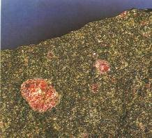<br>
            <font face="Arial,Helvetica"><font color="#000099"><font size="-1">FIGURE
                  XXI</font></font></font> <br>
            <i><font face="Arial,Helvetica"><font color="#000099"><font size="-1">(péridotite
grenatifère
                    : la Toison de Gédéon)</font></font></font></i></p>
        </center>
        <p><font face="Arial,Helvetica"><font color="#000099">Nous avons eu
              l'occasion dans la section sur la Nature de la Pierre, d'envisager
              le&nbsp;<a  name="péridot"></a><a href="../original/merc-nat.html#p%C3%A9ridot">péridot</a>
              et un minéral qui se nomme&nbsp;<a  name="serpentine"></a><a href="../original/merc-nat.html#serpentine">serpentine</a>.
              La conjonction des deux produit des serpentines colloïdes avec
              inclusions d'opales qui sont des produits d'altération du péridot.
              Le mélange de veines calcaires avec la serpentine commune
              constitue le&nbsp;<a  name="marbre"></a><u>marbre vert antique</u>
              . Le <u>fer chromé</u>, qui pénètre souvent la serpentine, lui
              donne quelquefois l'apparence d' une peau de serpent.</font></font>
        </p>
        <p><font face="Arial,Helvetica"><font color="#000099">Retournons au <font

                size="-1"><a href="#cercle%20ext%C3%A9rieur">manteau supérieur</a></font>
              de la porte alchimique. L'inscription du cercle extérieur est bien
              sûr à rapprocher d'un exergue explicatif à un cartouche que l'on
              trouve dans le <b><i><font size="-1">Jardinet hermétique</font></i></b>
              [</font><font color="#660000"><font size="-1">Stolcius, Francfort,
                1627</font></font><font color="#000099">] :</font></font> <br>
          &nbsp; <br>
          &nbsp;&nbsp;&nbsp; &nbsp;&nbsp;&nbsp; &nbsp;&nbsp;&nbsp;
          &nbsp;&nbsp;&nbsp; &nbsp;&nbsp;&nbsp; &nbsp;&nbsp;&nbsp;
          &nbsp;&nbsp;&nbsp; &nbsp;&nbsp;&nbsp; &nbsp;&nbsp;&nbsp;
          &nbsp;&nbsp;&nbsp; &nbsp;&nbsp;&nbsp; &nbsp;&nbsp;&nbsp;
          &nbsp;&nbsp;&nbsp; &nbsp;&nbsp;&nbsp; &nbsp;&nbsp;&nbsp;
          &nbsp;&nbsp;&nbsp; &nbsp;&nbsp;&nbsp; &nbsp;&nbsp;&nbsp;
          &nbsp;&nbsp;&nbsp; &nbsp;&nbsp;&nbsp; &nbsp;&nbsp;&nbsp;
          &nbsp;&nbsp;&nbsp; &nbsp;&nbsp;&nbsp; &nbsp;&nbsp;&nbsp; 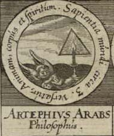</p>
        <b><font face="Arial,Helvetica"><font color="#660000"><font size="-1">&nbsp;&nbsp;&nbsp;
                &nbsp;&nbsp;&nbsp; &nbsp;&nbsp;&nbsp; &nbsp;&nbsp;&nbsp;
                &nbsp;&nbsp;&nbsp; &nbsp;&nbsp;&nbsp; &nbsp;&nbsp;&nbsp;
                &nbsp;&nbsp;&nbsp; &nbsp;&nbsp;&nbsp; &nbsp;&nbsp;&nbsp;
                &nbsp;&nbsp;&nbsp; &nbsp;&nbsp;&nbsp; &nbsp;&nbsp;&nbsp;
                &nbsp;&nbsp;&nbsp; SAPIENTIA
                MUNDI CIRCA TRIA VERSATUR ANIMAM, CORPUS ET SPIRITUM</font></font></font></b>
        <center>
          <p><b><font face="Arial,Helvetica"><font color="#660000"><font size="-1">LA
SAGESSE
                    DU MONDE SE TROUVE AUTOUR DES TROIS L'ÂME, LE CORPS ET
                    L'ESPRIT</font></font></font></b></p>
        </center>
        <p><font face="Arial,Helvetica"><font color="#000099">Nous refermons
              ainsi l'examen du manteau supérieur, en citant les trois principes
              fondamentaux de l'alchimie qui se rapportent à des substances tout
              à fait caractérisées, qui permettent, selon notre hypothèse, de
              pouvoir relire l'alchimie avec un regard rationnel et, nous
              l'espérons, pas seulement sec.</font></font> <br>
          &nbsp; </p>
        <p><br>
        </p>
        <center>
          <p><a  name="5)-"></a><b><font face="Arial,Helvetica"><font color="#990000">5)-
                  la&nbsp;<a  name="porte"></a>porte alchimique de la&nbsp;<a  name="villa"></a>villa
                  Palombara</font></font></b></p>
        </center>
        <p><font face="Arial,Helvetica"><font color="#000099">Nous avons terminé
              l'examen du manteau de la porte alchimique de la villa Palombara
              et nous sommes en mesure d'aborder les inscriptions gravées sur
              les montants de la porte.</font></font> <br>
          &nbsp; </p>
        <center>
          <p>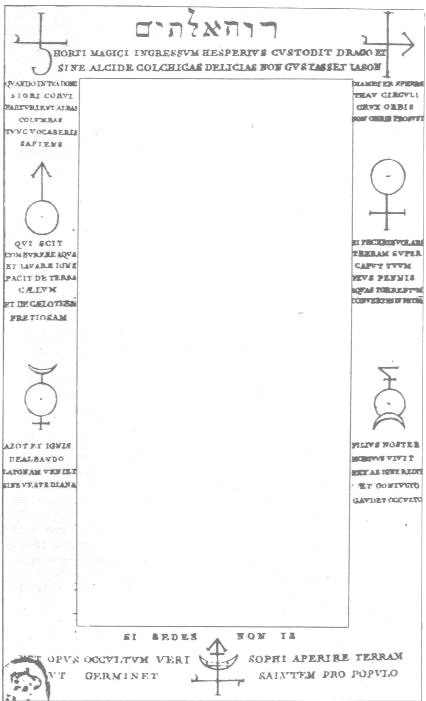<br>
            <font face="Arial,Helvetica"><font color="#000099"><font size="-1">FIGURE
                  XXII</font></font></font> <br>
            <i><font face="Arial,Helvetica"><font color="#000099"><font size="-1">(la
porte
                    alchimique : inscriptions des montants et symboles)</font></font></font></i></p>
        </center>
        <p><font face="Arial,Helvetica"><font color="#000099"><br>
              Nous commencerons cet examen par l'analyse de l'inscription du
              trumeau supérieur :</font></font> </p>
        <p><a  name="a)-"></a><font face="Arial,Helvetica"><font color="#000099"><b>a)-</b><u>le&nbsp;<a

                   name="dragon_1"></a>dragon</u></font></font> <br>
          &nbsp; </p>
        <p><br>
        </p>
        <center>
          <p><a  name="1ere phrase"></a><b><font face="Arial,Helvetica"><font color="#660000"><font

                    size="-1">I. HORTI MAGICI INGRESSUM HESPERIUS CUSTODIT DRACO
                    ET SINE ALCIDE COLCHICAS DELICIAS NON GUSTASSET IASON</font></font></font></b>
          </p>
          <p><b><font face="Arial,Helvetica"><font color="#660000"><font size="-1">I.
LE
                    DRAGON GARDE L'ENTRÉE DU JARDIN MAGIQUE d'HESPERUS ET SANS
                    ALCIDE JASON N'EÛT PAS GOUTÉ LES DÉLICES DE&nbsp;<a  name="COLCHIDE"></a>COLCHIDE</font></font></font></b></p>
        </center>
        <p><font face="Arial,Helvetica"><font color="#000099">Ce texte rappelle
              celui de Zosime : le combat d'un dragon qu'il faut tuer et <u>écorcher</u>,
              c'est-à-dire dont il faut séparer l'écorce du noyau ; sentence de
              Basile Valentin : «<i> </i></font><font color="#660000"><font size="-1"><i>Brûle
                  tes livres et blanchit le laiton</i> </font></font><font color="#000099">».&nbsp;
              La phrase traduite avec le mot livre [</font><font color="#660000"><font

                size="-1">liber</font></font><font color="#000099">] dont
              l'autre acception, <u>écorce</u>, convient beaucoup plus : « </font><i><font

                color="#660000"><font size="-1">rompez ou rejetez l'<a  name="écorce"></a>écorce</font></font></i><font

              color="#000099"> » ; c'est du reste ce que préconise de faire
              Philalèthe :</font></font> </p>
        <p><i><font face="Arial,Helvetica"><font size="-1"><font color="#000099">"</font><font

                  color="#990033">Laisse la coquille et prends le noyau,
                  purge-le à trois reprises par le feu et le sel, ce qui se fera
                  aisément si Saturne a regardé sa propre beauté dans le Miroir
                  de Mars.</font><font color="#000099">"</font></font></font></i>
        </p>
        <p><font face="Arial,Helvetica"><font color="#000099">Il s'agit
              d'une phase de l'oeuvre où il faut rejeter les fèces et garder la
              partie vitale ; mais nous savons que les alchimistes, à l'instar
              des fugues de Bach, marchent à reculon et rétrogradent : en
              inversant la proposition, nous trouvons par conséquent qu'il faut
              conserver les fèces et rejeter le noyau. Ces fèces nous sont à
              présent bien connues : il s'agit du Caput obtenu à partir du
              traitement de l'huile de tartre par de l'esprit de vitriol mais il
              faut bien se garder de considérer cela comme absolu : il existe de
              très nombreux procédés de préparation de l'Arcanum duplicatum dont
              nous parlons ailleurs ; signalons que les envieux l'appellent sel
              de Seignette ou encore foie de soufre. C'est une séparation qu'il
              faut effectuer ici et il s'agit, au vrai, de la première
              putréfaction. L'inscription en hébreu que nous apercevons sur le
              linteau de la porte pourait nous préciser, si le besoin s'en
              faisait sentir, le sens exact de l'interprétation de la <a href="#1ere%20phrase">phrase
                I</a>.</font></font> <font face="Arial,Helvetica"><font color="#000099">E.
              Canseliet, dans ses Deux logis alchimiques, nous précise que cette
              phrase en hébreu « </font><i><font color="#660000"><font size="-1">RUACH
                  ELOHIM</font></font></i><font color="#000099"> »
              signifie&nbsp; « </font><i><font color="#660000"><font size="-1">l'Esprit
de
                  Dieu</font></font></i><font color="#000099"> ». Voici
              l'appareillage qui permet de séparer l'Esprit de Dieu.</font></font>
        </p>
        <center>
          <p>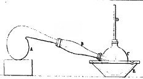<br>
            <font face="Arial,Helvetica"><font color="#000099"><font size="-1">FIGURE
                  XXIII</font></font></font> <br>
            <i><font face="Arial,Helvetica"><font color="#000099"><font size="-1">(la
séparation
                    initiale)</font></font></font></i></p>
        </center>
        <p><font face="Arial,Helvetica"><font color="#000099">On joue ici
              doublement sur les mots Esprit et Dieu. L'esprit, au sens chimique
              du terme, est un gaz et Dieu, par cabale, est synonyme de soufre.
              il faut donc séparer un gaz d'une certaine substance renfermant du
              soufre ; cette substance ne peut être qu'un sulfate, un sulfure ou
              un mélange [</font><font color="#660000"><font size="-1">foie de
                soufre</font></font><font color="#000099">]. Nous donnons un
              extrait de la section sur le tartre vitriolé qui permettra
              d'éclaircir l'énigme :</font></font> </p>
        <p><font face="Arial,Helvetica"><font color="#000099">Voici comment N.
              Lémery décrit le procédé de fabrication de l'eau-forte :</font></font>
        </p>
        <p><i><font face="Arial,Helvetica"><font size="-1"><font color="#000099">"
                </font><font color="#990033">Prenez et mêlez exactement deux
                  livres de&nbsp;<a  name="salpêtre"></a><b>salpêtre</b> de
                  houssage et six livres d'<b>argile</b> séchée ; mettez ce
                  mélange dans une grande cornue de grès ou de verre lutée, que
                  vous placerez dans un fourneau à réverbère clos ; adaptez-y un
                  grand ballon ou récipient, et donnez dessous un très petit feu
                  pendant quatre à cinq heures, afin de faire sortir tout le
                  phlegme qui distillera goutte à goutte : lorsque vous verrez
                  qu'il ne distillera plus rien, <b>jetez comme inutile ce qui
                    se trouvera dans le récipient</b>, et l'ayant réadapté, il
                  faut luter les jointures et augmenter le feu peu à peu
                  jusqu'au second degré ; il sortira des esprits qui rempliront
                  le ballon de nuages blancs : entretenez alors le feu jusqu'à
                  ce qu'il n'en sorte plus, l'opération sera faite en quatorze
                  heures. Les vaisseaux étant refroidis, délutez les jointures ;
                  renversez votre <b>esprit de nitre</b> dans une bouteille de
                  grès, laquelle vous boucherez avec de la cire.</font><font color="#000099">
                  "</font></font></font></i> </p>
        <p><font face="Arial,Helvetica"><font color="#000099">D'un côté, nous
              avons <u>Dieu</u> : c'est le composé inutile, le <i>Caput
                mortuum</i> de l'Aqua sicca. Toute une partie de
              l'interprétation de l'alchimie de C.G. Jung repose sur cette
              confusion [</font><font color="#660000"><font size="-1">nous
                voulons parler du parallèle Lapis-Christus, in <b><i>Psychologie
et
                    Alchimie</i></b>, pp. 441-543</font></font><font color="#000099">],
soigneusement
              entretenue par les alchimistes, entre Dieu [</font></font><font color="#000099"><font

              style="color: rgb(102, 0, 0);" face="Symbol"><font size="+1">qeioV</font></font><font

              face="Arial,Helvetica">] et le soufre [</font><font style="color: rgb(102, 0, 0);"

              face="Symbol"><font size="+1">qeion</font></font><font face="Arial,Helvetica">].
              Nous avons vu par ailleurs que les alchimistes qualifient souvent
              de « sel admirable » leur précieux composé ; rien d'étonnant
              puisque admirable se dit en grec également </font><font face="Symbol"><font

                size="+1">qeioV</font></font><font face="Arial,Helvetica"> [</font></font><font

            face="Arial,Helvetica"><font color="#660000"><font size="-1">5<sup>ème</sup>
                acception du terme dans Bailly</font></font><font color="#000099">].
Il
              existe même un mot, homonyme vrai et synonyme spirituel : </font></font><font

            color="#000099"><font face="Symbol"><font size="+1">qeiow</font></font><font

              face="Arial,Helvetica"> [</font></font><font face="Arial,Helvetica"><font

              color="#990000"><font size="-1">purifier par le soufre ; consacrer
                aux dieux</font></font><font color="#000099">].
              De l'autre côté, l'Esprit : il s'agit de l'<i><font size="-1">aqua
                  sicca</font></i> qui se dégage dans le ballon. Il n'est
              d'aucune utilité dans l'oeuvre.</font></font> </p>
        <p><a  name="b)-"></a><font face="Arial,Helvetica"><font color="#000099"><b>b)-<a

                   name="Saturne"></a></b><u>Saturne</u> [</font><font color="#660000"><font

                size="-1">cf. aussi <b><i><a href="../original/philalethe-6.html#lune_2">Introïtus,
                      VI</a></i></b></font></font><font color="#000099">)</font></font>
        </p>
        <p><br>
        </p>
        <center>
          <p>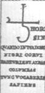</p>
          <p><a  name="deuxième phrase"></a><b><font face="Arial,Helvetica"><font

                  color="#660000"><font size="-1">II. QUANDO IN TUA DOMO NIGRI
                    CORVI PARTURIENT ALBAS COLUMBAS TUNC VOCABERIS SAPIENS</font></font></font></b>
          </p>
          <p><b><font face="Arial,Helvetica"><font color="#660000"><font size="-1">QUAND,
DANS
                    TA MAISON, LES NOIRS CORBEAUX AURONT ENFANTÉ LES
                    BLANCHES&nbsp;<a  name="COLOMBES"></a>COLOMBES, ALORS TU
                    SERAS NOMMÉ LE SAGE</font></font></font></b></p>
        </center>
        <p><font face="Arial,Helvetica"><font color="#000099">Symbole de
              Saturne-Cronos. La légende nous précise qu'il s'agit de la phase
              de l'oeuvre qui se rapporte à la putréfaction. Mais laquelle ? On
              sait que la couleur noire se distingue à deux niveaux de l'oeuvre
              alchimique : au début lors de la séparation initiale puis lors du
              3<sup>ème</sup> oeuvre, au moment de l'infusion dans le Mercure
              des Soufres blanc et rouge. Il y a en fait deux Saturne qu'il faut
              distinguer : le Saturne romain et le Cronos grec. Très vite
              assimilé au dieu grec Cronos, pour des raisons qui demeurent
              obscures, Saturne a perdu rapidement ses attributs et son
              caractère italique : il s'agissait du Dieu des Semailles et des
              Grains, parfois même de la Vigne et il est représenté avec la
              faucille du moissonneur et la serpette du vigneron. Il nous
              apparaît donc sous des traits diamétralement opposés à ceux du
              Cronos grec et symbolise plutôt la 2<sup>ème</sup> partie du 3<sup>ème</sup>
              oeuvre, où apparaît la Pierre. Le Cronos grec est le plus jeune
              des fils d'Ouranos et de Gaïa : c'est un Titan. Nous avons dit
              ailleurs [</font><font color="#660000"><font size="-1">section des
                <a href="../original/gardes-corps.html">Gardes du corps</a>, § <a href="../original/gardes-corps.html" class="lien-repare" title="ancre absente de la page d'origine : lien ramené en haut de page">Prudence</a></font></font><font

              color="#000099">] que, pour s'assurer la toute puissance, il
              n'hésita pas à mutiler son père et à s'unir à sa soeur Rhéa. Les
              chimistes reconnaissent le plomb en Saturne et E. Canseliet nous
              assure que le Mercure peut être découvert dans le « plomb des
              Sages ». Artéfius, de son côté, nous dit que « l'antimoine est des
              parties de Saturne » ; nous avons cité E. Chevreul [</font><font color="#660000"><font

                size="-1">section sur la critique d'<a href="../original/liber-artephius.html">Artefius</a></font></font><font

              color="#000099">] qui traduit le texte par « </font><i><font color="#990033"><font

                  size="-1">Plumbum enim de parte Saturni</font></font><font color="#000099">
              </font></i><font color="#000099">». C.G. Jung, lui, considère que
              Saturne est le Mercurius senex, qu'il cuit dans le bain jusqu'à ce
              que l'esprit, la colombe blanche, s'élève de lui ainsi que
              l'exprime la figure suivante. Pour les</font></font> </p>
        <center>
          <p>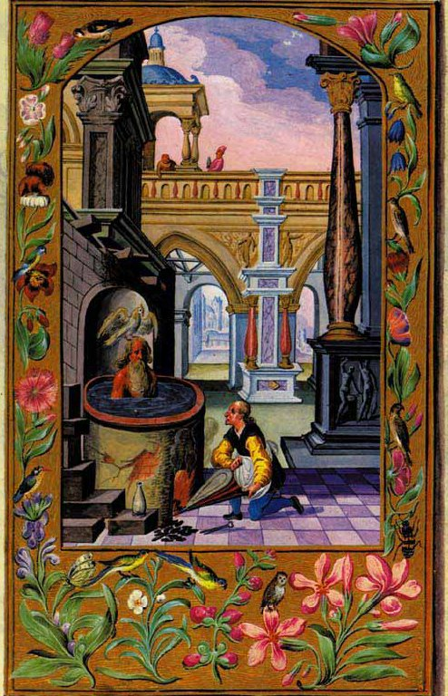<br>
            <font face="Arial,Helvetica"><font color="#000099"><font size="-1">FIGURE
                  XXIV</font></font></font> <br>
            <i><font face="Arial,Helvetica"><font color="#000099"><font size="-1">(<a

                      href="../original/toyson.html">Splendor Solis</a>, Trismosin, planche
                    XI, 1582)</font></font></font></i></p>
        </center>
        <p><font face="Arial,Helvetica"><font color="#000099">philosophes
              hermétiques, Saturne symbolise assurément la couleur noire, celle
              de la matière dissoute et putréfiée, ou encore le cuivre commun [</font><font

              color="#660000"><font size="-1">il peut s'agir aussi de la
                couperose, sulfate de cuivre</font></font><font color="#000099">],
              le premier des métaux, ou enfin le vitriol azoqué de <font size="-1"><a

                  href="../original/lulle-clavicule.html">Raymond Lulle</a></font>. Quoi
              qu'il en soit, le symbolisme de Saturne va toujours de pair avec
              l'idée d'une séparation. En astrologie, Saturne domine les<font size="-1"><a

                  href="../original/zodiaque-alchimique.html"> signes zodiacaux</a></font>
              du Capricorne et du Verseau. Le Capricorne exprime la patience, la
              prudence qui s'en rapproche, Vertus que nous avons examinées dans
              une section spéciale [</font><font color="#660000"><font size="-1">cf.
                <a href="#" title="lien mort dans l'archive">Gobineau</a> sur les médaillons des
                Vices et des Vertus du portail central de Notre-Dame ; cf.
                encore le <a href="../original/tarot-alchimie.html">Tarot alchimique</a> ;
                cf. enfin <a href="../original/gardes-corps.html">Gardes du corps</a>, § <a

                  href="../original/gardes-corps.html" class="lien-repare" title="ancre absente de la page d'origine : lien ramené en haut de page">Prudence</a></font></font><font

              color="#000099">]. On peut retrouver Saturne-Cronos sur la <font

                size="-1"><a href="#" title="lien mort dans l'archive">planche 7</a></font> du <b><i><font

                    size="-1"><a href="../original/mutus-liber.html">Mutus Liber</a></font></i></b>
              où il est représenté <u>ardent</u> et dévorant sa progéniture.
              Nous rapprocherions volontiers cette image de celle de Méduse,
              tenant en son sein le cheval Pégase. Du coup, nous trouvons
              l'exacte image de la séparation initiale et nous pouvons la
              rapprocher d'une simple expérience de chimie. Pour cela, nous
              allons reprendre la <b><i><font size="-1">Chymie expérimentale et
                    raisonnée</font></i></b> d'Antoine Baumé :</font></font> </p>
        <blockquote><b><i><font face="Arial,Helvetica"><font color="#000099"><font

                    size="-1">Sur les Pierres et Pierres gypseuses, connues sous
                    le nom de Pierres à plâtre</font></font></font></i></b> <br>
          <font face="Arial,Helvetica"><font color="#000099"><font size="-1">Les
                substances que nous examinons présentement sont des sels
                vitrioliques à base de terres calcaires, formées par la Nature,
                absolument semblables aux sélénites... Le gypse de Montmartre,
                près de Paris, est d'une transparence jaunâtre ; il est
                cristallisé en lames minces appliquées les unes sur les autres,
                et que l'on peut lever par feuillets avec la lame d'un couteau.
                Les masses de gypse sont composées de deux triangles allongés,
                séparés en deux par une ligne de suture, formant un triangle
                allongé dont le côté opposé à la base est en angle rentrant
                d'environ 45 à 50°. On trouve dans les Pyrénées du gypse
                semblable à celui de Montmartre, mais qui est très pur et
                absolument sans couleur.</font></font></font> <br>
          <br>
          <center>
            <p>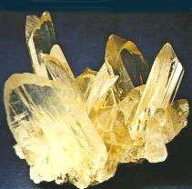<br>
              <font face="Arial,Helvetica"><font color="#000099"><font size="-1">FIGURE
                    XXV</font></font></font> <br>
              <i><font face="Arial,Helvetica"><font color="#000099"><font size="-1">(macles
en
                      « fer de lance » de gypse, Sicile)</font></font></font></i></p>
          </center>
          <p><font face="Arial,Helvetica"><font color="#000099"><font size="-1">Les
pierres
                  avec lesquelles on fait le plâtre à Montmartre, n'ont aucune
                  figure déterminée... mais elles sont plus pesantes : on les
                  voit parsemées de petits points brillants qui sont des
                  portions de petits cristaux de gypse, parmi lesquels on en
                  distingue d'entiers qui sont très réguliers...Le <b>gypse</b>,
                  l'<b>albâtre</b> et la pierre à plâtre exposés au feu pour les
                  faire rougir seulement, perdent l'eau de leur cristallisation,
                  en faisant un peiti bruit ou pétillement que l'on nomme
                  décrépitation. Le gypse décrépite plus que les autres pierres
                  de même espèce. Toutes ces pierres deviennent d'un très beau
                  blanc opaque. Le gypse se divise pendant cette opération en
                  feuillets extrêmement minces... Le gypse, pendant la
                  calcination, perd fort peu de son acide [vitriolique], et la
                  terre calcaire se réduit en chaux qui, à cause de son union
                  avec l'acide vitriolique, a des effets différents de la chaux
                  vive... Ces pierres... exhalent une légère odeur de foie de
                  soufre, et elles absorbent une très grande quantité d'eau.</font></font></font></p>
        </blockquote>
        <font face="Arial,Helvetica"><font color="#000099">De tout cela, que
            conclure ? Saturne se rattache au dissolvant qui permet d'assurer la
            dissolution du corps ; la difficulté de lui trouver une
            correspondance physique [en terme de chimie] vient du fait que
            Saturne-Cronos symbolise davantage l'idée d'une « action », en
            l'occurence celle d'une dissolution radicale des corps. Néanmoins,
            nous pensons aussi qu'il se rattache - précisément par ce concept de
            séparation - au travail lors du 1<sup>er</sup> oeuvre. Au vrai,
            Saturne projette son ombre sur le Grand oeuvre en entier et
            l'étudiant fera bien de méditer ces paroles, extraites des <b><i><font

                  size="-1"><a href="../original/emblemes.html">Douze
                    Clefs de philosophie</a></font></i></b> attribuées à B.
            Valentin:</font></font>
        <p><font face="Arial,Helvetica"><font color="#000099">"</font><i><font color="#990033"><font

                  size="-1">C'est pourquoi, si tu veux travailler par nos corps,
                  prends le loup gris très avide qui, par l'examen de son nom,
                  est assujetti au belliqueux <b>Mars</b>, mais, par sa race de
                  naissance est le fils du vieux <b>Saturne</b>...</font></font></i><font

              color="#000099">"</font></font> </p>
        <p><font face="Arial,Helvetica"><font color="#000099">Philalèthe, <b><i><font

                    size="-1"><a href="../original/introitus.html">Introïtus</a></font></i></b>
              :</font></font> </p>
        <p><font face="Arial,Helvetica"><font color="#000099">"</font><i><font size="-1"><font

                  color="#990033">Laisse la coquille et prends le noyau,
                  purge-le à trois reprises par le feu et le sel, ce qui se fera
                  aisément si <b>Saturne</b> a regardé sa propre beauté dans le
                  Miroir de <b>Mars</b>.</font><font color="#000099">"</font></font></i></font>
        </p>
        <p><font face="Arial,Helvetica"><font color="#000099">Nous ajouterons
              que le symbole de Saturne, tel qu'on le voit sur la porte
              alchimique, est assez singulier et on a l'impression qu'il est
              constitué de deux parties ; la 1<sup>ère</sup>, verticale,
              ressemble à une faux [</font><font color="#660000"><font size="-1">nous
                avons examiné son symbolisme dans la section du <a href="../original/st-gregoire-vievre.html#add_2">rébus
de
                  saint-Grégoire-sur-Vièvre</a></font></font><font color="#000099">].
La
              2<sup>ème</sup>partie, verticale, nous est familière sans qu'on
              sache exactement pourquoi. On peut retrouver cette graphie étrange
              dans un ouvrage collectif remarquable : <b><i><font size="-1">l'Alchimie
:
                    Histoire, Technologie, Pratique</font></i></b> [</font><font

              color="#660000"><font size="-1">Pierre Belfond, 1972</font></font><font

              color="#000099">] p. 185 dont nous extrayons le tableau suivant
              qui nous éclairera :</font></font> </p>
        <center>
          <p>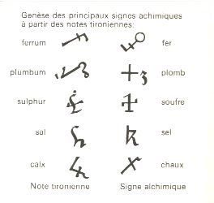<br>
            <font face="Arial,Helvetica"><font color="#000099"><font size="-1">FIGURE
                  XXVI</font></font></font></p>
        </center>
        <p><font face="Arial,Helvetica"><font color="#000099">Deux symboles
              montrent d'étroits rapports avec celui de la porte de la villa
              Palombara : sal et calx. Que l'on croise le symbole de la chaux à
              droite avec celui du sel, à gauche, et l'on trouvera une image
              voisine de celle qui surplombe le 2<sup>ème</sup> commentaire. Il
              reste maintenant à expliquer le rapport entre les notes&nbsp;<a  name="tironiennes"></a>tironiennes
et
              les symboles alchimiques. Il s'agit d'une sorte de sténographie,
              inventée par Marcus Tullius Tiro [</font><font color="#660000"><font

                size="-1">Tiron</font></font><font color="#000099">], affranchi
              de Cicéron, et qui fut très employée jusqu'au XI<sup>e</sup>
              siècle. Comme on le voit, la note tironienne de calx est semblable
              au symbole astrologique de Jupiter et celui du sel, à Saturne.
              Nous réserveons notre jugement sur ce point de science et
              laisserons au lecteur le soin d'examiner la possibilité que les
              alchimistes, comme Fulcanelli le pensait, aient voilé la
              signification hermétique des symboles astraux et zodiacaux.</font></font>
        </p>
        <p><a  name="c)-"></a><font face="Arial,Helvetica"><font color="#000099"><b>c)-<a

                   name="Jupiter"></a></b><u>Jupiter</u></font></font> </p>
        <p><br>
        </p>
        <center>
          <p>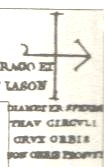</p>
          <p><a  name="troisieme phrase"></a><b><font face="Arial,Helvetica"><font

                  color="#660000"><font size="-1">III. DIAMETER SPHERAE THAV
                    CIRCVLI CRVX ORBIS NON ORBIS PROSVNT</font></font></font></b>
          </p>
          <p><b><font face="Arial,Helvetica"><font color="#660000"><font size="-1">LE
DIAMÈTRE
                    DE LA SPHÈRE, LE&nbsp;<a  name="THAU"></a>THAU DE LA
                    CIRCONFÉRENCE, LA CROIX DU CERCLE, NON LE CERCLE, SONT
                    UTILES</font></font></font></b></p>
        </center>
        <p><font face="Arial,Helvetica"><font color="#000099">Voila un rébus
              spirituel qui fait grand honneur au maître qui l'a conçut ; en une
              phrase, nous passons de la troisième à la seconde, puis à la
              première dimension ; en même temps sont évoqués trois symboles
              qui, pour être compris parfaitement, nécessitent que l'on revienne
              sur un chapitre du <i>Mystère des cathédrales</i> de Fulcanelli,
              intitulé la <i>Croix cyclique d'Hendaye</i>, quelque peu négligé,
              semble-t-il, par les critiques modernes. Ce chapitre est analysé
              dans la section sur les <font size="-1"><a href="../original/gardes-corps.html" class="lien-repare" title="ancre absente de la page d'origine : lien ramené en haut de page">Gardes
du
                  corps</a></font>, à laquelle nous renvoyons le lecteur. Nous
              ajouterons ici que le diamètre donne accès au rayon, que le thau
              renvoie à la grande inconnue <b><font size="+1">X</font></b> du
              problème en même temps qu'au symbolisme de la galette des rois [</font><font

              color="#660000"><font size="-1">cf. <b><i>Myst</i></b>.,
                p. 190</font></font><font color="#000099">] et qu'enfin, la
              croix, par sa relation évidente au <a href="../original/gardes-corps.html" class="lien-repare" title="ancre absente de la page d'origine : lien ramené en haut de page">Christ</a>,
              permet de nommer l'arcane voilé par le Bélier, comme nous
              l'expliquons dans la même section. Le Thau ne renvoie pas au tau
              grec (</font></font><font color="#000099"><font face="Symbol"><font

                size="+2">t</font></font><font face="Arial,Helvetica">) mais
              bien à la dernière lettre de l'alphabet hébreu, quand on le
              compare au&nbsp;<a  name="taw"></a><b>taw</b> des alphabets
              sémitiques occidentaux [</font></font><font face="Arial,Helvetica"><font

              color="#990000"><font size="-1">phénicien archaïque, écriture
                paléo-hébraïque et alphabet italique : Ombrien</font></font><font

              color="#000099">]. Quant au signe inscrit dans le <u>travertin</u>
              ou le <u>marbre</u> de la porte alchimique [</font><font color="#990000"><font

                size="-1">cf. E. Canseliet, <b><i>Deux
                    Logis alchimiques</i></b></font></font><font color="#000099">],
              il montre une barre verticale et une flèche ansée. D'après
              Fulcanelli, toute barre verticale symboliserait le Soufre ; quant
              à la flèche, elle fait évoquer celle du Sagittaire dont tout
              étudiant en science d'Hermès sait le rapport qui le lie à Jupiter.
              Cette flèche, quoi qu'il en soit, est congénère de l'épée du
              chevalier qui doit tuer et écorcher le dragon de Colchide. Elle
              évoque la barre horizontale du graphisme précédent dont on a vu
              qu'il symbolisait sans doute du gypse. Il s'agirait donc d'une
              opération à faire à partir du gypse, mais laquelle ? Les anciens
              alchimistes sont restés muets sur ces opérations...Seul peut-être
              Saulat des Marets, dans son <b><i><font size="-1"><a href="../original/mutus-liber.html">Mutus
                      Liber</a></font></i></b>, semble nous avoir donné quelques
              pistes avec sa planche XIV</font></font> <br>
          &nbsp;</p>
        <center>
          <p><br>
            <font face="Arial,Helvetica"><font color="#000099"><font size="-1">FIGURE
                  XXVII</font></font></font> <br>
            <i><font face="Arial,Helvetica"><font color="#000099"><font size="-1">(Mutus
Liber,
                    <a href="../original/mutus-liber.html#planche_14">planche 14</a>)</font></font></font></i></p>
        </center>
        <p><font face="Arial,Helvetica"><font color="#000099">On voit très
              nettement que la gravure est composée de 4 parties ; la dernière
              partie, en bas, montre le couple alchimique : l'homme et le femme
              pointent du doigt des objets situés au-dessus d'eux : des tamis.
              Quelle est donc l'opération qui nécessite des <u>tamis</u> [</font><font

              color="#660000"><font size="-1">ou des filtres</font></font><font

              color="#000099">] et se rapporte au <u>gypse</u> ? Et quand cela
              serait, à quoi peut donc bien nous servir le gypse ? A ces
              questions,&nbsp;<a  name="Lavoisier"></a><b><font size="-1"><a href="../original/humide-radical.html">Lavoisier</a></font></b>
              va nous répondre. Tout le monde sait qu'Antoine Laurent De
              Lavoisier [1743-1794] est le père de la chimie moderne : il a
              introduit l'usage systématique de la balance [</font><font color="#660000"><font

                size="-1">que
                nous apercevons sur la figure XXVII</font></font><font color="#000099">]
              et il a, notamment, élucidé le mécanisme de l'oxydation des métaux
              au contact de l'air. Parmi ses nombreux travaux, se trouvent deux
              Mémoires sur le gypse, qu'il a adressé à l'Académie des Sciences,
              en 1763, en tant que Savant étranger [</font><font color="#990000"><font

                size="-1">il est devenu membre de l'Académie des sciences en
                1768</font></font><font color="#000099">].</font></font> </p>
        <blockquote><font face="Arial,Helvetica"><font color="#000099">&nbsp;<b><i><font

                    size="-1">Extrait de deux Mémoires sur le gypse, lus à
                    l'Académie des Sciences, l'un le 27 février 1765, l'autre le
                    19 mars 1766</font></i></b></font></font>
          <p><font face="Arial,Helvetica"><font color="#000099"><font color="#000099">Le
gypse
                  que j'ai employé dans mes expériences est la pierre
                  spéculaire, le gypse cristallisé de Montmartre [<a  name="Lapis"></a></font><i><font

                    color="#660000">Lapis specularis Plinii agricolae</font></i><font

                  size="-1">]... La pierre spéculaire, grossièrement pilée dans
                  un mortier, conserve encore une forme régulière...si l'on
                  pousse plus loin l'opération, on parvient à n'avoir plus
                  qu'une poussière très blanche.. .La pierre spéculaire, ainsi
                  réduite en poudre et passée au tamis de soie, mise ensuite
                  dans un chaudron de fer, sur le feu, acquiert, par un degré de
                  chaleur assez doux, plusieurs propriétés des liquides ; elle
                  se met de niveau comme eux; comme eux, elle offre très-peu de
                  résistance aux corps qu'on y plonge; quelquefois même on voit
                  à sa surface un mouvement semblable à celui de l'eau qui
                  bouillonne. Ce mouvement n'est point occasionné, comme on
                  pourrait le penser d'abord, par des particules d'air dilaté
                  qui s'en échappent. La cause de ce phénomène sera développée
                  dans la suite de ce mémoire.<br>
                  Pendant toute cette opération, on voit s'élever de la matière
                  une vapeur, une fumée légère; mais peu à peu, à mesure que la
                  chaleur augmente, on la voit diminuer, puis cesser enfin tout
                  à fait ; en même temps le fond du chaudron commence
                  obscurément à rougir; cette fluidité apparente diminue; la
                  matière ne cherche plus de niveau comme auparavant, elle</font></font></font>
            <font face="Arial,Helvetica"><font color="#000099"><font size="-1">devient
plus
                  lourde, plus difficile à remuer. A ces signes, qui ne sont pas
                  difficiles à saisir, retirez le chaudron du feu; il a acquis
                  précisément le degré de calcination nécessaire pour être
                  employé à la sculpture et dans les bâtiments. Si les petits
                  cristaux qu'on a mis à calciner étaient réguliers, ils ont
                  conservé, la plupart, leur forme et leur figure ; ils ont
                  seulement perdu toute leur transparence ; ils sont aussi
                  beaucoup plus friables ; de sorte que, pour peu qu'on les
                  frotte avec les doigts, ils se réduisent en une poussière
                  très-fine, irrégulière et un peu rude au toucher. Que de
                  nouvelles propriétés la pierre spéculaire vient d'acquérir en
                  un instant ! Une heure d'un degré de feu peu supérieur à l'eau
                  bouillante semble avoir changé sa nature ; ce corps qui
                  n'avait qu'une faible analogie avec l'eau, maintenant mêlé
                  avec elle, s'en saisit avec avidité, s'y unit et forme une
                  masse dont la dureté surpasse celle de la plupart de nos
                  pierres. Quelle est donc la cause d'un. changement si subit?
                  Le feu a-t-il formé quelque nouveau sel ? S'est-il opéré
                  quelque décomposition, quelque combinaison nouvelle ? Rien de
                  tout de cela n'est arrivé. Le plâtre est tel qu'il était
                  auparavant ; il a seulement perdu son eau de cristallisation :
                  si on la lui rend, il la reprend avec avidité, il
                  recristallise avec elle. Cette explication n'est pas seulement
                  une conjecture, elle sera démontrée dans la suite de ce
                  travail. Mais, avant que d'entrer dans le détail des
                  expériences qui me serviront de preuves, je vais passer tout
                  de suite à l'analyse du gypse ; l'intelligence de ce que j'ai
                  à dire en deviendra plus facile. Je me hâte donc d'entrer en
                  matière. Si le gypse est susceptible de perdre et de reprendre
                  son eau de cristallisation, le gypse est donc un sel ? C'est
                  ce que je vais démontrer.</font></font></font> <br>
            <font face="Arial,Helvetica"><font color="#000099"><font size="-1">J'entends,
avec
                  tous les chimistes, par un sel, une substance capable d'une
                  union avec l'eau, qui a la propriété de s'y dissoudre, qui,
                  privée de cette même eau par l'évaporation, se remontre de
                  nouveau sous une forme saline presque toujours régulière, et
                  propre à chaque sel. La pierre spéculaire, et, en général, le
                  gypse, a toutes ces propriétés : calciné ou non calciné, il se
                  dissout en totalité dans l'eau. Cette même eau, lentement
                  évaporée, donne des cristaux réguliers. Pour savoir
                  précisément combien il fallait de parties d'eau pour en
                  dissoudre une de gypse, j'ai mis sur un filtre de toile bien
                  lavée, six onces de pierre spéculaire exactement pilée, et
                  passée au tamis ; j'y ai fait passer, 12 pintes à 12 pintes,
                  de l'eau de rivière, qui était alors très-pure ; j'avais même
                  soin de la repasser plusieurs fois afin qu'elle fût chargée de
                  sel autant qu'il était possible. Cette eau, pesée avec
                  l'aréomètre de Homberg, se trouvait à peu près augmentée de
                  1/550 de son poids. A chaque fois que j'en repassais de
                  nouvelle, je voyais la matière sensiblement diminuer ; enfin,
                  à la 920 pinte, tout était dissous; il ne restait absolument
                  rien sur le filtre. Si l'on divise les 6 onces de pierre
                  spéculaire que j'ai employées par le nombre de pintes qu'il a
                  fallu pour les dissoudre, on trouvera que chaque pinte d'eau
                  s'est chargée de 31 grains de matière saline, ou, ce qui est
                  la même chose, qu'il faut environ 500 parties d'eau pour en
                  dissoudre une de pierre spéculaire ; cette expérience,
                  plusieurs fois répétée, m'a toujours donné, à très peu de
                  chose près, le même résultat. J'ai eu le même succès avec le
                  gypse calciné, c'est-à-dire avec le plâtre ; l'eau s'est
                  chargée d'une pareille quantité de sel.</font></font></font> <br>
            <font face="Arial,Helvetica"><font color="#000099"><font size="-1">Je
suis
                  parvenu aussi à dissoudre la totalité, avec cette différence,
                  cependant, que j'ai été obligé d'employer une plus grande
                  quantité d'eau pour dissoudre le plàtre que je n'en avais
                  employé pour le gypse ; non pas, comme je l'ai dit, qu'elle se
                  chargeât d'une plus grande quantité de sel, mais parce qu'à
                  poids égal le plâtre contient plus de matière saline que le
                  gypse, puisqu'il a l'eau de cristallisation de moins. Après
                  avoir ainsi dissous le plàtre dans l'eau et l'en avoir chargé
                  autant qu'il était possible, j'en ai mis 26 pintes à évaporer
                  au bain de sable dans un grand vase de verre; j'ai entretenu,
                  par le moyen d'un feu de lampe bien ménagé, la chaleur à 30°
                  du thermomètre de M. de Réaumur, c'est-à-dire à peu près telle
                  qu'on l'éprouve dans les jours les plus chauds de l'été ; au
                  bout de quelques jours, il s'est formé, à la surface de la
                  liqueur, une pellicule très-légère qui a augmenté peu à peu
                  jusqu'à la fin de l'opération ; cependant elle était encore si
                  mince que je ne saurais mieux en donner une idée qu'en la
                  comparant à une feuille de pain à chanter (sic). Cette
                  pellicule séchée était lisse dans sa partie supérieure ;
                  celle, au contraire, qui regardait le fond du vase, était
                  hérissée de petits cristaux extrêmement fins, qui, à la
                  lumière, paraissaient autant de petites pointes de diamants.
                  Le fond et les faces du vase étaient tapissés d'une pellicule
                  toute semblable, appliquée contre les parois du verre, et
                  qu'on pouvait facilement en séparer; cette pellicule était
                  pareillement hérissée de petits cristaux du côté qui regardait
                  l'intérieur du vase. Malgré la lenteur de l'évaporation,
                  malgré la quantité d'eau que j'avais employée, ces cristaux
                  étaient encore si petits, que ce n'était qu'à l'aide du
                  microscope qu'on pouvait en, distinguer la figure; c'étaient
                  de petits parallélipipèdes réguliers, la plupart allongés,
                  mêlés de quelques triangles isocèles tronqués, précisément
                  comme je l'avais observé dans la pierre spéculaire
                  grossièrement pilée. Toute la pellicule, examinée avec
                  attention, était composée de ces cristaux. D'après ces
                  expériences, il était bien démontré que le gypse était un sel
                  ; bien plus, avant et après la calcination, même poussée à la
                  dernière violence du feu, il ne faisait aucune effervescence,
                  ni avec les acides, ni avec les alcalis; je m'en étais souvent
                  assuré par des expériences : c'était donc un sel neutre ; son
                  analyse se réduisait donc, pour ainsi dire, à</font></font></font>
            <font face="Arial,Helvetica"><font color="#000099"><font size="-1">l'opération
la
                  plus ordinaire et, communément, la plus simple de toute la
                  chimie.</font></font></font> <br>
            <font face="Arial,Helvetica"><font color="#000099"><font size="-1">Tout
sel
                  est composé de deux parties, d'un acide et d'une base. Pour
                  m'assurer de la nature de l'acide que je présumais, comme il
                  était naturel de le faire, être celui du <u>vitriol</u>, j'ai
                  mis dans un creuset de la pierre spéculaire calcinée avec de
                  la poudre de charbon. Sitôt que les matières ont commencé à
                  rougir, le couvercle du creuset s'est trouvé entouré d'une
                  petite flamme bleue ; cette même flamme, lorsqu'on le
                  découvrait, occupait toute la surface de la matière, et l'on
                  sentait une odeur légère d'acide sulfureux volatil. Lorsque la
                  matière, ainsi calcinée, a été refroidie, j'y ai versé. un
                  acide ; aussitôt il s'est dégagé une odeur d'oeufs pourris,
                  qu'il était facile de reconnaître pour celle du <u>foie
                    de soufre</u>. J'ai refait le même mélange de plâtre et de
                  charbon, en y joignant de l'<u>alcali fixe</u> : il en est
                  résulté un véritable foie de soufre. Ces deux expériences
                  suffisent pour démontrer que l'acide du gypse est le même que
                  celui des pyrites martiales, celui de l'alun et celui du
                  soufre; c'est-à-dire l<u>'acide vitriolique</u>, puisque lui
                  seul dans la nature, uni à la matière du feu, est capable de
                  faire le soufre et l'acide sulfureux volatil. Pour démontrer
                  la nature de la base, j'ai fait dissoudre la pierre spéculaire
                  dans l'eau ; j'y ai ensuite versé goutte à goutte un alcali
                  fixe très-pur, en <i>deliqium</i> ; aussitôt l'acide
                  vitriolique a quitté sa base pour s'unir à l'alcali fixe et
                  former avec lui un <u>tartre vitriolé</u>. En même temps la
                  liqueur s'est troublée, il s'est fait un précipité blanc, qui,
                  lavé et édulcoré, était une <u>terre</u> calcaire très-pure,
                  semblable à la craie. Comme elle, elle se réduisait en <u>chaux</u>
                  vive par la calcination ; comme elle, unie à l'esprit de
                  nitre, elle fournit une eau mère de salpêtre qui, évaporée,
                  donnait un sel déliquescent. La pierre spéculaire est si peu
                  soluble dans l'eau, qu'il est fort difficile d'avoir, par
                  cette voie, assez de terre <u>calcaire</u> et de <u>tartre
                    vitriolé</u> pour les soumettre. à des expériences ; il
                  faudrait employer une quantité d'eau prodigieuse, et les vases
                  de verre ou de grès, les seuls qu'on doive employer dans les
                  expériences, ne pourraient jamais en contenir un volume assez
                  considérable. Pour remédier à cet inconvénient, j'ai eu
                  recours au moyen suivant : j'ai mis de la <u>pierre
                    spéculaire</u> pilée sur un filtre bien lavé ; J'ai fait
                  passer dessus une dissolution d<u>'alcali fixe</u> étendue
                  d'une grande quantité d'eau. Dès la première fois, elle avait
                  perdu de son goût lixiviel, et, par des <b>cohobations
                    répétées</b>, je suis parvenu à le neutraliser entièrement.</font></font></font>
            <br>
            <font face="Arial,Helvetica"><font color="#000099"><font size="-1">D'un
côté,
                  cette eau lentement évaporée m'a donné des cristaux très
                  réguliers, en aiguilles à six faces, terminées en pointe de
                  diamants ; en un mot, de véritable <u>tartre vitriolé</u>; de
                  l'autre, au lieu de la pierre spéculaire que j'avais mise sur
                  le filtre, je n'ai trouvé qu'une terre calcaire, mêlée
                  seulement d'un peu de sélénite ; l'acide vitriolique qui la
                  neutralisait l'avait abandonnée pour s'unir à l'alcali fixe.
                  Il ne suffisait pas d'avoir décomposé le gypse, d'avoir montré
                  séparément les mixtes qui le composent, d'avoir démontré qu'il
                  était formé par l'union de l'acide vitriolique avec une terre
                  calcaire, en un mot que le gypse n'était autre que de la
                  sélénite ; il fallait encore prendre les matériaux qu'emploie
                  la nature, recomposer de toute pièce un nouveau gypse qui
                  produisit les mêmes effets, qui donnât les mêmes phénomènes.
                  J'ai donc pris de l<u>'acide vitriolique</u> concentré, dont
                  le poids était à peu de chose près double de celui de l'eau,
                  et de la pureté duquel j'étais par conséquent sûr ; je l'ai
                  étendu dans de l'eau jusqu'à ce que, étant goûté, il ne fît
                  plus sentir qu'une acidité agréable ; j'y ai ensuite jeté peu
                  à peu de la <u>craie</u> en poudre très fine, jusqu'à ce
                  qu'il ne se fît plus d'effervescence, et que je me fusse
                  assuré, par le moyen du sirop de violettes et par les autres
                  expériences ordinaires, que j'avais attrapé le point exact de
                  saturation. Dans cette expérience, que j'ai plusieurs fois
                  répétée, j'ai toujours employé à peu près parties égales
                  d'acide vitriolique et de craie. La plus grande partie de la
                  sélénite que je venais de former était dissoute dans l'eau ;
                  quelque peu était tombé au fond du vase sous la figure d'une
                  pulpe blanche. J'ai filtré exactement l'eau surnageante : j'en
                  ai mis 15 pintes à évaporer au feu de lampe. Au bout de
                  quelques jours, ils'est formé, à la surface de la liqueur et
                  sur les parois intérieures du vase, une <u>pellicule</u> ou
                  feuillet, précisément comme il était arrivé dans la
                  cristallisation de la pierre spéculaire. Sitôt que
                  l'évaporation a été finie et que les cristaux ont été secs,
                  mon premier soin a été de les examiner à la loupe et au
                  microscope. Je m'attendais à les trouver composés, comme ceux
                  du plàtre, de parallélépipèdes et de triangles ; mais je fus
                  fort étonné lorsque je trouvai à fa place de petits cristaux
                  en colonnes à six pans terminées par six facettes, semblables
                  à ceux du tartre vitriolé ou aux petites aiguilles du</font></font></font>
            <font face="Arial,Helvetica"><font color="#000099"><font size="-1">cristal
                  de roche qu'on trouve fréquemment dans les pays de montagnes.
                  Cette différence commençait à m'inquiéter d'autant plus
                  qu'ayant recommencé plusieurs fois l'évaporation, j'avais
                  toujours eu le même résultat. Cependant, à force d'expériences
                  et de réflexions, je suis enfin parvenu à rendre raison de
                  cette différence ; et cette même expérience, qui m'avait
                  déconcerté d'abord, s'est trouvée précisément celle qui m'a
                  conduit à l'explication d'une infinité de phénomènes qu'on
                  observe dans le règne minéral, et notamment à la cause des
                  différentes formes sous lesquelles le gypse se présente dans
                  la nature. Ce détail serait déplacé ici, il sera le sujet du
                  prochain mémoire que j'ai annoncé plus haut. Au reste, malgré
                  la différence des cristaux, cette <u>sélénite</u> n'en est
                  pas moins un véritable <u>gypse</u>. Pilée et placée sur le
                  feu, elle prend le caractère de la fluidité, elle paraît
                  bouillonner, et, par une calcination bien ménagée, elle
                  acquiert la propriété de prendre corps avec l'eau, comme
                  ferait le plâtre le plus parfait. Il est inutile d'entrer ici
                  dans le détail des opérations que j'ai faites sur ce gypse
                  artificiel ; il me suffira de dire que toutes les expériences
                  que je donne sur la pierre spéculaire, répétées sur la
                  sélénite, m'ont toujours donné le même résultat. Après avoir
                  donné le complément de la démonstration chimique, la
                  décomposition du gypse et sa recomposition, il me reste à
                  parler de quelques phénomènes dont l'explication deviendra
                  facile d'après ce qui vient d'être dit. J'ai annoncé plus haut
                  que l'endurcissement du plâtre avec l'eau n'était autre chose
                  qu'une véritable cristallisation ; que le gypse, privé d'eau
                  par le feu, la reprenait avec avidité, et cristallisait de
                  nouveau. Cette explication sera complétement démontrée si je
                  fais voir qu'il m'est possible d'enlever au plâtre ou de lui
                  donner à volonté la propriété de prendre corps</font></font></font>
            <font face="Arial,Helvetica"><font color="#000099"><font size="-1">avec
                  l'eau, suivant que je lui ôte ou lui rends son eau de
                  cristallisation. Je prends du plâtre calciné, comme il a été
                  dit ci-dessus, et qui se durcit promptement avec l'eau ; je le
                  jette à grande eau dans une terrine ou dans un grand vase ;
                  chaque molécule de plâtre, en traversant la liqueur, reprend
                  son eau de cristallisation, et tombe au fond du vase, sous la
                  forme de petits filets brillants, visibles seulement avec une
                  forte loupe ; ces <u>filets</u>, séchés à l'air libre ou avec
                  le secours d'une chaleur très modérée, sont extrêmement doux
                  et soyeux au toucher. Si on les porte au microscope, on
                  s'aperçoit que ce qu'on avait pris à la loupe pour des filets,
                  sont autant de parallélipipèdes extrêmement fins, comme ils
                  ont été décrits plus haut, seulement beaucoup plus minces et
                  beaucoup plus allongés. Le plâtre, dans cet état, n'est plus
                  susceptible de prendre corps avec l'eau; mais, si on les
                  calcine de nouveau, ces petits cristaux reperdent leur
                  transparence et leur eau de cristallisation et deviennent un
                  véritable plâtre, aussi parfait qu'auparavant. On peut, de
                  cette façon, faire successivement calciner et recristalliser
                  le plâtre jusqu'à l'infini, et,</font></font></font> <font face="Arial,Helvetica"><font

                color="#000099"><font size="-1">par conséquent, lui rendre à
                  volonté la propriété de prendre corps avec l'eau. Cette
                  expérience m'a donné l'idée d'un moyen très-simple de faire le
                  plâtre plus en grand que par l'évaporation et la
                  cristallisation ordinaire ; il ne serait peut-être pas même
                  impraticable dans le pays où le plâtre est fort rare, et dans
                  lequel il est possible de se procurer de l'huile de vitriol à
                  bon compte, en la tirant des <u>pyrites</u>.</font></font></font>
            <br>
            <font face="Arial,Helvetica"><font color="#000099"><font size="-1">On
prend
                  de l'huile de vitriol qu'on étend de 20 ou 30 fois son poids
                  d'eau ; on y jette peu à peu de la craie en poudre, par un
                  tamis fin ; il se fait une vive effervescence, accompagnée
                  d'une odeur pénétrante. On continue ainsi à ajouter de la
                  craie jusqu'à ce qu'on ait atteint le point de saturation. Les
                  premières portions de sélénite qui se forment se dissolvent
                  dans la liqueur; mais, lorsqu'elle en est chargée autant
                  qu'elle en est capable, elle tombe au fond du vase à mesure
                  qu'elle est formée, et s'y dépose en filets cristallins
                  extrêmement fins qui, vus avec une forte loupe du microscope,
                  sont autant de portions irrégulières d'aiguilles à six côtés,
                  telles que nous les avons décrites plus haut dans la
                  cristallisation de la sélénite. Ces petits cristaux; séchés et
                  calcinés ensuite, deviennent un véritable plâtre, qui prend
                  parfaitement corps avec l'eau. Quoique, d'après ce que je
                  viens d'exposer, il ne puisse rester aucun doute sur la cause
                  de l'endurcissement du plâtre, je vais cependant rapporter une
                  expérience de M. Pott que j'ai répétée, et d'après laquelle il
                  ne restera plus, à ce qu'il me semble, rien à désirer sur
                  l'explication de ce phénomène.</font></font></font> <br>
            <font face="Arial,Helvetica"><font color="#000099"><font size="-1">J'ai
mis
                  dans une cornue de verre, à feu nu, au fourneau à réverbère, 9
                  onces de pierre spéculaire très-fine, réduite en poudre et
                  passée au tamis. J'ai échauffé lentement les vaisseaux, afin
                  de mieux suivre les progrès de la distillation. Dès les
                  premiers instants, il est sorti par le bec de la cornue
                  quelques gouttes d'une liqueur limpide ; à mesure que le feu a
                  augmenté, elle est devenue plus abondante; elle a diminué
                  ensuite peu à peu vers les trois quarts de l'opération ; puis
                  elle a cessé tout à fait un peu avant que le fond du vaisseau
                  eût commencé à rougir. Lorsque les matières ont été
                  refroidies, j'ai désappareillé les vaisseaux ; j'ai trouvé,
                  dans le récipient, 2 onces juste d'un flegme insipide, aussi
                  pur que peut l'être de l'eau distillée ; il avait seulement
                  une légère impression de feu ou d'empyreume. J'ai plusieurs
                  fois répété cette opération, et j'ai toujours observé que
                  cette odeur était d'autant moins sensible que l'on avait plus
                  de soins pour employer de la</font></font></font> <font face="Arial,Helvetica"><font

                color="#000099"><font size="-1">pierre spéculaire pure et qui
                  n'eût point été exposée à la poussière. Je ne doute même pas
                  qu'avec beaucoup de précautions on ne put parvenir à bannir
                  entièrement cette odeur.</font></font></font> <br>
            <font face="Arial,Helvetica"><font color="#000099"><font size="-1">Mon
but
                  avait été, dans cette opération, d'examiner cette vapeur qui
                  s'élève du gypse pendant la calcination, de m'assurer si ce
                  n'était précisément qu'un flegme ; enfin s'il ne perdait, par
                  la calcination, rien autre que son eau de cristallisation.
                  [...]</font></font></font> <br>
            &nbsp;</p>
        </blockquote>
        <font face="Arial,Helvetica"><font color="#000099">Si nous avons donné
            de larges extraits de ce <i><font size="-1">Mémoire</font></i>,
            c'est qu'il rejoint, à n'en pas douter, certains tours de main
            qu'ont dû employer les anciens alchimistes dans la préparation de
            leurs matières ; il en est ainsi pour la réduction en poudre très
            fine de la matière, de la survenue d'une pellicule à la surface du
            liquide et surtout de la cohobation. La préparation du gypse -
            véritable réincrudation - est aussi à noter comme une expérience
            remarquable et qui, dans une certaine mesure, dément certains propos
            de <font size="-1"><a href="../original/gemmes.html">Buffon</a></font> :</font></font>
        <p><font face="Arial,Helvetica"><font color="#000099">"</font><i><font color="#990033"><font

                  size="-1">D'ailleurs le prétendu gypse, fait artificiellement
                  en mêlant de l'acide vitriolique avec une terre calcaire, ne
                  ressemble pas assez au gypse ou au plâtre produit par la
                  Nature, pour qu'on puisse dire que c'est une seule et même
                  chose : M. Pott avoue même que ces deux produits de l'Art et
                  de la Nature ont des différences sensibles...</font></font></i><font

              color="#000099">"</font></font> </p>
        <p><font face="Arial,Helvetica"><font color="#000099">Par ailleurs, nous
              rejoignons le sujet que nous évoquions précédemment sur le foie de
              soufre, en parlant de l'<font size="-1"><a href="#Eau">Eau Divine</a></font>
              de Zosime. Le point important à considérer ici est la parenté qui
              unit deux minéraux : le&nbsp;<a  name="gypse_1"></a>gypse
              et l'alun. Les deux procurent du <font size="-1"><a href="../original/sulf-potasse.html">tartre
                  vitriolé</a></font> et les deux procurent une <u>Terre</u>,
              de la chaux pour le gypse et de l'<font size="-1"><a href="../original/chimie-alchemy.html#b%29-">alumine</a></font>
              pour l'alun. Les anciens chimistes appelaient le gypse, sélénite,
              par le rapport très éloigné - mais qui apparaît d'une immédiate
              proximité en cabale hermétique - qu'ont les reflets de la lumière
              sur le gypse avec la lumière de la lune. Le gypse calciné forme,
              comme la chaux vive, une espèce de crème à la surface de l'eau et
              il s'imbibe de toutes les substances grasses. Pline dit que cette
              dernière propriété des gypses était si bien connue, qu'on s'en
              servait pour dégraisser les laines. Le gypse est transparent dans
              toute son épaisseur, sa surface est luisante et colorée de
              jaunâtre, de verdâtre et quelquefois elle est d'un blanc clair.
              Les dénominations de pierre spéculaire ou de miroir d'<a  name="âne"></a>âne,
              que le vulgaire et quelques Nomenclateurs ont données à cette
              matière cristallisée, n'étaient [</font><font color="#660000"><font

                size="-1">d'après Buffon</font></font><font color="#000099">]
              fondées que sur des rapports équivoques ou ridicules... Nous
              voulons croire, au contraire, que ces qualificatifs exprimaient
              une vérité qui s'est transmise jusque dans les panneaux sculptés
              de certaines <b><i><font size="-1">Demeures philosophales</font></i></b>.</font></font>
          <br>
        </p>
        <center>
          <p><br>
            <font face="Arial,Helvetica"><font color="#000099"><font size="-1">FIGURE
                  XXVIII</font></font></font> <br>
            <i><font face="Arial,Helvetica"><font color="#000099"><font size="-1">(l'Âne
chantant
                    sa messe, château du Plessis-Bourré)</font></font></font></i></p>
        </center>
        <p><font face="Arial,Helvetica"><font color="#000099">Sur le&nbsp;<a  name="gypse_2"></a>gypse,
Buffon
              [</font><i><font color="#660000"><font size="-1"><b>Histoire
                    Naturelle des minéraux</b>, édition de Leiden, Imprimerie
                  royale, 1783</font></font></i><font color="#000099">] nous dit
              encore que, de même que les sables vitreux se sont plus ou moins
              imprégnés des acides et du bitume des eaux de la mer en se
              convertissant en argile, les sables calcaires par leur long séjour
              sous ces mêmes eaux, ont dû s'imprégner de ces mêmes acides, et
              former des plâtres, principalement dans les endroits où la mer
              était la plus chargée : aussi les collines de plâtre, quoique
              toutes disposées par lits horizontaux, comme celles de spierres
              calcaires, ne forment pas des chaînes étendues, et ne se trouvent
              qu'en quelques endroits particuliers ; à ce sujet [</font><font color="#660000"><font

                size="-1">la proximité du gypse et de l'alun pour ceux qui
                seraient égarés</font></font><font color="#000099">], Cronstedt
              [</font><font color="#660000"><font size="-1">Axel Fredrik
                Cronstedt, 1722-1765 ; chimiste suédois. Il a découvert le
                nickel et on lui doit une classification des minéraux</font></font><font

              color="#000099">] dit que le gypse est le fossile qui manque le
              plus en Suède ; que cependant il en possède des morceaux qui ont
              été trouvés à une grande profondeur, dans les montagnes de
              Kupferberg, dans une carrière d'ardoise qui est auprès de la
              fabrique d'<u>alun</u> d'Andrarum, et qu'il a aussi un morceau d'<u>alabastrite</u>
              ou gypse strié que l'on a trouvé près de Nykioping. Il rapporte
              enfin diverses expériences qu'il a faites sur des substances
              gypseuses et il ajoute :</font></font> </p>
        <p><font face="Arial,Helvetica"><font color="#000099"><b>1)-</b> que le
              gypse calciné avec de la matière inflammable donne des indications
              d'acide sulfureux et d'une terre alcaline ;</font></font> <br>
          <font face="Arial,Helvetica"><font color="#000099"><b>2)-</b> que l'on
              trouve du gypse dans la mine de Kupferberg près d'andrarum,
              entre-mêlé de couches d'ardoise et de pyrites et qu'à
              Weftersilberberg on le rencontre avec du vitriol blanc ;</font></font>
          <br>
          <font face="Arial,Helvetica"><font color="#000099"><b>3)-</b> que
              l'acide vitriolique est le seul des trois acides minéraux qui
              puisse donner à la terre calcaire la propriété de prendre corps et
              de se durcir avec l'eau, après avoir été légèrement calcinée, car
              l'acide de sel marin [acide muriatique ou chlorhydrique], en
              dissolvant la chaux, forme ce qu'on appelle le sel ammoniac fixe.</font></font>
        </p>
        <p><font face="Arial,Helvetica"><font color="#000099">Si à présent, nous
              reprenons ce que nous disions sur le fait que le gypse et l'alun
              sont des substances de proche cousinage, nous ferons comprendre
              cette réflexion de Fulcanelli que nous citons au moins pour la 3<sup>ème</sup>
              fois :</font></font> </p>
        <p><i><font face="Arial,Helvetica"><font size="-1"><font color="#000080">"</font><font

                  color="#660033">Mais quelle est cette&nbsp;<a  name="fontaine"></a>fontaine
                  occulte ? De quelle nature est ce puissant dissolvant capable
                  de pénétrer tous les métaux...La mythologie l'appelle Libéthra
                  et nous raconte que c'était une fontaine de Magnésie, laquelle
                  avait, dans son voisinage, une autre source nommée la Roche.
                  Toutes deux sortaient d'une grosse roche dont la figure
                  imitait le sein d'une femme ; de sorte que l'eau semblait
                  couler de deux mamelles comme du lait...cette magnésie est
                  dite Lait de vierge...</font><font color="#000080">" [<b>Myst</b>.,
p.
                  95]</font></font></font></i> <br>
          &nbsp;</p>
        <center>
          <p><br>
            <font face="Arial,Helvetica"><font color="#000099"><font size="-1">FIGURE
                  XXIX</font></font></font> <br>
            <i><font face="Arial,Helvetica"><font color="#000099"><font size="-1">(<b>Azoth</b>,
                    VI<sup>e</sup> gravure, Paris, 1624)</font></font></font></i></p>
        </center>
        <p><font face="Arial,Helvetica"><font color="#000099">Mais d'abord il
              nous faut revenir à ce que Fulcanelli entendait par « <font size="-1"><i>albâtre
des
                  Sages</i> </font>», à propos du stibium de Tollius. Cette
              dénomination, nous l'avons dit dans la section sur la <font size="-1"><a

                  href="../original/prima-materia.html#stibium">Prima materia</a></font>,
              semble renvoyer à une confusion soigneusement entretenue par
              Fulcanelli et E. Canseliet</font></font> </p>
        <p><font face="Arial,Helvetica"><font color="#000099">[</font><font color="#660000"><font

                size="-1">et bien avant eux par <a href="../original/cosmopolite-1.html">Alexandre
                  Sethon</a>, <a href="../original/introitus.html">Philalèthe</a>, B.
                valentin dans son <b><i><a href="../original/char.html">Char Triomphal de
                      l'antimoine</a></i></b> et enfin, Tollius, dans son <b><i><a

                      href="../original/tollius.html">Chemin du ciel chymique</a></i></b></font></font><font

              color="#000099">]</font></font> </p>
        <p><font face="Arial,Helvetica"><font color="#000099">entre les mots<u>
                albaster et alabaster</u> [</font><font color="#990033"><font size="-1">nous
retrouvons
                ces termes dans F. Hoefer, <b><i><a href="../original/add-chevreul-hoefer.html">Histoire
de
                      la chimie</a></i></b> et M. Berthelot, <b><i><a href="../original/chimie-anciens.html">Chimie
des
                      Anciens</a></i></b></font></font><font color="#000099">].
              D'après Pline [</font><i><font color="#660000"><font size="-1"><b>Hist.
                    Nat</b>., 1. XXXIII, 33</font></font></i><font color="#000099">],
              on appelle ainsi le sulfure d'antimoine [</font><font color="#660000"><font

                size="-1">stimmi,
                stibi, larbason, chalcédoine</font></font><font color="#000099">].
              La confusion provient de ce que, si ce sulfure devenait blanc,
              c'était sans doute après un grillage qui l'avait changé en oxyde
              d'antimoine, corps confondu souvent chez les anciens chimistes
              avec le mimium blanchi par certains traitements. quant à
              l'alabaster, il correspond à l'albâtre gypseux. Le point de
              jonction entre gypse et alun peut être trouvé dans un minéral :
              la&nbsp;<a  name="marne"></a>marne [</font><font color="#660000"><font

                size="-1">du latin, marga</font></font><font color="#000099">].
              Il s'agit d'une substance argileuse mêlée de sable, de sulfate et
              de carbonate de chaux ; elle était employée à fumer le sol,
              surtout en Brie et en Champagne. <a href="../original/palissy-alchimie.html">Bernard
                Palissy</a> nous a laissé un traité sur la marne [</font><font color="#660000"><font

                size="-1"><i>De
                  la marne</i>, oeuvres de Palissy, 1777, Paris, in-4</font></font><font

              color="#000099">]. La marne était en effet employée comme fondant
              dans les forges des Ardennes et de la Castille. <b><i><font size="-1">Histoire
Naturelle
des
                    Minéraux</font></i></b>, Buffon&nbsp; :</font></font> </p>
        <blockquote><font face="Arial,Helvetica"><font color="#000099"><font size="-1">La<a

                   name="marne"></a><b>marne</b> n'est pas une terre simple, mais
                composée de craie mêlée d'argile ou de limon... Comme les marnes
                ne sont que des terres plus ou moins mélangées et formées assez
                nouvellement par les dépôts et les sédiments des eaux pluviales,
                il est rare d'en trouver à quelque profondeur dans le sein de la
                terre ; elles gisent ordinairement sous la couche de terre
                végétale, et particulièrement au bas des collines et des rochers
                de pierres calcaires qui portent sur l'argile ou le schiste...
                C'est à cette matière crétacée et marneuse, qu'on doit attribuer
                l'origine de toutes les incrustations produites par les eaux des
                fontaines, et qui sont si communes dans tous les pays où il y a
                de hautes collines de craie et de pierres calcaire...</font></font></font></blockquote>
        <font face="Arial,Helvetica"><font color="#000099">La marne contient
            donc du calcaire terreux et est congénère de deux substances,
            l'agaric minéral et de la farine fossile : composées exclusivement
            l'une et l'autre de chaux carbonatée friable, elles doivent être
            associées au calcaire terreux. La 1<sup>ère</sup> est désignée sous
            le nom de moelle de pierre et de lait de montagne</font></font>
        <p><font face="Arial,Helvetica"><font color="#000099">[</font><font color="#660000"><font

                size="-1">on voit par là le rapport étroit qui assure la
                liaison, au plan hermétique, entre cette farine et le lait de
                vierge que Fulcanelli évoque</font></font><font color="#000099">].</font></font>
        </p>
        <p><font face="Arial,Helvetica"><font color="#000099">Sous le même
              rapport hermétique doivent être compris les marbres et les
              calcaires compactes : ainsi en est-il du marbre de Paros, le plus
              célèbre des marbres grecs, qui a été employé à la construction du
              temple d'Esculape et à celui d'Apollon à Délos. On peut encore
              citer la Vénus de Médicis, la Junon du Capitole, la Diane
              chasseresse qui sont en marbre de Paros, tous chefs-d'oeuvre qui
              constituent autant de hiéroglyphes propres à l'art d'alchimie.</font></font>
          <br>
          <font face="Arial,Helvetica"><font color="#000099">Dans le même ordre
              d'idées, il n'est pas jusqu'au&nbsp;<a  name="corail"></a>corail
              qui ne revête d'importance dans le symbolisme alchimique. C'est
              une variété de chaux carbonatée fibreuse qui est citée dans
              plusieurs textes alchimiques. Par exemple, Philalèthe écrit dans
              l'<b><i><font size="-1"><a href="../original/introitus.html">Introïtus</a></font></i></b>
              :</font></font> </p>
        <p><font face="Arial,Helvetica"><font color="#000099">"</font><i><font size="-1"><font

                  color="#660000">broie ta composition avec un pilon d'<u>ivoire</u>,
                  de verre, de <u>pierre</u> ou de fer (ce qui n'est pas très
                  bon), ou de buis; ceux de verre ou de pierre sont les
                  meilleurs. Moi, j'ai l'habitude de me servir d'un pilon de <u>corail
                    blanc</u></font><font color="#000099"><u>.</u></font></font></i><font

              color="#000099">" [<i><font size="-1"><b>Introïtus, XVI</b>, 1 :
                  De l'Amalgame du Mercure et de l'Or et du poids convenable de
                  l'un et de l'autre</font></i>]</font></font> </p>
        <p><font face="Arial,Helvetica"><font color="#000099">Philalèthe par
              l'adjectif « <i>blanc</i> » désigne expressément une chaux
              carbonatée fibreuse, ordinairement d'un blanc laiteux mais pouvant
              être colorée par une certaine quantité d'hydrate de fer, connue
              alors sous le nom d'<a  name="albâtre"></a>albâtre
              calcaire ou d'albâtre antique. Salomon Trismosin nous dit dans sa
              <b><i><font size="-1"><a href="../original/toyson.html">Toyson d'or</a></font></i></b>
              :</font></font> </p>
        <p><font face="Arial,Helvetica"><font color="#000099">"</font><i><font color="#990033"><font

                  size="-1">... il est très certain que cette poudre fait et
                  engendre d'autres <u>pierres précieuses</u> par sa projection
                  sur les pierres communes liquéfiées, les rendant plus
                  excellentes que leur naturel ne porte, comme jaspes,
                  hyacinthes, <u>corails</u> blanc et rouge, <u>smaragdes</u>,
                  chrysolites, <u>saphirs</u>, cristalins, escarboucles, <u>rubis</u>,
                  <u>topazes</u>, chrysoprases, diamants et toutes autres
                  différentes espèces de pierreries...</font></font></i><font color="#000099">"
              [<b><i><font size="-1">l</font></i></b></font><font color="#660000"><font

                size="-1"><b><i>a Fleur des Thresors</i></b>, Salomon Trismosin,
                chez Charles Sevestre, Paris, 1612</font></font><font color="#000099">]</font></font>
        </p>
        <p><font face="Arial,Helvetica"><font color="#000099">C'est d'un autre
              point de vue, manifestement, que se place Trismosin car il parle
              ici des vertus de la Pierre... ou de la Pierre elle-même, car la
              poudre dont il s'agit ne peut être autre chose que le dissolvant
              des Sages [</font><font color="#660000"><font size="-1">cf.
                section du <a href="../original/imitat-prec.html">Mercure</a></font></font><font

              color="#000099">]. On pourrait en rapprocher ce que nous dit
              Cyliani dans son <b><i><font size="-1">Hermès Dévoilé</font></i></b>
              :</font></font> </p>
        <p><font face="Arial,Helvetica"><font color="#000099">"</font><i><font color="#990033"><font

                  size="-1">Je ne décrirai point ici des opérations très
                  curieuses que j'ai faites, à mon grand étonnement, dans les
                  règnes végétal et animal, ainsi que le moyen de faire le verre
                  malléable, des <u>perles</u> et des <u>pierres précieuses</u>
                  plus belles que celles de la nature en suivant le procédé
                  indiqué par&nbsp;<a  name="Zachaire"></a><u>Zachaire</u> et se
                  servant du vinaigre et de la matière fixée au blanc, et de
                  grains de perles ou de <u>rubis</u> pilé très fins, les
                  moulant puis les fixant par le feu de la matière, ne voulant
                  pas être parjure et paraître ici passer les bornes de</font></font></i></font>
          <font face="Arial,Helvetica"><i><font color="#990033"><font size="-1">l'esprit
                  humain.</font></font></i><font color="#000099">" [</font><font

              color="#660000"><font size="-1"><b><i>Hermès Dévoilé</i></b>, c.
                1831</font></font><font color="#000099">]</font></font> </p>
        <p><font face="Arial,Helvetica"><font color="#000099">Cyliani doit faire
              référence à l<i>'<a href="../original/opuscule-zachaire.html"><b><font size="-1">Opuscule
                      de la Philosophie Naturelle des Métaux</font></b></a></i></font></font>
        </p>
        <p><font face="Arial,Helvetica"><font color="#000099">[</font><font color="#660000"><font

                size="-1">2041. Paris, Bibliothèque Nationale MS. Français
                1089.Paper. 16th Century [1560.] 1. Opuscule contenant: <i><b>Le
                    vray Epilogue des principaulx autheurs qui ont escript en la
                    philosophie naturelle pour l'augmentation des metaulx</b>
                  M.D. Zechaires, <b>traictant de l'augmentation &amp;
                    parfection d'iceulx. Avec advertissement d'eviter les folles
                    despences qui se font ordianirement par faulte de vraye
                    science</b></i>. En Anvers, M.D.LXVII, par Guillaume
                Silvius, imprimeur du Roy</font></font><font color="#000099">]</font></font>
        </p>
        <p><font face="Arial,Helvetica"><font color="#000099">On trouve encore
              une relation au corail dans le <b><i><font size="-1"><a href="../original/verbum.html">Verbum
                      dimissum</a></font></i></b> de Bernard de Trévise :</font></font>
        </p>
        <p><font face="Arial,Helvetica"><font color="#000099">"</font><i><font size="-1"><font

                  color="#990033">Après que la Pierre au blanc est accomplie, il
                  en faut dissoudre une partie, et tant la calciner, selon que
                  le veulent quelques Philosophes, que par vertu de longue
                  Décoction, elle soit tournée en cendre impalpable, et qu'elle
                  devienne colorée en <u>citrinité</u>. Il faut ensuite
                  l'abreuver de son Eau rouge jusqu'à ce qu'elle demeure rouge
                  comme <u>corail</u>.</font><font color="#000099">"</font></font></i></font><i><font

              face="Arial,Helvetica"><font color="#000099"><font size="-1"></font></font></font></i>
        </p>
        <p><font face="Arial,Helvetica"><font color="#000099">Il faudrait encore
              citer Michel Maier, qui consacre l'<font size="-1"><a href="../original/atalanta-xxxii.html">emblème
                  XXXII</a></font> de son <b><i><font size="-1"><a href="../original/atalanta-fugiens.html">Atalanta
                      fugiens</a></font></i></b> au corail.</font></font> </p>
        <p><a  name="d)-"></a><font face="Arial,Helvetica"><font color="#000099"><b>d)-<a

                   name="Vénus"></a></b><u>Vénus</u></font></font> </p>
        <p><br>
        </p>
        <center>
          <p>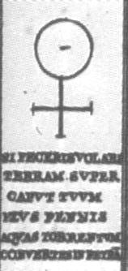</p>
          <p><a  name="quatrieme phrase"></a><b><font face="Arial,Helvetica"><font

                  color="#990000"><font size="-1">IV. SI FECERIS VOLARE TERRAM
                    SVPER CAPVT TVVM EIVS PENNIS AQVAS TORRENTVM CONVERTES IN
                    PETRAM</font></font></font></b> </p>
          <p><b><font face="Arial,Helvetica"><font color="#990000"><font size="-1">SI
TU
                    FAISAIS VOLER LA TERRE SUR LA TÊTE, PAR SES PLUMES, LES EAUX
                    DES TORRENTS TU TRANSFORMERAIS EN PIERRE</font></font></font></b></p>
        </center>
        <p><font face="Arial,Helvetica"><font color="#000099">Le symbole de
              Vénus est celui du sel par excellence. Nous avons vu dans les
              sections : tartre vitriolé et le vitriol de Tripied que cet
              hiéroglyphe céleste peur symboliser l'huile de tartre ou le
              salpêtre. On peut également employer directement l'alkali fixe [</font><font

              color="#660000"><font size="-1">carbonate de potasse</font></font><font

              color="#000099">] avec du soufre au rouge naissant et l'on obtient
              une masse brune, cassante, qu'on nommait anciennement foie de
              soufre.</font></font> </p>
        <blockquote><font color="#000099"><font size="-1"><font face="Wingdings">-
                <a  name="Foie"></a></font><font face="Arial,Helvetica"><u>Foie
                  de soufre au feu</u> : on met dans un vaisseau de terre large
                et plat la quantité que l'on souhaite de foie de soufre fait par
                la voie sèche et réduit en poudre.On place le vaisseau sur un
                feu très doux ; on remue la matière pour renouveler les surfaces
                : le soufre se décompose, le phlogistique se dissipe sans
                combustion et l'acide vitriolique se combine avec l'alkali du
                foie de soufre et forme du tartre vitriolé. Lorsque la matière a
                fumé pendant un certain temps, on augmente le feu, jusqu'à la
                faire rougir obscurément pendant un quart d'heure ; alors on
                fait dissoudre dans de l'eau la matière saline ; on filtre la
                liqueur et on la laisse refroidir : elle fournit des cristaux de
                tartre vitriolé</font></font></font> <br>
          <font color="#000099"><font size="-1"><font face="Wingdings">- </font><font

                face="Arial,Helvetica"><u>Foie de soufre avec l'acide
                  vitriolique</u> : on met dans un vase de verre la quantité que
                l'on veut de foie de soufre liquide fait par voie sèche ou
                humide. On l'étend dans une grande quantité d'eau. Dans ce
                mêlange, on verse goutte à goutte de l'acide vitriolique
                affaibli : il se fait aussitôt une vive effervescence, un
                précipité blanc qui trouble la liqueur et il s'exhale une odeur
                d'oeufs couvis ou de matière fécale. On continue de verser de
                l'acide jusqu'à ce qu'il ne se fasse plus de précipité : alors
                on filtre la liqueur, on passe de l'eau chaude sur le précipité
                resté sur le filtre afin de le dessaler ; on le fait sécher :
                cela s'appelle le magistère de soufre. Lorsqu'on verse de
                l'acide sur le foie de soufre, il s'unit à l'alkali et fait
                précipiter le soufre sous la forme d'une poudre qui est blanche
                : elle trouble la liqueur et lui donne une apparence laiteuse.
                Dans cet état, on donne à cette liqueur le nom de lait de
                soufre. La liqueur qu'on sépare par filtration contient un
                tartre vitriolé.[...] L'acide nitreux, l'acide marin [acide
                muriatique], le vinaigre, et même tous les acides végétaux,
                décomposent pareillement le foie de soufre. L'odeur qui s'exhale
                lorsqu'on verse un acide dans du foie de soufre est très infecte
                et dangereuse à respirer [...] Adapté de <b><i>Chymie
                    expérimentale et raisonnée</i></b> de Baumé.</font></font></font></blockquote>
        <font face="Arial,Helvetica"><font color="#000099">Voici une autre façon
            de préparer du tartre vitriolé ; dans tous les cas, le sel est
            symbolisé par Vénus. Rappelons ici que :</font></font>
        <p><i><font face="Arial,Helvetica"><font size="-1"><font color="#000099">"</font><font

                  color="#660033">Retourné sur sa croix, le signe de la Terre
                  devient celui de Vénus, de cette Aphrodite que les adeptes
                  désignent, plus précisément comme étant leur sujet minéral de
                  réalisation.</font><font color="#000099">"</font></font></font></i>
        </p>
        <p><font face="Arial,Helvetica"><font color="#000099">Nous avons dit
              dans la section sur la Prima materia qu'il existe deux matières
              premières dans l'Oeuvre ; la 2<sup>ème</sup> est d'essence
              vénusienne, dont le signe céleste est le Taureau. Vénus -
              Aphrodite cache la terre damnée qui contient en son centre le </font><font

              color="#660000">sel fixe</font><font color="#000099">,
              incombustible, voilé sous l'épithète de </font></font><font color="#000099"><font

              face="Symbol"><font size="+1">stibew</font></font><font face="Arial,Helvetica">
              ou </font><font face="Symbol"><font size="+1">marmaroV</font></font><font

              face="Arial,Helvetica">. On se reportera à la section <font size="-1"><a

                  href="../original/heraldique.html" class="lien-repare" title="ancre absente de la page d'origine : lien ramené en haut de page">héraldique
                  et alchimie</a></font> pour mieux comprendre ce point de
              science et le rapport qui existe entre le </font></font><font face="Arial,Helvetica"><font

              color="#660000">dragon </font><font color="#000099">et <a  name="Lucifer"></a></font><font

              color="#660000">Lucifer</font><font color="#000099">. Retournée
              sur son axe, le symbole forme l'albâtre des Sages, le véritable et
              unique stibium de&nbsp;<a  name="Tollius"></a><font size="-1"><a href="../original/tollius.html">Tollius</a></font>,
              assimilé à la chaux. Nous avons aussi été amenés à voir en Vénus
              une autre version de Cronos - Saturne [<small style="color: rgb(0, 102, 0);"><span

                  style="font-weight: bold;">cf. <a href="../original/lorenzo-lotto.html">Lorenzo
                    Lotto et les marqueteries hermétiques</a> de Bergame</span></small>],
en
              ce sens que Vénus annonce la lumière, qu'elle la précède
              d'ailleurs parfois de longtemps et qu'à ce titre, il faut y voir
              un autre hiéroglyphe de Saturne.</font></font> </p>
        <p><a  name="e)-"></a><font face="Arial,Helvetica"><font color="#000099"><b>e)-<a

                   name="Mars"></a></b><u>Mars</u></font></font> </p>
        <center>
          <p>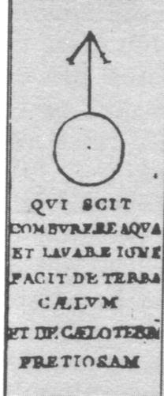</p>
          <p><a  name="cinquieme phrase"></a><b><font face="Arial,Helvetica"><font

                  color="#660000"><font size="-1">V. QVI SCIT COMBVRERE AQUA ET
                    LAVARE IGNE FACIT DE TERRA CÆLVM ET DE CÆLO TERRAM PRETIOSAM</font></font></font></b>
          </p>
          <p><b><font face="Arial,Helvetica"><font color="#660000"><font size="-1">CELUI
QUI
                    SAIT BRÛLER PAR L'EAU ET LAVER PAR LE FEU, FAIT, DE LA
                    TERRE, LE CIEL, ET DU CIEL, LA TERRE PRÉCIEUSE</font></font></font></b></p>
        </center>
        <p><font face="Arial,Helvetica"><font color="#000099">Le symbole de Mars
              [<span style="color: #660000;">cf.<a href="../original/orthelius-2.html">
                  Orthelius, II</a></span>], tout comme celui de Vénus, masque
              deux substances symbolisées par Ariès et Arès et doit nous faire
              réfléchir sur ce commentaire :</font></font> </p>
        <p><font face="Arial,Helvetica"><font color="#000099">"</font><i><font color="#990033"><font

                  size="-1">Quant au point et aux conditions, où et dans
                  lesquelles ils se rencontrent [les deux <u>Béliers</u>],
                  Fulcanelli, à propos du soufre secret, invoqua Philalèthe qui
                  « assure qu'on le trouve caché au ventre d'<u>Ariès</u>, ou du
                  Bélier, constellation que parcourt le soleil au mois
                  d'avril...<u> Arès</u>, plus vigoureux qu'<u>Ariès</u>, doit
                  être en moindre quantité. Pulvérisez, poursuit Fulcanelli, et
                  ajoutez la quinzième partie du tout de ce <u>sel pur, blanc,
                    admirable</u>, plusieurs fois lavé et cristallisé que vous
                  devez nécessairement connaître.</font></font></i><font color="#000099">"</font></font>
        </p>
        <p><font face="Arial,Helvetica"><font color="#000099">La 1<sup>ère</sup>
              matière est d'essence martiale si l'on peut dire, encore qu'il ne
              faille pas entendre par là le vitriol vert mais bien le vitriol
              philosophique. Sur ce même sujet, dans la <i><font size="-1">Toison
                  d'or</font></i>,&nbsp; E. Canseliet nous en dit plus :</font></font>
        </p>
        <p><i><font face="Arial,Helvetica"><font size="-1"><font color="#000099">"</font><font

                  color="#660000">Or, il y avait dans un <u>bois</u> de la rive
                  gauche du Rhône, un <u>dragon</u> dont la gueule était garnie
                  de dents énormes et qui s'attaquait à tous les voyageurs. Bien
                  qu'il frappât de mort tout ce qui le touchait, Marthe entra
                  dans le fourré, affronta le monstre et, l'aspergeant d'<u>eau
                    bénite</u>, lui présenta la&nbsp;<a  name="croix"></a><u>croix</u>.
                  Le dragon devint alors doux comme un&nbsp;<a  name="agneau"></a><u>agneau</u>,
                  se laissa attacher, et le peuple vint le tuer à coups de
                  lance.</font><font color="#000099">"</font></font></font></i>
        </p>
        <p><font face="Arial,Helvetica"><font color="#000099">L'allégorie est
              claire : la matière première est figurée par un </font><font color="#660000">bois</font><font

              color="#000099"> d'où la première matière est extraite par une « </font><font

              color="#660000">eau
              de feu</font><font color="#000099"> », c'est-à-dire le dissolvant
              qui constitue le principe pontique des Sages, objet premier de
              leurs secrets. Cette première matière trouve en l'hiéroglyphe
              céleste du </font><font color="#660000"><font size="-1"><a href="../original/zodiaque-alchimique.html#a">Bélier</a></font></font><font

              color="#000099"> son épithète consacré. Quant à l'eau bénite ou
              benoîte, nous avons vu plus haut que ces rapports avec l'Eau
              divine de Zosime étaient des plus étroits ; encore faut-il nuancer
              cette affirmation, car M. Berthelot écrit dans son <b><i><font size="-1"><a

                      href="../original/chimie-anciens.html">Introduction à la Chimie des
                      Anciens</a></font></i></b> qu'il y avait plusieurs
              manières de préparer l'Eau Divine, dont l'un nous intéresse tout
              particulièrement :</font></font> <br>
          <font face="Arial,Helvetica"><font color="#000099"></font></font>&nbsp;
          </p>
        <blockquote>
          <center><b><font face="Arial,Helvetica"><font color="#000099"><font size="-1">SÉPARATION
DE
                    L'OR ET DE L'ARGENT AU MOYEN AGE</font></font></font></b></center>
          <p><font face="Arial,Helvetica"><font color="#000099"><font size="-1">Dans
le
                  traité d'orfèvrerie, dont nous possédons une copie datée de
                  1478, mais qui remonte à une époque plus ancienne (Collection,
                  etc., p. 307), On trouve trois procédés pour effectuer cette
                  préparation, l'un par l'eau régale, l'autre par l'acide
                  nitrique, le dernier par l'antimoine. Voici la transcription
                  de ces textes, dont la date inférieure est certaine</font></font></font>
            <br>
            <font face="Arial,Helvetica"><font color="#000099"><font size="-1"><span

                    style="font-weight: bold;">(N° 42)</span>. - Eau pour
                  extraire l'or de l'asèm (alliage d'or et d'argent).</font></font></font>
          </p>
          <p><font face="Arial,Helvetica"><font size="-1"><font color="#000099">«<i>
                  </i></font><i><font color="#990000">Prenant deux parties de
                    sel ammoniac, et 3 parties de sel de nitre, broie bien dans
                    un mortier. » On les met en réaction prolongée dans un
                    alambic; ce qui fournit une eau divine.Quand tu voudras
                    retirer l'or de l'asèm, coupe l'asèm en morceaux, mets-le
                    dans l'alambic, bouche bien. Épuise l'action de l'eau divine
                    et mets à part l'or : il est à l'état pulvérulent.
                    Agglomère-le avec l'outil à dorer. </font></i><font color="#000099">»</font></font></font>
            <br>
            <font face="Arial,Helvetica"><font color="#000099"><font size="-1"><span

                    style="font-weight: bold;">(No 43)</span>. - Autre recette.
                  -</font></font></font> </p>
          <p><font face="Arial,Helvetica"><font size="-1"><font color="#000099">«</font><font

                  color="#990033"> <i>Prends 2 livres d'<u>alun</u>; du sel de
                    <u>nitre</u>, 1 livre; du <u>vitriol</u> romain, 1 livre et
                    demie; broie, mets dans un alambic, place sur un fourneau ;
                    ferme bien, et recueille l'<u>eau forte</u>. L'eau divine
                    est ainsi confectionnée en 24 heures.Quand tu voudras
                    retirer l'or de l'asèm, mets l'eau forte dans un vase de
                    verre posé sur de la cendre chaude: l'argent se dissout avec
                    bouillonnement.</i></font><font color="#000099">» [...]</font></font></font></p>
        </blockquote>
        <font face="Arial,Helvetica"><font color="#000099">La recette n°43
            permet de recueillir comme produit résidu du tartre vitriolé
            puisqu'elle conduit à la préparation de l'aqua sicca. Nous
            rapprocherons ce texte de celui qu'E. Canseliet place dans
            l'introduction à son étude de la villa Palombara :</font></font>
        <p><font face="Arial,Helvetica"><font color="#000099">"</font><font size="-1"><i><font

                  color="#660000">En conséquence, la lance de Mars sépare, en
                  deux égales parties, le croissant de la lune qui évoque la
                  double qualité, aqueuse et froide, de la Diane chaste et issue
                  de la matière initiale, suivant que le précisa Magophon [</font></i><font

                color="#000099">pseudonyme
                du libraire Pierre Dujols de Valois dont on croit qu'il a
                peut-être écrit une partie de l'oeuvre attribuée à Fulcanelli</font><i><font

                  color="#660000">] : «... car une eau, dénommée la <u>belle
                    d'argent</u>, jaillit de ce corps que les Sages appellent la
                  Fontaine des Amoureux de Science.</font><font color="#000099">»
                </font></i><font color="#000099">[<i>le
                  livre d'images sans paroles</i>, librairie critique Emile
                Nourry, 1914, cf. <i>l'<b><a href="../original/mutus-liber.html">Hypotypose</a></b></i>
                par Magophon]</font></font><font color="#000099"> "</font></font>
        </p>
        <p><font face="Arial,Helvetica"><font color="#000099">Cette eau des
              sages, c'est aussi le lait de la <i><font size="-1">Virgo
                  paritura</font></i>, maintes fois évoquée, dont le nectar
              nourrit </font><font color="#660000">Apollon</font><font color="#000099">
              au 2<sup>ème</sup> oeuvre.</font><font color="#000080"> Notre
              observation, finalement, se rapproche d'une note de bas de page (</font><font

              color="#660000"><font size="-1"><b><i>DM, I</i></b>, p. 350</font></font><font

              color="#000080">) où Fulcanelli nous précise qu'Ammon-Râ était
              ordinairement représenté avec une tête de bélier et parfois avec
              des cornes spiralées. Fulcanelli rappelle que :</font></font> </p>
        <p><font face="Arial,Helvetica"><font color="#990033"><font size="-1">"<i>..
                  .le
                  bélier est l'image de l'eau des sages... Ammon, médiateur
                  salin...</i>"</font></font></font> </p>
        <p><font color="#000080"><font face="Arial,Helvetica">qui réalise la
              concorde, l'unité et la perfection dans la pierre philosophale.
              Nous ferons remarquer au lecteur de ne pas confondre ici le sel
              ammoniac des Sages [</font><font face="Symbol"><font size="+1">ammokonia</font></font><font

              face="Arial,Helvetica">] du sel harmoniac sophique que Fulcanelli
              attribue au bélier. Nous avons analysé ce point de science
              ailleurs et le lecteur peut se référer à la section <font size="-1"><a

                  href="../original/heraldique.html" class="lien-repare" title="ancre absente de la page d'origine : lien ramené en haut de page">héraldique
                  et alchimie</a></font> pour en savoir plus. ainsi donc,
              voyons-nous liés deux substances, certainement indispensables dans
              l'oeuvre, le&nbsp;<a  name="sable"></a>sable [</font></font><font face="Symbol"><font

              color="#660000"><font size="+1">Ammon</font></font></font><font face="Arial,Helvetica"><font

              color="#000080">] et la chaux [</font></font><font face="Symbol"><font

              color="#660000"><font size="+1">konia</font></font></font><font face="Arial,Helvetica"><font

              color="#000080">]. La chaux intervient comme « promoteur » dans
              l'action du dissolvant des Sages et le sable intervient comme lien
              du Mercure. Mais il s'agit d'un sable particulier dont l'origine
              est tout spécialement désignée par la figure suivante.</font></font>
          <br>
          &nbsp; </p>
        <center>
          <p>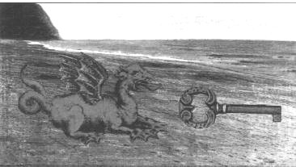<br>
            <font face="Arial,Helvetica"><font color="#000099"><font size="-1">FIGURE
                  XXX<br>
                  (la clef du dragon)<br>
                </font></font></font></p>
        </center>
        <p><font face="Arial,Helvetica"><font color="#000099">On ne saurait
              mieux désigner la clef qui ouvre le temple où le&nbsp;<a  name="dragon_2"></a><font

                size="-1"><a href="#dragon">dragon</a></font> doit être tué et
              écorché. C'est la même qui est commentée dans l'<b><i><font size="-1"><a

                      href="../original/introitus.html">Introïtus</a></font></i></b> de
              Philalèthe. Le symbole de Mars cache aussi le principe igné des
              vitriols. Nous dirons simplement que l'on peut utiliser aussi bien
              le vitriol vert [</font><font color="#660000"><font size="-1">couperose</font></font><font

              color="#000099">], le vitriol bleu et le vitriol blanc. Le vert
              peut se trouver dans les pierres atramentaires [</font><font color="#660000"><font

                size="-1">elles servent, comme le vitriol lui-même, à composer
                les diverses sortes de teinture noires ou d'encre, atramentum</font></font><font

              color="#000099">] et aussi dans les mines de fer, de seconde et de
              troisième formation, abreuvées par les eaux qui découlent [</font><font

              color="#660000"><font size="-1">cado, labor</font></font><font color="#000099">]
              des matières argileuses et plâtreuses ; on le tire aussi des
              pyrites martiales en les décomposant par la calcination [les
              lavages ignés] ou par l'humidité [</font><font color="#660000"><font

                size="-1">les lavages aqueux</font></font><font color="#000099">].
              Le vitriol martial d'Angleterre, est en cristaux de couleur
              verte-brune, d'un goût doux, astringent, approchant de celui du
              vitriol blanc. Le vitriol dans lequel il y a une surabondance de
              fer est d'un beau vert pur : c'est celui dont on se sert pour
              l'opération de l<i>'<font size="-1">huile
                  de vitriol</font> </i>; celui d'Allemagne est en cristaux
              d'un vert-bleuâtre, assez beaux, d'un goût âcre et astringent ;
              ils participent non seulement du fer, mais encore d'une portion de
              cuivre : cette espèce convient fort à l'opération de l'<i><font size="-1">eau
                  forte</font></i>. Le vitriol vert se tire encore d'une autre
              manière que les pyrites : dans les mines de cuivre où l'on
              exploite le cuivre, le fond des galeries est toujours abreuvé
              d'une eau provenant de la condensation des vapeurs qui règnent dns
              ces mines ; quelquefois même, il sort, par quelques ouvertures
              naturellement pratiquées dans le bas de ces mines, une liqueur
              minérale très bleuâtre ou légèrement verdâtre ; c'est le <i><font

                  size="-1">vitriolum ferreum cupreum aquis immixtum</font></i>.
              On peut ajouter à ces trois vitriols métalliques, une substance
              grasse à laquelle on a donné le nom de <i><font size="-1">beure
                  fossile</font></i>, et qui suinte des schistes alumineux ;
              c'est une vraie stalactite vitriolique ferrugineuse, qui contient
              plus d'acide qu'aucun des autres vitriols métalliques. Il s'agit
              donc d'un véritable&nbsp;<a  name="guhr"></a><a href="../original/vitriol.html#guhr">guhr</a>.
              Après ces vitriols à base métallique, on doit placer les vitriols
              à base terreuse qui, pris généralement, peuvent se réduire à deux
              ; le premier est l'alun dont la terre est argileuse et le second
              est le gypse, que les chimistes anciens ont appelé sélénite et
              dont la base est une terre calcaire.</font></font> <br>
          <font face="Arial,Helvetica"><font color="#000099">Le lecteur
              comprendra ici la difficulté que l'on rencontre à classer ces
              vitriols composés, dans une perspective hermétique, par rapport à
              leur concordances avec les hiéroglyphes célestes. Sauf à conclure
              avec E. Canseliet que «<i> <font size="-1">tout en est bon</font></i>
              » [</font><font color="#660000"><font size="-1">cf. <i style="font-weight: bold;">Etudes
                  diverses de symbolisme hermétique</i></font></font><font color="#000099">],
c'est-à-dire
              que chaque partie de ces deux vitriols à base terreuse trouve sa
              correspondance hermétique, dès lors qu'on les a soumis à la
              séparation initiale, grâce au 1<sup>er</sup> agent : l'<font size="-1"><a

                  href="../original/heraldique.html#1%29-">épée du chevalier</a></font>. Et
              il en est bien ainsi : le <font size="-1"><a href="../original/sulf-potasse.html">tartre
                  vitriolé</a></font> est constitué de l'acide vitriolique qui
              s'est emparé d'une partie du soufre ; l'alumine constitue le <font

                size="-1"><a href="../original/chimie-alchemy.html#b%29-">Soufre blanc</a></font>,
              ou Corps et la <font size="-1"><a href="../original/laboratoire-2.html">chaux</a></font>
              constitue l'un des composés du Mercure philosophique ou Esprit.</font></font>
        </p>
        <blockquote><font size="-1"><font color="#000099"><span style="font-family: Wingdings;">-</span><font

                face="Arial,Helvetica"> La nature ne nous offre que très
                rarement et en petite quantité de l'<a  name="alun"></a>alun tout
                formé ; on a donné à cet alun natif le nom d'alun de plume,
                parce qu'il est cristallisé en filets qui sont arrangés comme
                les barbes d'une plume ; ainsi, les rochers qui entourent l'île
                de Mélos [l'une des Cylades] sont d'une nature de pierre légère
                et spongieuse, qui semble porter l'empreinte de la destruction.
                La pierre des anciennes carrières offre les mêmes caractères :
                toutes les parois de ces galeries souterraines sont couveres
                d'alun qui s'y forme continuellement ; on y trouve le superbe et
                véritable alun de plume, qu'il ne faut pas confondre avec
                l'amiante [</font><font face="Symbol">asbestoV</font><font face="Arial,Helvetica">].
                L'alun de Mélos était fort estimé des Anciens ainsi qu'on peut
                le lire dans Pline [</font></font><font face="Arial,Helvetica"><font

                color="#660000">cf. section <a href="../original/chimie-alchemy.html#Pline">chimie
                  et alchimie</a></font><font color="#000099">]. Quant à l'alun
                qui se tire des matières pyriteuses, on l'appelle alun de glace
                ou alun de roche ; il est rarement pur et retient toujours
                quelques parties métalliques, en particulier du vitriol vert.
                L'alun connu sous le nom d'alun de Rome provient de la carrière
                de la Tolfa ; cette carrière forme une montagne haute de 50
                mètres à peu près. Les montagnes alumineuses de la Tolfa,
                disposées en rochers blancs, comme d ela craie, sont séparées
                par un vallon qui a plusieurs petites issues sur les côtés et
                qui ne doit son origine qu'à l'immensité des pierres alumineuses
                qu'on en a tirées. L'argile alumineuse est d'un gris-blanc ou
                blanche comme de la craie. Il y a dans la même carrière une
                argile molle, blanche comme de la craie et une autre d'un
                gris-bleuâtre, que l'acide a commencé à tacher de blanc. La
                pierre d alun de la Tolfa [qui est donc à lafois roche et non
                roche, ce qui est conforme aux écrits des anciens
                alchimistes]&nbsp; est donc une argile durcie, pénétrée et
                blanchie par l'acide vitriolique ; cette pierre renferme
                quelques petites parties calcaires qui se forment en sélénite
                pendant la fabrication de l'alun.</font></font></font> <br>
          <font face="Arial,Helvetica"><font size="-1"><font color="#000099">La
                carrière est composée de pierres qui happent à la langue et qui
                se décomposent lorsqu'on les laisse longtemps exposées à l'air.
                Ces pierres doivent d'abord être calcinées et on ne les retire
                qu'aprèq qu'elles aient subi l'action du feu pendant 12 heures
                mais il faut se garder de trop les calciner ; elles sont ensuite
                arrangées en forme de muraille disposée en talus, pour recevoir
                l'eau dont on les arrose pendant 40 jours. Mais, s'il survient
                des pluies continuelles, elles sont perdues parce que l'eau, en
                les décomposant, se chargerait de sels qu'elle entraînerait avec
                elle. Lorsque les pierres sont parvenues à un juste degré de
                décomposition, on peut en former une pâte blanche pétrifiable.
                On les porte alors dans les chaudières que l'on a remplies d'eau
                et dont le fond est de plomb ; on remue la matière avec une
                pelle quand l'eau a été portée à ébullition et on la débarasse
                des écumes qui nagent sur sa surface et ensuite on fait évapoere
                l'eau qui a dissous les sels d'alun et lorsqu'on juge qu'elle
                est assez chargée de sel, on la fait passer dans un cuvier,
                ensuite dans des cuves de bois de chêne, dont la forme est
                carrée et c'est dans ces dernières cuves qu'on la laisse
                cristalliser. Au bout de 15 jours, on voit l'alun se
                cristalliser le long de l'intérieur des cuves, en cristaux fort
                irréguliers ; mais quelqufois, à l'ouverture de la décharge des
                cuves, l'alun se forme en beaux cristaux et d'une forme très
                régulière. [i</font><font color="#660000">n Buffon, <b><i>Histoire
                    Naturelle des Minéraux</i></b></font><font color="#000099">].</font></font></font>
          <br>
          <font face="Arial,Helvetica"><font color="#000099"><font size="-1"></font></font></font>&nbsp;</blockquote>
        <a  name="f)-"></a><font face="Arial,Helvetica"><font color="#000099"><b>f)-</b><u>La&nbsp;<a

                 name="chute"></a>chute de l'Âme</u></font></font>
        <p><br>
        </p>
        <center>
          <p></p>
          <p><a  name="sixieme phrase"></a><b><font face="Arial,Helvetica"><font

                  color="#660000"><font size="-1">VI. FILIUS NOSTER MORTVVS
                    VIVIT REX AB IGNE REDIT ET CONIVGO GAVDET OCCVLTO</font></font></font></b>
          </p>
          <p><b><font face="Arial,Helvetica"><font color="#660000"><font size="-1">NOTRE
FILS
                    MORT VIT. LE ROI REVIENT DU FEU ET PAR LE MARIAGE CACHÉ SE
                    RÉJOUIT.</font></font></font></b></p>
        </center>
        <p><font face="Arial,Helvetica"><font color="#000099">Selon E.
              Canseliet, nous sommes en présence de la fille de Latone :</font></font>
        </p>
        <p><font face="Arial,Helvetica"><font color="#000099">"</font><i><font color="#990000"><font

                  size="-1">...<u> Diane</u> est le mercure mondé, blanc et
                  d'éclat adamantin. De celui-ci, on voit le symbole sur l'autre
                  pied-droit, où il est renversé et montre sa <u>croix</u> qui
                  a reçu un petit <u>v</u> marquant la vie.</font></font></i><font

              color="#000099">"</font></font> </p>
        <p><font face="Arial,Helvetica"><font color="#000099">Ce symbole est à
              rapprocher du bouclier au double Mercure in <font size="-1"><a href="../original/heraldique.html">blasons
                  alchimiques</a></font> [</font><font color="#660000"><font size="-1">ch.
8
                <a href="../original/heraldique.html#8%29-">Agriculture céleste</a></font></font><font

              color="#000099">]. Du moins, il semble que l'on se trouve à un
              stade où le Mercure est déjà animé. C'est donc que le 3<sup>ème</sup>
              oeuvre est à la veille de débuter [</font><font color="#660000"><font

                size="-1">la Grande Coction</font></font><font color="#000099">].
              La méthode consiste ici à employer des substances présentant la
              double propriété d'être sous forme liquide à des températures
              obtenues facilement dans les fourneaux et qui puissent se
              volatiliser en entier dans des vases ouverts, sous l'action
              prolongée d'une forte chaleur. L'animation du Mercure est en
              étroite relation avec le poids donné au sel harmoniac,
              relativement à celui employé pour les Terres, c'est-à-dire des
              éléments de séparation obtenus à partir de nos deux roches [</font><font

              color="#660000"><font size="-1">la terre astringente et la
                sélénite</font></font><font color="#000099">].
              On peut ajouter au mélange de faibles doses d'autres éléments
              mercuriels, implicitement contenus dans la terre feuillée de
              tartre [</font><i><font color="#660000"><font size="-1">Hepar
                  sulfuris</font></font></i><font color="#000099">]. Certaines
              chaux métalliques se révèlent utiles à ce stade, telles que celles
              provenant de la maison d'<a  name="Ariès"></a>Ariès
              ou de&nbsp;<a  name="Zeus"></a>Zeus. Chacun de ces éléments
              augmente la fusibilité du sel d'Ammon terreux sans modifier
              d'ailleurs ses propriétés essentielles. Parmi ces propriétés, se
              distinguent celles propres à des substances qui sont épitopes du
              réalgar ou du sang dragon. Ces substances peuvent s'unir
              intimement au sel d'Ammon et hâter le mariage des deux Principes.
              Une mention spéciale doit être réservée à la chaux qui est le
              fondant par excellence, eu égard à son bas prix. On peut
              l'employer vive ou à l'état de carbonate. Il faut se servir
              immédiatement de la chaux cuite, sinon elle se transforme en
              hydrate [</font><font color="#660000"><font size="-1">raison pour
                laquelle un Adepte précise qu'il faut se hâter de présenter une
                certaine substance à ses parents, de peur qu'elle ne
                s'envieillisse</font></font><font color="#000099">]. On
              s'adressera donc plutôt au calcaire brut. Les calcaires que
              fournit le sol sont plus ou moins purs : ils peuvent renfermer de
              l'argile, diverses bases, de l'acide phosphorique et chacun de ces
              éléments étrangers peut avoir une influence utile ou fâcheuse. Si
              la nature du fondant est plutôt riche en sel d'Ammon [</font><font

              color="#660000"><font size="-1">ce qu'il faut éviter pour le type
                de Pierre que l'on choisit « d'orienter »</font></font><font color="#000099">],
              on prendra un calcaire argileux ou magnésien ; on s'adressera
              alors aux marnes et aux dolomies [</font><font color="#660000"><font

                size="-1">cf. section sur la <a href="../original/merc-nat.html#dolomies">nature
                  de la Pierre</a></font></font><font color="#000099">]. Les
              dolomies ont cet avantage de ne fournir que des bases, sans
              ajouter du sel d'Ammon. Comme addition utile en toute
              circonstance, il faut citer le <font size="-1"><a href="#aurore_index">spath-fluor</a></font>
              qui favorise la fusion et la fluidité de la masse. On peut encore
              employer des substances sans sel d'Ammon, par l'action réciproques
              de foies de soufre sur de la pierre de lune ; 1/10<sup>e</sup> de
              spath-fluor suffit pour liquéfier du sulfate de plomb à la chaleur
              rouge [</font><font color="#660000"><font size="-1">voie de la <a

                  href="../original/laboratoire-3.html">saturnie végétale</a></font></font><font

              color="#000099">]. Mais il s'agit là d'opérations qui paraissent
              bien spagyriques et qui semblent n'avoir que des rapports ténus
              avec la science d'Hermès. Pourtant, ce serait oublier que la Chute
              de l'<a  name="Ange"></a>Ange
              précède
              de peu l'envenimation du Monde [</font><font color="#660000"><font

                size="-1">il
                s'agit alors de la période où le soleil hermétique traverse le
                signe du Scorpion</font></font><font color="#000099">], les
              Anges étant des hérauts de Dieu, l'étudiant trouvera facilement la
              correspondance chimique. S'il était besoin, nous rapprocherions
              cette allégorie du&nbsp;<a  name="Paradis"></a>Paradis terrestre de
              la Genèse : on sait qu'il s'agissait d'un jardin qu'Adam cultivait
              et il nous paraît utile d'évoquer ici Eve et son dialogue avec le
              serpent dans le Paradis terrestre.</font></font> <br>
          <font face="Arial,Helvetica"><font color="#000099">On a dit qu'elle
              symbolisait l'élément féminin dans l'homme, au sens où, selon
              Origène, l'homme intérieur comporte un esprit et une âme :on a dit
              notamment que l'esprit est mâle, et l'âme peut être appelée
              femelle [</font><font color="#660000"><font size="-1">Homélies
                sur la genèse, 4, 15</font></font><font color="#000099">] ;
              c'est un contre-sens hermétique : nous savons que l'<a  name="Esprit"></a><u>Esprit</u>
              a toujours symbolisé le <u>Mercure</u> et que l'<a  name="Âme"></a><u>Âme</u>,
              symbolisée par la corne de la licorne, correspond au <u>Soufre</u>
              et qu'elle doit être réincrudée dans un&nbsp;<a  name="Corps"></a><u>Corps</u>
              de grande vertu, par opposition aux éléments souillés dont elle
              provient. Cette réincrudation passe par un épisode qui a des
              rapports curieusement analogues à la rupture d'Adam et d'Eve : le
              rejet par Adam de la faute sur Eve provient de l'inimitié qui,
              désormais, sépare l'âme de l'esprit. Tel est aussi le cas dans
              l'oeuvre alchimique : au départ, l'Esprit et l'Âme sont confondus
              à l'époque de la Grande coction [</font><font color="#660000"><font

                size="-1">c'est la 2<sup>ème</sup> putréfaction de Le Breton</font></font><font

              color="#000099">] ; puis vient une phase transitoire où l'Âme va
              se séparer de l'Esprit avant de contracter un Corps ; cette
              séparation trouve sa correspondance chimique dans le passage d'un
              état « <i>divin</i> » à un état « <i>terrestre</i> » qui ne peut
              être que souillé et qui correspond à la chute de l'Âme. Dans un
              raccourci saisissant, chimie et alchimie se rejoignent alors dans
              ce qui fait le fondement de l'hermétisme :</font></font> </p>
        <p><font face="Arial,Helvetica"><font color="#000099">«</font><font color="#990033">
              <i><font size="-1">Pourquoi, demande Asclépius à son maître,
                  pourquoi donc, ô Trismégiste, a-t-il fallu que l'homme fût
                  établi dans la matière au lieu de vivre en la fécilité suprême
                  ou Dieu habite ?</font></i> </font><font color="#000099">» [<i><font

                  size="-1"><b>Ascl</b>., 7</font></i>]</font></font> <br>
          &nbsp; </p>
        <center>
          <p>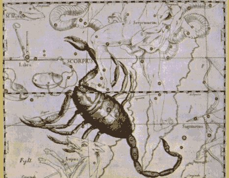<br>
            <font face="Arial,Helvetica"><font color="#000099"><font size="-1">FIGURE
                  XXXI</font></font></font> <br>
            <i><font face="Arial,Helvetica"><font color="#000099"><font size="-1">(constellation
                    du&nbsp;<a  name="Scorpion"></a>Scorpion, atlas de Hevelius,
                    Uranographia, 1680)</font></font></font></i></p>
        </center>
        <p><font face="Arial,Helvetica"><font color="#000099">On en rapprochera
              la plainte des âmes quand elles apprennent leur condamnation :</font></font>
        </p>
        <p><font face="Arial,Helvetica"><font color="#000099">"</font><i><font color="#990000"><font

                  size="-1">Ciel, principe de notre naissance, éther et air
                  [...], astres resplendissants, lumière indéfectible du soleil
                  et de la lune, frères de lait issus de la même origine, vous
                  tous de qui brutalement séparées nous subissons des misères,
                  et plus de misères encore, puisque, arrachées à des choses
                  grandes et brillantes et à la sainte atmosphère et au
                  firmament magnifique, et, qui plus est, à la vie bienheureuse
                  que nous menions avec les dieux, nous allons être emprisonnées
                  en des tentes ignobles et viles ! Qu'avons-nous donc,
                  malheureuses, commis de si affreux ? quel crime, qui mérite
                  ces châtiments actuels ? </font></font></i><font color="#000099">"[<a

                 name="Kore Kosmou"></a><i><font size="-1"><b>Kore Kosmou,</b>
                  34-35</font></i>]</font></font> </p>
        <p><font face="Arial,Helvetica"><font color="#000099">La question, ici,
              est de savoir quelle a été la raison de la chute de l'Âme et de
              trouver sa correspondance alchimique qui nous donnera
              immédiatement sa contre partie physique [</font><font color="#660000"><font

                size="-1">c'est-à-dire chimique</font></font><font color="#000099">].
              Pourquoi l'Âme choisit-elle de tomber ? Pourquoi se
              détourne-t-elle de Dieu, se tourne-t-elle vers la matière ? A
              cette question, A.J.&nbsp;<a  name="Festugière"></a>Festugière [</font><i><font

                color="#660000"><font size="-1">III. Les Doctrines de l'âme, <b>La
                    Révélation d'Hermès Trimégiste</b></font></font></i><font color="#660000"><font

                size="-1">, Paris, Les Belles Lettres, 1990</font></font><font color="#000099">]&nbsp;
répond
              :</font></font> </p>
        <p><font face="Arial,Helvetica"><font color="#000099">"</font><i><font color="#990000"><font

                  size="-1">Car ce n'est pas à Adam, homme terrestre, composé de
                  corps et d'âme, qu'il faut comparer le prototype céleste de
                  l'âme : c'est aux anges, aux anges établis au ciel, jouissant
                  de la vue de Dieu, éternellement heureux auprès de Lui. D'où
                  vient qu'à un moment donné, certains anges renoncent à Dieu,
                  refusent en quelque sorte leur bonheur ?</font></font></i><font

              color="#000099">"</font></font> </p>
        <p><font face="Arial,Helvetica"><font color="#000099">Déjà, un premier
              élément de réponse s'esquisse : le désir de créer à son tour et
              Festugière d'ajouter :</font></font> </p>
        <p><font face="Arial,Helvetica"><font size="-1"><font color="#000099">"</font><font

                color="#990033"><i>Est-ce là une faute ? Non sans doute dans le
                  Poimandrès, puisqu'il est dit aussitôt après : « permisssion
                  lui en fut donnée par le Père </i>»..</font></font><font color="#000099">."</font></font>
        </p>
        <p><font face="Arial,Helvetica"><font color="#000099">ce qui signifie
              que Dieu était, pour ainsi dire, déchargé de la responsabilité de
              créer le monde, au profit du Noûs&nbsp;<a  name="Démiurge"></a>Démiurge
              [</font><font color="#660000"><font size="-1">le fils de Dieu ou
                Logos</font></font><font color="#000099">]. L'entrée dans la
              sphère démiurgique est responsable de la chute. A peine est-il
              descendu que l'Homme subit le contact du mal. Voici donc la
              province de l'Homme : alors que le Démiurge domine sur le monde
              céleste jusqu'à la Lune, l'Homme aura domination sur la Terre et
              ses habitants. Mais ce péché est permis par le Dieu suprême, dès
              lors que ce Dieu permet à l'Homme de créer [<span style="color: #660000;">la
                symbolique de Prométhée, cf. <a href="../original/orthelius.html">Orthelius,
                  I</a></span>], comme il avait consenti à la création du
              Démiurge. En d'autres termes, créer n'est pas un mal si bien que
              ce péché est en quelque sorte nécessaire.</font></font> <font face="Arial,Helvetica"><font

              color="#000099">Nous arrêterons là cette discussion pour nous
              borner à ce constat : c'est essentiellement l'action du Démiurge
              qui est responsable de la chute de l'Âme.</font></font> </p>
        <p><font face="Arial,Helvetica"><font color="#000099">"</font><i><font color="#660033"><font

                  size="-1">la genèse de l'Âme Première [Anthrôpos], enfanté par
                  le Noûs, Père Suprême de tous les êtres, possède de droit
                  toutes les prérogatives divines ; jaloux de la création des
                  sphères célestes accomplie par le deuxième Noûs démiurge, il
                  veut créer à son tour, en reçoit la permission de son père et
                  descend vers les sphères planétaires où les Gouverneurs lui
                  donnent, chacun, part à son caractère [il reçoit les
                  caractères de Saturne, Jupiter, Mars, soleil, Vénus, Mercure
                  et Lune] ; parvenu à la sphère de la Lune, l'anthrôpos en
                  brise l'enveloppe ; il se reflète alors dans les eaux qui
                  recouvrent la Nature d'ici-bas et s'éprend de ce reflet,
                  cependant qu'à son tour, la Nature s'éprend de lui.</font></font></i><font

              color="#000099">"</font></font> </p>
        <p><font face="Arial,Helvetica"><font color="#000099">Telle est la
              conclusion que donne Festugière au chapitre de l'<a  name="incarnation"></a>incarnation
de
              l'Âme. En alchimie, nous savons - et c'est le seul point commun
              que nous trouverons entre l'alchimie et la psychologie - que le
              Démiurge est incarné dans l'Artiste, penché sur son fourneau, ses
              creusets brasqués et ses cornues lutées. C'est lui qui décide donc
              du sort de l'Âme. Or, qu'est-ce que l'Âme ? Nous l'avons dit, il
              s'agit du principe Soufre qui n'est autre qu'un <u>signe&nbsp;<a

                   name="divin"></a>divin</u>, au sens hermétique du terme [</font><font

              color="#660000"><font size="-1">que
                l'on comprenne bien le sens de l'analogie par le rapprochement :
              </font></font></font><font color="#660000"><font face="Symbol"><font

                size="+1">qeion</font></font><font face="Arial,Helvetica"><font

                size="-1"> = Dieu et </font></font><font face="Symbol"><font size="+1">qeioV</font></font><font

              face="Arial,Helvetica"><font size="-1"> = soufre</font></font></font><font

            color="#000099"><font face="Arial,Helvetica">]. Si l'on calcine
              fortement un mélange de tartre vitriolé avec un sulfate
              métallique, ce dernier se décompose et donne un oxyde qui
              cristallise au sein du tartre vitriolé en fusion. C'est cette
              cristallisation progressive de deux oxydes qui détermine
              l'orientation de la Pierre, selon les métaux choisis. La figure
              XXXI qui montre la constellation du Scorpion fait référence à l'</font><font

              face="Symbol"><font size="+1">ioV</font></font><font face="Arial,Helvetica">,
              c'est-à-dire le venin, mais aussi couperose dans une autre
              acception [</font></font><font face="Arial,Helvetica"><font color="#660000"><font

                size="-1">cela présente un intérêt hermétique supplémentaire
                lorsqu'on sait que la Tradition astrologique attribue la 2<sup>ème</sup>
                maîtrise du Scorpion à Mars</font></font><font color="#000099">].
C'est
              aussi par la méthode des sulfates que&nbsp;<a  name="M.A. Gaudin"></a><font

                size="-1"><a href="../original/soufre.html#Gaudin">M.A. Gaudin</a></font> a
              pu préparer des cristaux de rubis.</font></font> </p>
        <p><a  name="g)-"></a><font face="Arial,Helvetica"><font color="#000099"><b>g)-</b><u>le
double
                Mercure</u></font></font> </p>
        <p><br>
        </p>
        <center>
          <p>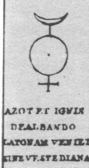</p>
          <p><a  name="septieme phrase"></a><b><font face="Arial,Helvetica"><font

                  color="#660000"><font size="-1">VII. AZOTH ET IGNIS DEALBANDO
                    LATONAM VENIET SINE VESTE DIANA</font></font></font></b> </p>
          <p><b><font face="Arial,Helvetica"><font color="#660000"><font size="-1">L'AZOTH
ET
                    LE FEU EN BLANCHISSANT&nbsp;<a  name="LATONE"></a>LATONE,
                    PARAÎTRA DIANE SANS VÊTEMENT</font></font></font></b></p>
        </center>
        <p><font face="Arial,Helvetica"><font color="#000099">Cf. <font size="-1"><a

                  href="../original/st-gregoire-vievre.html#lune">rébus
                  de saint Grégoire-sur-Vièvre</a></font> ; nous n'aurons que
              peu de choses à ajouter, sinon que ce symbole représente
              exactement celui que nous avons construit à partir de notre <a href="../original/laboratoire-2.html">2<sup>ème</sup>
                schéma</a> de synthèse de la Pierre. La Terre est conjuguée au
              croissant de Lune, qui symbolise une partie de l'argent-vif des
              Sages ; le point inscrit dans le cercle est l'alkali fixe [</font><font

              color="#660000"><font size="-1">et non le Soufre à ce stade de
                l'oeuvre, puisque nous sommes ici au 2<sup>ème</sup> oeuvre et
                que le symbole représente la préparation du Mercure
                philosophique</font></font><font color="#000099">].&nbsp;<a  name="AZOTH"></a>AZOTH
              est pris dans le sens du dissolvant universel et les enfants de
              Latone, Diane et Apollon, sont les deux principes de ce
              dissolvant. L'opération que décrit E. Canseliet dans son <b><i><font

                    size="-1">Alchimie expliquée sur ses Textes classiques</font></i></b>
              nous est à présent familière :</font></font> </p>
        <blockquote><font face="Arial,Helvetica"><font color="#000099"><font size="-1">La
première
                phase de l'oeuvre est, en effet, une opération au creuset, ou,
                plus exactement, une série d'opérations, que les manuels
                imprimés de la chimie exposaient en clair, depuis le début du
                XVIe siècle. Afin de s'en rendre compte, il suffit de consulter
                les ouvrages de spagyrie, en grand usage dans le passé, que ce
                soit le Traité de Christophle Glaser, le Cours de Lémery, ou
                celui de Le Fèvre, les deux savants semblablement prénommés
                Nicolas. On y retrouve, en somme, ce que nous avons exposé un
                peu plus haut, et qu'enseignait donc, il y a trois cents années,
                le chimiste Glaser, Apotiquaire ordinaire du Roy &amp; de
                Monseigneur le Duc d'Orléans:</font></font></font>
          <p><font face="Arial,Helvetica"><font size="-1"><font color="#000099">«
                </font><i><font color="#990033">Ayez un grand creuset, &amp; le
                    placez dans un fourneau à vent sur un petit rond (fromage),
                    afin qu'y ne touche la grille, &amp; qu'il puisse recevoir
                    davantage de chaleur; &amp; le faites rougir entre les
                    charbons ardents, ayez un couvercle proportionné au creuset
                    ; prenez environ une once du meslange avec une cueiller de
                    fer, &amp; le mettez dans le creuset, &amp; le couvrez en
                    même temps avec son couvercle, la matière ne se calcinera
                    tout aussitôt avec un bruit que l'on appelle détonation ;
                    lequel passé, remettez de nouvelle matiere dans le creuset,
                    en le couvrant comme devant, &amp; ainsi continuez tant que
                    toute la matiere soit dans le creuset.</font></i><font color="#000099">»
                  [<i style="font-weight: bold;">Traité de la Chymie</i>,
                  Christophle Glaser, Iean Thioly, 1716]</font></font></font> </p>
          <p><font face="Arial,Helvetica"><font color="#000099"><font size="-1">Nous
ne
                  saurions être surpris que Philalèthe eût formulé tout
                  autrement le très commun modus operandi que, de son temps, il
                  était facile de suivre, et surtout de réaliser, pour peu qu'on
                  fût habile et qu'on possédât quelque connaissance de l'art du
                  feu. Ce</font></font></font> <font face="Arial,Helvetica"><font

                color="#000099"><font size="-1">point capital de la Science ne
                  fut donc pas sans exalter, chez lui, le caractère « envieux »,
                  propre à tout philosophe, qu'il soit classique ou non. Que
                  l'étudiant en juge, penché avec nous-même, sur le passage qui
                  correspond exactement, dans l'<b><i><a href="../original/introitus.html">Introïtus</a></i></b>:</font></font></font>
          </p>
          <p><font face="Arial,Helvetica"><font size="-1"><font color="#000099">«</font><font

                  color="#990033"> <i>Afin que tu aies cette difficulté bien
                    expliquée, dresse tes oreilles avec beaucoup d'attention.
                    Que soient prises quatre parties de notre <a href="../original/gardes-corps.html#Dragon">dragon</a>
                    igné qui, dans son ventre, cache l'Acier Magique, neuf
                    parties de notre Aimant ; mêle-les ensemble par le brûlant
                    Vulcain, en forme d'eau minérale, sur laquelle flottera une
                    écume qu'il faut rejeter. Écarte la coquille et choisis le
                    Noyau ; purge-le à trois reprises, par le feu et le sel; ce
                    qui se fera facilement, si Saturne a regardé son image dans
                    le Miroir de Mars.</i></font><font color="#000099">»</font></font></font></p>
        </blockquote>
        <font face="Arial,Helvetica"><font color="#000099">Cette description
            peut correspondre soit à :</font></font> <br>
        <br>
        <b><font color="#000099"><font face="Symbol">a</font><font face="Arial,Helvetica">)-</font></font></b><font

          face="Arial,Helvetica"><font color="#000099"> la préparation du
            carbonate de potasse ou&nbsp;<a  name="alkali_2"></a>alkali
            fixe ainsi que nous l'avons décrite dans la section du <font size="-1"><a

                href="../original/imitat-prec.html#salp%C3%AAtre_3">Mercure</a></font>. Il
            s'agit de l'une des voies possibles dans la préparation du tartre
            vitriolé ou sulfate de potasse, par de l'<font size="-1"><a href="../original/laboratoire-2.html#huile">huile
de
                tartre</a></font> par défaillance [</font><font color="#660000"><font

              size="-1">carbonate de potasse concentré</font></font><font color="#000099">]
            ; on peut aussi se servir de l'alkali fixe sur de l'albâtre ;</font></font>
        <br>
        <b><font color="#000099"><font face="Symbol">b</font><font face="Arial,Helvetica">)-</font></font></b><font

          face="Arial,Helvetica"><font color="#000099"> la préparation du <font

              size="-1"><a href="../original/sulf-potasse.html">sel&nbsp;</a><a  name="polychreste"></a>polychreste</font>
            de Glaser qui fournit d'emblée du tartre vitriolé :</font></font>
        <blockquote><font face="Arial,Helvetica"><font size="-1"><font color="#000099">On
dispose
                dans un fourneau une cornue de fer de fonte, d'environ 3 ou 4
                pintes, et qui ait à sa partie supérieure une ouverture ronde,
                d'environ 2 pouces de diamètre, qu'on bouche et débouche à
                volonté, avec un bouchon aussi de fer fondu, ou de terre cuite :
                on adapte à cette cornue un grand ballon de verre ou de grès,
                percé d'un petit trou : on met quelques onces d'eau dans le
                ballon : on lute avec du lut gras les jointures des vaisseaux.
                Lorsque l'appareil est ainsi disposé, on fait du feu sous la
                cornue pour en faire rougir le fond obscurément. Par la tubulure
                de la cornue, on projette par ceuillerées un mélange de parties
                égales de <u>nitre</u> et de <u>soufre</u>. Il se fait chaque
                fois une grande déflagration et fort peu de détonation ; il
                passe dans le ballon beaucoup de vapeurs blanches qui se
                condensent difficilement. Lorsque la déflagration est passée, on
                remet une nouvelle quantité de matière ; on continue ainsi de
                suite, jusqu'à ce qu'on ait employé la quantité du mélange qu'on
                a disposé. Lorsque les vapeurs sont condensées, on délute le
                ballon : on verse ce qu'il contient dans un flacon. La liqueur
                qu'on obtient est un mélange d'acide nitreux et d'acide
                vitriolique sulfureux volatil. Il reste dans la cornue une
                combinaison de l'alkali fixe du nitre et de l'acide vitriolique
                du soufre. On fait dissoudre cette masse saline dans une
                suffisante quantité d'eau : on la fait évaporer jusqu'à légère
                pellicule : on filtre la liqueur : elle fournit par le
                refroidissement de vrais cristaux de <u>tartre vitriolé</u>,
                auquel on a donné le nom de <u>sel polychreste de Glaser</u>. [</font><font

                color="#660000"><b><i>Chymie
                    expérimentale
                    et raisonnée</i></b>, A. Baumé</font><font color="#000099">]</font></font></font></blockquote>
        <font face="Arial,Helvetica"><font color="#000099">A ce&nbsp;<a  name="tartre_3"></a>tartre
vitriolé,
            il convient d'ajouter des sulfates qui constituent le Soufre blanc
            et le Soufre rouge ainsi que du sel d'Ammon. Il convient également
            d'ajouter au mélange de la chaux ou de la magnésie : la chaux et la
            magnésie amènent d'abord la saturation des silicates en fusion et
            ensuite déterminent la précipitation des bases moins énergiques
            qu'ils renfermaient, isolées ou combinées les unes avec les autres.<font

              size="-1"> </font>La chaux, qui précipite à froid certains oxydes
            de leurs dissolutions salines, les déplace également par la voie
            sèche dans leurs combinaisons avec les acides borique [</font><font

            color="#660000"><font size="-1">dans
              une
              autre voie, on peut employer de l'acide borique ou du borax, cf.
              section <a href="../original/chimie-alchemy.html" class="lien-repare" title="ancre absente de la page d'origine : lien ramené en haut de page">chimie et alchimie</a></font></font><font

            color="#000099">] et silicique.</font></font> <font face="Arial,Helvetica"><font

            color="#000099">Quand il est pur, l'un des composés du dissolvant
            des Sages donne le quartz hyalin ou cristal de roche ; ce minéral
            sert à faire des instruments d'optique, des verres de lunette qui
            ont le grand avantage de ne point s'entamer par le frottement en
            raison de leur dureté ; cette caractéristique permet d'expliquer un
            détail de la gravure XLII de l'<b><i><font size="-1"><a href="../original/atalanta-fugiens.html">Atalanta
                    fugiens</a></font></i></b> de M. Maïer.</font></font> <br>
        <center>
          <p>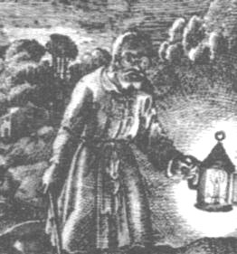<br>
            <font face="Arial,Helvetica"><font color="#000099"><font size="-1">FIGURE
                  XXXII</font></font></font> <br>
            <i><font face="Arial,Helvetica"><font color="#000099"><font size="-1">(détail
de
                    la gravure XLII)</font></font></font></i></p>
        </center>
        <p><font face="Arial,Helvetica"><font color="#000099">L'épigramme latine
              qui souligne l'image en complète l'enseignement :</font></font> <br>
          &nbsp;</p>
        <center>
          <p><b><font face="Arial,Helvetica"><font color="#660000"><font size="-1">«
                    <i>La Nature est ton guide, et toi, par l'art, sois son
                      suivant de bon grès,</i></font></font></font></b> <br>
            <b><i><font face="Arial,Helvetica"><font color="#660000"><font size="-1">Tu
t'égares,
                      si elle n'est pas ta compagne dans la voie.</font></font></font></i></b>
            <br>
            <b><i><font face="Arial,Helvetica"><font color="#660000"><font size="-1">Que
le
                      Raisonnement te donne l'aide du Bâton, que l'Expérience te
                      fortifie les yeux.</font></font></font></i></b> <br>
            <b><i><font face="Arial,Helvetica"><font color="#660000"><font size="-1">Par
quoi
                      tu puisses distinguer ce qui se trouve au loin.</font></font></font></i></b>
            <br>
            <b><i><font face="Arial,Helvetica"><font color="#660000"><font size="-1">Que
la
                      Lecture soit ta Lampe lumineuse dans les ténèbres,</font></font></font></i></b>
            <br>
            <b><font face="Arial,Helvetica"><font color="#660000"><font size="-1"><i>Afin
que,
                      prudent, tu te gardes de l'amas des paroles et des choses.</i>
                    »</font></font></font></b></p>
        </center>
        <p><font face="Arial,Helvetica"><font color="#000099">Ce sont bien des
              lunettes que l'on voit posées sur les yeux du vieillard. Il s'agit
              d'une indication. Quand le cristal de roche est coloré par des
              traces d'oxyde de fer et de manganèse, il forme un grand nombre de
              pierres précieuses naturelles assez estimées, comme la topaze du
              Brésil, le rubis de Bohême, l'améthyste ;mais la préparation de
              ces pierres procède davantage de <u>tours de main spagyriques</u>
              que de l'alchimie vraie et séculaire. Il faut en effet distinguer
              ici nettement les cristaux de roche teints, des <a href="#" title="lien mort dans l'archive">véritables
                pierres précieuses</a>.</font></font> <br>
          <font color="#000099"><font face="Arial,Helvetica">Ainsi,
              les améthystes ne sont-elles que des cristaux de roche teints de
              violet et de pourpre et il faut les séparer de l'améthyste de
              l'Inde qui est - assure Pline [</font></font><font face="Arial,Helvetica"><i><font

                color="#990000"><font size="-1"><b>Hist. Nat</b>., XXXVII, 40</font></font></i><font

              color="#000099">] - la première et la plus belle des pierres
              violettes. Son éclat doux et moëlleux semble remplir et rassasier
              tranquillement la vue sans la frapper de rayons pétillants comme
              fait l'escarboucle. Buffon réserve le nom d'améthyste orientale à
              des rubis dont quelques-uns semblent offrir des teintes d'un rouge
              mêlé de pourpre. Il en est de même des cristaux-topazes qui se
              trouvent en Bohême, en Auvergne : ce ne sont que des cristaux de
              roche colorés d'un jaune plus ou moins foncé et souvent enfumé ;
              ils ne possèdent point de rapport avec la vraie topaze qui est une
              pierre précieuse rare qu'on ne trouve que dans les climats chauds
              des régions méridionales ; il semble que la topaze d'Allemagne ne
              soit qu'un spath vitreux ou fluor, lequel accompagne souvent les
              filons de plomb. Pareillement pour la chrysolite qui n'est qu'un
              cristal-topaze dont le jaune est mêlé d'un peu de vert. La
              chrysolite des Anciens était la pierre précieuse qu'on nomme
              aujourd'hui la topaze orientale. Pline en a dit que :</font></font>
        </p>
        <p><font face="Arial,Helvetica"><font color="#000099">«</font><font color="#990033">
              <i><font size="-1">la chrysolite dans sa beauté, fait pâlir l'or
                  lui-même ; aussi a-t-on coutume de la montrer en transparent
                  et sans la doubler d'une feuille brillante qui n'aurait rien à
                  ajouter à son éclat </font></i></font><font color="#000099">».
              [</font><i><font color="#660000"><font size="-1"><b>Hist. Nat</b>.,
                  XXXVII, 42</font></font></i><font color="#000099">]</font></font>
        </p>
        <p><font face="Arial,Helvetica"><font color="#000099">Les aigues-marines
              ne sont encore que des cristaux quartzeux teints de bleuâtre ou de
              verdâtre ; la ressemblance de couleur a fait penser que le béryl
              des Anciens était notre aigue-marine ; mais ce béryl, auquel les
              Lapidaires donnent le nom d'aigue-marine orientale, est une pierre
              dont la densité est égale à celle du diamant. Le saphir d'eau
              n'est qu'une pierre vitreuse faiblement colorée de bleu qui ne
              doit point être confondue avec le vrai saphir ou saphir d'orient ;
              il est de la même essence que le feldspath ou du moins que les
              parties quartzeuses dont il est composé, mêlé de feldspath. <a href="../original/gemmes.html">Buffon</a>
              écrit, dans son <b><i><font size="-1">Histoire Naturelle des
                    Minéraux</font></i></b> :</font></font> </p>
        <blockquote><font face="Arial,Helvetica"><font color="#000099"><font size="-1">M.
Achard,
                très-habile chimiste, de l'Académie de Berlin, ayant fait
                l'analyse chimique du rubis &amp; d'autres pierres précieuses,
                &amp; en ayant tiré de la terre alcaline, a pensé que le cristal
                de roche en contenait aussi, &amp; dans cette idée il a imaginé
                un appareil très ingénieux pour former du cristal en faisant
                passer l'air fixe de la craie à travers du sable quartzeux &amp;
                des diaphragmes d'argile cuite. M. le prince Galitzin qui aime
                les Sciences &amp; les cultive avec grand succès, eut la bonté
                de m'envoyer ,au mois de septembre 1777, un extrait de la Lettre
                que lui avoit écrite M. Achard, avec le dessin de son appareil
                pour faire du cristal ; M. Magellan, savant Physicien, de la
                Société royale de Londres, me fit voir quelque temps après un
                petit morceau de cristal qu'il me dit avoir été produit par
                l'appareil de M. Achard, &amp; ensuite il présenta ce même
                cristal à l'Académie des Sciences ; les</font></font></font> <font

            face="Arial,Helvetica"><font color="#000099"><font size="-1">Commissaires
                de cette Compagnie firent exécuter l'appareil, &amp; essayèrent
                de vérifier l'expérience de M. Achard ; j'engageai M. le duc de
                Chaulnes &amp; d'autres habiles Physiciens à prendre tout le
                temps &amp; tous les soins nécessaires au succès de cette
                expérience, &amp; néanmoins aucun n'a réussi, &amp; j'avoue que
                je n'en fus pas surpris , car d'après les procédés de M. Achard,
                il me paroît qu'on viendroit plutôt à bout de faire un rubis qu'
                un cristal de roche ; j'en dirai les raisons lorsque je
                traiterai des pierres précieuses, dont la substance , la
                formation &amp; l'origine sont, selon moi, très différentes de
                celles du cristal de roche. En attendant, je ne puis
                qu'applaudir aux efforts de M. Achard, dont la théorie me paroît
                saine &amp; peut s'appliquer à la cristallisation des pierres
                précieuses ; mais leur substance diffère de celle des cristaux,
                tant par la densité que par la dureté &amp; l'homogénéité ;
                &amp; nous verrons que c'est de la terre limoneuse ou végétale ,
                &amp; non de la</font></font></font> <font face="Arial,Helvetica"><font

              color="#000099"><font size="-1">matière vitreuse que le diamant
                &amp; les vraies pierres précieuses tirent leur origine.</font></font></font></blockquote>
        <font face="Arial,Helvetica"><font color="#000099">Il s'agit là, à notre
            connaissance, du premier essai « officiel » de la réalisation des
            gemmes orientales [</font><font color="#660000"><font size="-1">cf.
              section du <a href="../original/imitat-prec.html">Mercure</a> pour d'autres
              développements</font></font><font color="#000099">]. Il y a donc
            loin de la synthèse spagyrique à l'alchimie.</font></font> <br>
        <font face="Arial,Helvetica"><font color="#000099"></font></font>&nbsp;
        <p><a  name="h)-"></a><font face="Arial,Helvetica"><font color="#000099"><b>h)-</b><u>les&nbsp;<a

                   name="contraires"></a>contraires</u></font></font> <br>
          &nbsp; </p>
        <p><br>
        </p>
        <center>
          <p>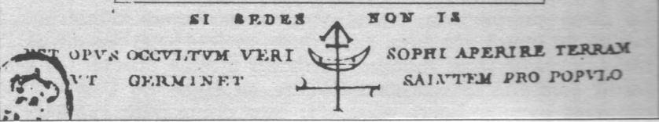</p>
          <p><a  name="huitieme phrase"></a><b><font face="Arial,Helvetica"><font

                  color="#660000"><font size="-1">VIII. SI SEDES NON IS</font></font></font></b>
          </p>
          <p><font face="Arial,Helvetica"><font color="#000099"><font size="-1">forme
                  directe</font> : </font><b><font color="#660000"><font size="-1">SI
                    TU T'ARRÊTES, TU NE VAS PAS</font></font></b></font> <br>
            <font face="Arial,Helvetica"><font color="#000099"><font size="-1">forme
                  contraire</font> : </font><b><font color="#660000"><font size="-1">SI
TU
NE
                    T'ARRÊTES PAS, TU VAS</font></font></b></font></p>
        </center>
        <p><font face="Arial,Helvetica"><font color="#000099">Ce palindrome «
              hermétique » est une forme cryptographique du serpent Ouroboros
              qui stigmatise l'oeuvre entier. Les alchimistes nous disent que
              leur dissolvant doit être une eau permanente ; rappelons-nous
              aussi la médaille d'or de Tentzel [</font><font color="#990000"><font

                size="-1">cf. <b><i><a href="../original/philalethe-6.html#Tentzel">Introïtus,
                      VI</a></i></b></font></font><font color="#000099">] au
              revers de laquelle on lit « en mémoire perpétuelle » signalant là
              encore l'impérieuse nécessité de disposer pendant un temps
              prolongé d'un corps susceptible de rester dissous à haute
              température sans s'évaporer. La forme palindromique de
              l'expression fait très bien sentir le caractère circulaire que
              doit posséder cette eau ignée, ce feu aqueux. E. Canseliet écrit à
              ce sujet :</font></font> </p>
        <p><font face="Arial,Helvetica"><font color="#000099">"</font><i><font color="#990000"><font

                  size="-1">Oui, qu'est-ce qui pourrait faire, spécialement,
                  qu'on <u>tombât</u> en cet endroit, si ce n'est la <u>marche
                    de pierre</u>, qu'il importe donc de ne pas manquer, en la
                  recherchant <u>sous</u> ses pieds, tout en la demandant au <u>ciel</u>.</font></font></i><font

              color="#000099">"</font></font> </p>
        <p><font face="Arial,Helvetica"><font color="#000099">La réponse à cette
              énigme est esquissée dans les commentaires de l'examen de la porte
              alchimique. Nous ferons remarquer qu'il s'agit d'une porte faite,
              en toute hypothèse, de<a  name="travertin"></a><u>travertin</u>,
              ainsi que le précise E. Canseliet ; autrement dit de calcaire
              fibreux [<span style="color: #660000;">ou chaux carbonatée
                fibreuse</span>] qui constitue, quand il est coloré, l'albâtre
              calcaire ou albâtre antique dont une variété correspond au <u>gypse</u>,
              isomère lithologique de l'<u>alun</u>. Ce travertin doit subir la
              séparation initiale qui en fera littéralement « tomber » le tartre
              vitriolé d'un côté et la chaux de l'autre. A. Baumé nous parle de
              cette séparation [</font><b><i><font color="#660000"><font size="-1">Chymie
                    expérimentale et raisonnée</font></font></i></b><font color="#000099">]
              :</font></font> </p>
        <blockquote><b><font face="Arial,Helvetica"><font color="#000099"><font

                  size="-1">Alkali fixe et gypse</font></font></font></b> <br>
          <font face="Arial,Helvetica"><font color="#000099"><font size="-1">Le
                <u>gypse</u> étant un sel vitriolique à base terreuse, l'<u>alkali
                  fixe</u> le décompose comme tous les sels à base terreuse :
                mais j'ai déterminé par des expériences, les proportions de
                terre et d'acide vitriolique contenues dans plusieurs de ces
                substances, dont je vais rendre compte. J'ai fait dissoudre 4
                gros [1 gros = 3.824 g] de gypse de Montmartre, réduit en
                poudre, dans 18 livres d'eau bouillante : j'ai versé dans cette
                liqueur une suffisante quantité d'alkali fixe très pur pour
                faire précipiter la terre et saturer l'acide. J'ai recueilli le
                précipité terreux, et l'ai lavé dans beaucoup d'eau bouillante :
                je l'ai fait sécher, et j'ai obtenu 2 gros 18 grains [1 grain =
                0.053 g] de terre calcaire : c'est par conséquent 1 gros 54
                grains d'acide vitriolique que cette matière contenait. J'ai
                fait évaporer la liqueur jusqu'à légère pellicule : elle est
                devenue rousse et phlogistiquée : elle m'a fourni des cristaux
                de <u>tartre vitriolé</u>. J'ai fait la même expérience sur de
                la pierre à plâtre ordinaire de Montmartre. Les phénomènes ont
                été les mêmes. J'ai obtenu 2 gros 24 grains de terre calcaire
                semblable à la précédente. J'ai traité de même de l'albâtre et à
                la même dose de demi-once [1/16de l'ancienne livre de Paris,
                valant 30.594 g] : j'ai obtenu 2 gros 28 grains de terre
                calcaire très blanche. La liqueuer mise à évaporer est devenue
                rousse et phlogistiquée&nbsp; :elle a pareillement fourni du
                tartre vitriolé.</font></font></font></blockquote>
        <font face="Arial,Helvetica"><font color="#000099">Nous trouvons ici la
            correspondance avec la dernière phrase gravée sur la porte :</font></font>
        <br>
        &nbsp;
        <p><br>
        </p>
        <center>
          <p><a  name="neuvieme phrase"></a><b><font face="Arial,Helvetica"><font

                  color="#660000"><font size="-1">IX. EST OPUS OCCULTUM VERI
                    SOPHI APERIRE TERRAM VT GERMINET SALVTEM PRO POPVLO</font></font></font></b>
          </p>
          <p><b><font face="Arial,Helvetica"><font color="#660000"><font size="-1">L'OEUVRE
CACHÉ
                    DU VRAI SAGE EST D'OUVRIR LA TERRE, AFIN QU'ELLE PRODUISE LE
                    SALUT POUR LE PEUPLE.</font></font></font></b></p>
        </center>
        <p><font face="Arial,Helvetica"><font color="#000099">On peut aussi
              traduire <b><font size="-1">POPULO</font></b> par le <b><font size="-1">MONDE</font></b>,
              ce qui est plus conforme à la doctrine. Cette ouverture initiale
              touche donc l'une des deux matières premières de l'oeuvre [<a  name="gypse_3"></a></font><font

              color="#660000"><font size="-1">gypse
                = </font></font></font><font face="Symbol"><font color="#660000"><font

                size="+1">guyoV</font></font></font><font face="Arial,Helvetica"><font

              color="#000099">] et explique une partie du sens de l'allégorie du
              fixe et du volatil qui s'attache à cette partie de l'oeuvre,
              d'habitude symbolisée par la lutte entre l'aigle [</font><font color="#660000"><font

                size="-1">assimilable
                à </font></font></font><font color="#660000"><font face="Symbol"><font

                size="+1">guy</font></font><font face="Arial,Helvetica"><font size="-1">
                = vautour, oiseau de proie</font></font></font><font face="Arial,Helvetica"><font

              color="#000099">] et le lion ou d'autres animaux à caractère
              dissemblable.</font></font> <br>
          &nbsp; </p>
        <center>
          <p>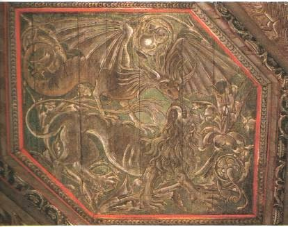<br>
            <font face="Arial,Helvetica"><font color="#000099"><font size="-1">FIGURE
                  XXXIII</font></font></font> <br>
            <i><font face="Arial,Helvetica"><font color="#000099"><font size="-1">(château
du
                    Plessis-Bourré, l'aigle et le lion)</font></font></font></i></p>
        </center>
        <p><font face="Arial,Helvetica"><font color="#000099">Elle éclaire aussi
              le sens des paroles de Philalèthe [</font><b><i><font color="#660000"><font

                    size="-1"><a href="../original/philalethe-7.html">Introïtus, VII</a></font></font></i></b><font

              color="#000099">] quand il déclare :</font></font> </p>
        <p><i><font face="Arial,Helvetica"><font size="-1"><font color="#000099">"</font><font

                  color="#990033">Pour bien dénouer la difficulté, lis
                  attentivement ce qui suit : prends quatre parties de
                  notre&nbsp;<a  name="Dragon igné"></a><u>Dragon igné</u>, qui
                  cache dans son ventre l'Acier magique, et neuf parties de
                  notre <u>Aimant</u>; mêle-les ensemble avec l'aide du torride
                  Vulcain, de façon qu'ils forment une eau minérale où surnagera
                  une écume qu'il faut rejeter.</font><font color="#000099">"</font></font></font></i>
        </p>
        <p><font face="Arial,Helvetica"><font color="#000099">Préparation du
              dissolvant, dont le secret tourne autour de substances telles que
              : <b><font size="-1">alkali fixe - tartre vitriolé - huile de
                  tartre - foie de soufre</font></b>, de toute façon, un sel de
              potassium. Quant à l'<font size="-1"><a href="#neuvieme%20phrase">idéogramme</a></font>
              central, on peut y voir : le symbole de la chaux, une croix, une
              flèche, un croissant de lune, traversé par une barre horizontale ;
              la chaux, la barre centrale et une autre barre, située
              immédiatement sous la flèche, sont de taille&nbsp;
              proportionnellement décroissante. Par là semble signifiée une
              action de séparation [</font><font color="#660000"><font size="-1">flèche</font></font><font

              color="#000099">] sur une substance [</font><font color="#660000"><font

                size="-1">qui
                contient
                de la chaux</font></font><font color="#000099">] qui joue un
              rôle dans la préparation du Mercure [</font><font color="#660000"><font

                size="-1">croissant lunaire</font></font><font color="#000099">],
              action qui doit être réitérée [</font><font color="#660000"><font

                size="-1">trois barres</font></font><font color="#000099">].
              Mais ces réitérations sont-elles allégoriques ou ont-elles une
              existence ? Baumé, là encore, répondra à cette question :</font></font>
        </p>
        <blockquote><a  name="Alkali"></a><b><font face="Arial,Helvetica"><font color="#000099"><font

                  size="-1">Alkali fixe artificiel</font></font></font></b> <br>
          <font face="Arial,Helvetica"><font size="-1"><font color="#000099">J'ai
pulvérisé
                du <u>marbre</u> blanc : je l'ai mêlé avec son poids égal de
                charbon d'<u>huile de corne de cerf</u> [</font><font color="#660000">composée
                entre autres de phosphate de chaux</font><font color="#000099">]
                : j'ai renfermé ce mêlange dans un creuset : j'ai luté le
                couvercle, afin qu'il ne s'introduisit point de cendres du
                charbon : j'ai fait chauffer ce creuset pendant deux heures
                jusqu'au rouge blanc. Le creuset étant hors du feu et refroidi,
                j'en ai séparé la matière : elle était très <u>noire</u>, parce
                que la substance phlogistique n'a pu brûler, faute du concours
                de l'air : ce mélange ainsi calciné avait une saveur plus forte
                que la <u>chaux</u> vive ordinaire. J'ai exposé cette matière à
                l'air humide pendant trois jours ; elle a peu augmenté de poids
                : je l'ai mêlée avec son poids égal de charbon d'huile de corne
                de cerf, et un peu d'<u>eau</u> : je l'ai fait calciner de
                nouveau, comme la première fois, pendant deux heures, ayant luté
                auparavant le couvercle, pour éviter l'introduction de la
                cendre. J'ai examiné ensuite cette matière : je leui ai trouvé
                une saveur décidément <u>alcaline</u>, quoique participant
                encore de celle de la chaux : comme elle ne me paraissait pas
                suffisamment alcaline, j'ai réitéré cette opération pour la
                troisème fois : j'ai mêlé chaque fois la matière avec son poids
                égal de pareil charbon d'huile de corne de cerf et un peu d'eau,
                en lutant toujours le couvercle au creuset, pour évter
                l'introduction de la cendre. J'ai fait dissoudre dans de l'eau
                la matière ainsi préparée : j'ai filtré la liqueur ; elle était
                parfaitement claire : elel avit une légère saveur d'eau de
                chaux, mais accompagnée de celle de l<u>'alcali fixe</u> bien
                décidée. J'ai fait concentrer cette liqueur : il s'est formé
                pendant l'évaporation quelques pellicules de chaux ; mais la
                liqueur restante avait toutes les propriétés d'un alcali fixe
                très caractérisé, verdissant les couleurs bleues des végétaux,
                pouvant se dessécher sur le feu, attirer l'humidité de l'air, et
                se résoudre en liqueur [huile de tartre faite par défaillance],
                comme le fait l'alcali fixe tiré de la cendre des végétaux : cet
                alcali fait effervescence et forme des sels neutres avec les
                acides. [...] Dans toutes ces expériences, il est <u>impossible</u>
                de convertir en alcali fixe toute la quantité de terre calcaire
                qu'on emploie&nbsp; ;on ne peut également faire entrer dans la
                combinaison tout le phlogistique qu'on a mis en jeu. <u>L'eau
                  se dissipe</u> en grande partie avant que <u>l'action du feu</u>
                soit assez violente pour se combiner. Il en est de même du
                phlogistique ; il se détruit en grande partie, avant que
                l'action du feu puisse le combiner avec la terre. Toutes ces
                opérations tendent à changer la nature d'une portion de la terre
                calcaire, et à la ramener à la nature des <u>terres
                  vitrifiables</u> ; dans cet état, elle ne peut plus former de
                matière saline, et il reste enfin une portion de phlogistique
                dans l'état charbonneux, qui n'entre pour rien dans cette
                combinaison. [...] J'avais soin d'<u>ajouter</u> à la matière,
                après chaque calcination, un peu d'<u>eau</u>, afin de remplacer
                celle qui s'était dissipée, m'étant aperçu que cette addition
                favorisait mieux la combinaison. [...] On peut présumer que la
                Nature forme aussi cet alcali par la voie humide : c'est même le
                moyen le plus général qu'elle emploie pour produire l'immense
                quantité d'alcali fixe qui existe...</font></font></font></blockquote>
        <font face="Arial,Helvetica"><font color="#000099">Cette expérience, que
            nous pourrions appeler « capitale » permet de comprendre le sens
            des&nbsp;<a  name="réitérations"></a>réitérations et des&nbsp;<a  name="imbibitions"></a>imbibitions
            que décrivent les alchimistes dans leurs traités. On voit assez
            bien, aussi, se dessiner le sens de l'allégorie du combat du fixe et
            du volatil. Le but, ici, est la préparation de l'alkali fixe [</font><font

            color="#660000"><font size="-1">carbonate de potasse ou borith des
              Anciens</font></font><font color="#000099">] par la voie humide,
            au contraire de ce que nous avons plus haut [</font><b><i><font color="#660000"><font

                  size="-1">l'Alchimie
                  expliquée sur ses Textes classiques</font></font></i></b><font

            color="#000099">]. La difficulté vient de l'évaporation trop rapide
            de l'eau qui empêche au feu de pouvoir réaliser l'opération par
            laquelle la terre calcaire devient du carbonate de potasse. D'autres
            points de convergence apparaissent avec les textes : la matière
            primitive est noire ; il y a trois réitérations et des imbibitions
            d'eau. On peut trouver trace de réitération dans un autre passage
            d'A. Baumé touchant de près notre sujet :</font></font>
        <blockquote><b><font face="Arial,Helvetica"><font color="#000099"><font

                  size="-1">Combinaison de la terre calcaire avec la terre
                  vitrifiable par la voie sèche</font></font></font></b> <br>
          <font face="Arial,Helvetica"><font color="#000099"><font size="-1">J'ai
exposé
                au grand feu un mélange de parties égales&nbsp; de sable broyé
                et de craie : ce mélange n'a point fondu ; mais la terre
                calcaire s'est réduite en chaux vive. J'ai exposé ce mélange à
                l'air pendant quelques temps : la chaux s'est chargée de
                l'humidité de l'air, comme elle a coutume de le faire, et s'est
                réduite en poudre. J'ai exposé de nouveau ce mélange à la même
                action du feu : il est entré en fusion et il a formé une matière
                tuméfiée, poreuse, demi-transparente et qui n'a plus attiré
                l'humidité de l'air. On ne eput attribuer cet effet à aute
                chose, sinon à une addition de matière saline, laquelle s'est
                formée pendant la seconde calcination : elle s'est trouvée alors
                en dose suffisante pour entraîner la fusion du sable [...]</font></font></font></blockquote>
        <font face="Arial,Helvetica"><font color="#000099">Là encore, mais par
            voie sèche, on retrouve les réitérations.</font></font> <br>
        &nbsp; <br>
        &nbsp; <br>
        <center>
          <p><a  name="Conclusion"></a><b><font face="Arial,Helvetica"><font color="#660000">Conclusion</font></font></b></p>
        </center>
        <p><font face="Arial,Helvetica"><font color="#000099">L'examen de la
              porte alchimique de la villa Palombara nous a permis de préciser
              certains points restés obscurs. Nous ne prétendons nullement avoir
              révélé tous les arcanes, ni même les avoir interprétés dans leur
              sens exact, mais du moins avons-nous essayé d'être aussi complet
              que possible. Nous souhaitons avoir incité le lecteur à
              approfondir cette science d'Hermès dont il a pu se rendre compte
              que, loin d'être un tissu de divagations, elle a été l'objet d'un
              intérêt jamais interrompu de la part de grands esprits, comme par
              exemple Isaac Newton, Marcellin Berthelot, Eugène Chevreul ou
              Carl-Gustav Jung. Nous citerons pour finir cet extrait d'un
              article que Simon Diner [</font><font color="#660000"><font size="-1">Institut
de
                biologie physico-chimique et fondation Louis de Broglie, CNAM</font></font><font

              color="#000099">] a écrit à l'occasion de la parution d'un livre
              de témoignages autour de la figure de Louis de Broglie [</font><font

              color="#660000"><font size="-1"><b><i>Louis de Broglie que nous
                    avons connu</i></b>, Fondation Louis de Broglie, Paris, 1988</font></font><font

              color="#000099">] :</font></font> </p>
        <blockquote><font face="Arial,Helvetica"><font color="#000099"><font size="-1"><b>Le
dualisme
                  onde-particule et la tradition alchimique</b> [pp. 59-64]</font></font></font><font

            face="Arial,Helvetica"><font color="#000099"><font size="-1"></font></font></font>
          <p><font face="Arial,Helvetica"><font color="#000099"><font size="-1">[...]
L'alchimie
                  se présente en réalité comme un conservatoire de grandes idées
                  forces sur le monde, un lieu privilégié d'intuitions
                  fondamentales. L'alchimie contient une sagesse profonde,
                  traditionnellement accumulée, sur le mouvement, les
                  transformations, le temps. Que Newton ait été un grand
                  alchimiste n'a alors rien d'étonnant. [...] L'alchimie
                  véhicule une conception aristotélicienne du monde opposée à la
                  conception platonicienne. Une conception où le mouvement et la
                  matière se conjuguent pour créer les formes, alors que pour le
                  platonisme les formes sont données a priori.[...] L'alchimie
                  est comme la conscience traditionnelle de l'enjeu d'une
                  dualité fondamentale au sein de l'Unité, qu'elle exprime par
                  le précepte <i>Solve et Coagula</i>. Signification de rapport
                  entre le saisissable et l'insaisissable exemplifié par le
                  comportement du mercure.[...] La formule alchimique se veut
                  aussi porteuse d'une doctrine exprimant le statut de l'espace
                  dans la Nature et le rôle anthropologique de l'espace à
                  travers la perception, le vécu et la connaissance. <i>Solve
                    et Coagula</i> résume l'idée que la problématique de
                  l'espace est essentiellement une dialectique du point et de
                  l'étendue.[...] La pensée alchimique [qui tente] d'engendrer <i>l'Or
                    de l'Unité des contraires</i>, oscille sans cesse entre la
                  manipulation de la matière et la purification de l'esprit.</font></font></font>
            <br>
            &nbsp; <br>
            &nbsp; <br>
            <br>
          </p>
          <center>
            <p><a  name="Bibliographie"></a><b><font face="Arial,Helvetica"><font

                    color="#660000">Bibliographie</font></font></b></p>
          </center>
          <p><font face="Arial,Helvetica"><font color="#000099">1. <b><i><font

                      size="-1">Deux Logis alchimiques</font></i></b>, Eugène
                Canseliet, Pauvert, 1979</font></font> <br>
            <font face="Arial,Helvetica"><font color="#000099">2. <b><i><font size="-1">L'Entrée
ouverte
                      au Palais fermé du Roi</font></i></b>, Eyrénée Philalèthe,
                Salmon, t. IV, Amsterdam, 1667</font></font> <br>
            <font face="Arial,Helvetica"><font color="#000099">3. </font><font

                color="#000080"><b><i><font size="-1">Le Mystère des Cathédrales
                      et l interprétation ésotérique des symboles hermétiques
                      du grand Suvre</font></i></b>, Fulcanelli, Pauvert (</font><font

                color="#660000"><font size="-1">1979 pour la dernière édition</font></font><font

                color="#000080">)</font></font> <br>
            <font face="Arial,Helvetica"><font color="#000080">4. <b><i><font size="-1">Les
Demeures
                      philosophales et le symbolisme hermétique dans ses
                      rapports avec l art sacré et l ésotérisme du grand
                      Suvre</font></i></b>, Fulcanelli, Pauvert (</font><font color="#660000"><font

                  size="-1">1983
                  pour
                  la dernière édition</font></font><font color="#000080">)</font></font>
            <br>
            <font face="Arial,Helvetica"><font color="#000080">5.<i> <b><font size="-1">L
                      Alchimie expliquée sur ses Textes classiques</font></b></i>,
                Eugène Canseliet, Pauvert (</font><font color="#660000"><font size="-1">1988
pour
la
                  dernière impression, réédition 1980</font></font><font color="#000080">)</font></font>
            <br>
            <font face="Arial,Helvetica"><font color="#000080">6. <b><i><font size="-1">L'Alchimie,
Histoire,
                      technologie, pratique</font></i></b>, ouvrage collectif,
                Pierre Belfond, 1972</font></font> <br>
            <font face="Arial,Helvetica"><font color="#000080">7. </font><font

                color="#000099"><b><i><font size="-1">La Conduite par la main
                      vers le ciel chimique</font></i></b> de Jacques Tol, à
                amsterdam, 1688</font></font> <br>
            <font face="Arial,Helvetica"><font color="#000099">8. <b><i><font size="-1">Histoire
Naturelle
                      des minéraux</font></i></b>, Gorges Louis Leclerc, comte
                de Buffon, édition de Leiden, Imprimerie royale, 1783</font></font>
            <br>
            <font face="Arial,Helvetica"><font color="#000099">9. <b><i><font size="-1">La
révélation
                      d'Hermès Trismégiste</font></i></b>, J.A. Festugière, Les
                Belles-lettres, Paris, 1990 (3 vol.)</font></font> <br>
            <font face="Arial,Helvetica"><font color="#000099"></font></font>&nbsp;</p>
        </blockquote>
      </blockquote>
      <center><a href="#" title="lien mort dans l'archive"></a><a href="../original/imitat-prec.html"></a></center>
    </blockquote>
  </body>
</html>
